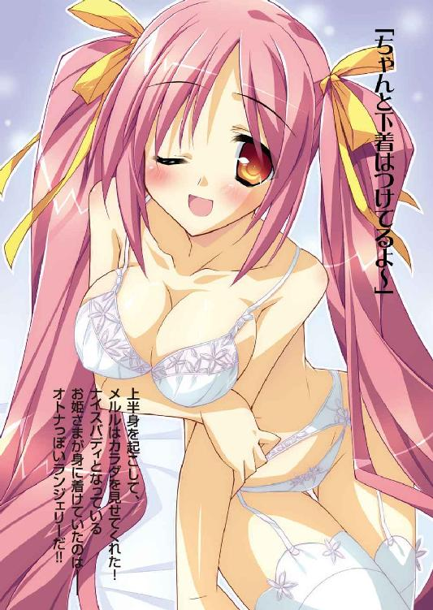
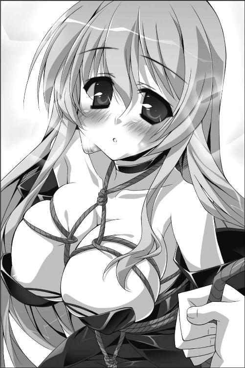

| Ｈ＋Ｐ5 －ひめぱら－ (富士見ファンタジア文庫) | |
| 風見 周 & ひなた 睦月 | |
| 富士見書房 (2011) | |


本作品の全部または一部を無断で複製、転載、配信、送信したり、ホームページ上に転載することを禁止します。また、本作品の内容を無断で改変、改ざん等を行うことも禁止します。
本作品購入時にご承諾いただいた規約により、有償・無償にかかわらず本作品を第三者に譲渡することはできません。
本作品を示すサムネイルなどのイメージ画像は、再ダウンロード時に予告なく変更される場合があります。
本作品は縦書きでレイアウトされています。
また、ご覧になるリーディングシステムにより、表示の差が認められることがあります。
口絵・本文イラスト ひなた睦月
プロローグ
「恭太郎さま！ メインディッシュの準備ができましたわ！ こちらへいらっしゃい！」
トレクワーズ王国。港街ナトリア。地方領主の館。
エリスの声に導かれるまま、神来恭太郎は隣室へと繫がる引き戸を開けて──
「ぬおわっ!?」
奇妙な悲鳴をあげてしまった。
用意されていたのは、豪華な刺身の盛り合わせだ。見るからに活きのいい魚の切り身が綺麗に盛られてる。
問題は、刺身の盛られた器の方だ。
船のカタチをしたベッドに、なんと半裸のエリスが横たわっていのだ!!
身に着けているものは、メイドさんが着けるフリルのついたカチューシャ。白いストッキングとガーターベルト。そして、エプロン、なのだが。
なぜか、エプロンがものすごく小さいものに変わっていた。
辛うじて、脚の付け根の辺りを隠しているだけ。フリルで飾られた小さな前掛けといった方がしっくりくる大きさだ。
上半身はなにも身に着けていない。
露出した白い肌をキャンバスにしているかのようにお刺身が並べられている。
思わず、生唾を飲む恭太郎。
こ、これはいわゆる──《女体盛り》というヤツではないのかっ!?
「ななな、なんでこんなことしてるんだよ、エリスっ!?」
「これもご奉仕の一環ですのっ！ 自分のカラダをお皿にして食事をさせるのは、メイド最強のご奉仕技と聞きましたわっ！」
「誰から聞いたんだ、そんな大噓っ!?」
だいたい想像がつくけども！
「うぅ......あんまり見つめてはいけませんわ......。恥ずかしいですの......」
頰だけでなく、第三王女の鎖骨の辺りまで朱に染まっている。
恭太郎はビュンと音が出そうな勢いで顔を背けて。
「は、恥ずかしいなら、そんなことしなきゃいいだろっ！」
「で、でも、こうすれば殿方は誰でも喜ぶって聞きましたものっ！」
エリスは震える声で言い募る。
「今の今まで、私は誰かにご奉仕するなんて、絶対にイヤでしたわ......。世界中の人間がこの私のために尽くすべきだって思ってましたの。だけど......だけど......」
うるうる。うるうるうる──潤みきった瞳で恭太郎の方を見上げてくる。
「あなたの喜ぶ顔を見ていたら、考えが少しだけ変わりましたの......。ご奉仕なんて絶対にイヤだったはずなのに......恭太郎さまが喜ぶと、私もすごくうれしくて......もっともっと喜んで欲しくて......。こんな気持ち、初めてですわ......」
「エリス......」
「恭太郎さま......こちらを見て......」
できるだけカラダを見ないように目を細めながら、恭太郎はエリスに視線を向ける。
耳の先まで赤く染めた王女さまは、恥ずかしさを堪えるようにギュッと両手を握りしめた。震える声で囁く。
「恭太郎さまが喜んでくださるなら、私は平気ですわ......」
「............」
「メインディッシュを食べてくださいまし...... 」
」
さて。
もしも、このシーンが『間違い探し』であったなら、チェックすべきポイントは山ほどあったろう。
高飛車で高慢ちきなお姫さまであるエリスが、メイドとして恭太郎に尽くしているのは明らかにおかしい。彼女が彼を『さま付け』で呼ぶのもあり得ないことだ。
そして、なにより。
《女体盛り》なんて大技を繰り出す理由なんて、そうそうないだろう。
恭太郎がなぜ、このようなとんでもない状況に陥っているのか。
それを理解するためには、少しばかり時間を遡らねばならない──
第一章 予想もしない大ニュース。
「あーあ、つまんねぇな......」
将軍用の天幕の中に、気の抜けた声が響く。
眼帯をつけた、赤髪の女丈夫。カルタギア帝国が誇る四将軍の一人──ムージ・トラファルガーが右手の人差し指一本で逆立ちしながら、腕立て伏せをしていた。肘を曲げ伸ばしするたびに、肩や背中の筋肉が大きく隆起する。
黒竜の鱗でできた鎧を身に纏った黒髪の美女。キスト・カラサイシュは眉をひそめた。
「戦の最中だぞ。そのようにたるんだ発言をするな。士気に関わるだろう？」
「戦？ どこがだよ？ 戦闘なんて、まったくはじまってないだろーが」
指立て伏せをしつつ、首を巡らす。開け放たれている天幕の入り口から、陣容を望むことができた。
カルタギア軍が陣を構えているのは、帝国と東方国境を接しているシュリンガー王国という名の小国の首都だ。高い城壁に囲まれた要塞都市である。
難攻不落の城塞に匕首を突きつけるかのように、カルタギアの兵士二万が戦闘準備を調えている。歩兵、騎兵、魔砲兵、魔術師団、幻獣部隊、飛竜部隊──勇猛をもって鳴るカルタギア軍が美しい陣形を組んで、突撃の命令を待っているのだ。
また、天幕の脇では黒い皮膚を持つ恐竜の群れが恐ろしいうなり声を上げていた。
これは《兇竜将軍》の二つ名で呼ばれているキストが魔法で召喚したものだ。彼女の号令一つで、ティラノサウルスの群れが街を蹂躙するだろう。
まさに、一触即発。兵士の放つ熱気で、周囲の空気が沸騰しそうなほどだった。
しかしながら。
ムージたちは突撃準備を調えたまま、既に五時間も待機しているのである。
その理由は──天幕の片隅に視線を移した。
戦場にはあまりにも似つかわしくないものが、そこにはいた。
にゃー。怯えたような可愛らしい鳴き声。
美しい毛並みを持つ猫が、小さな檻の中で震えていた。銀色に輝く首輪には《みゅう》と書かれている。この猫の名前だろう。
カルタギア軍が待機している理由は、この猫なのである。
苛立ちをぶつけるように、赤髪の将軍は腕立て伏せをする速度を速めた。
「気に入らねえぜ......。なにもかもが気に入らねぇ......」
キストは無表情なままで答える。
「今回の作戦の指揮権はアスピアにあるのだ。我らは従うほかない」
アスピア・バリファックスは、彼女らと同じ四将軍の一人だ。
戦闘力ではなく、奸計によって敵を葬り去ることを得意としている。
「キストだって、気に入らねぇんだろ？」
「私はそんなこと、一言も言ってないぞ」
「おまえとどんだけ一緒に戦ってると思ってんだよ？ 言わなくてもわかるよ、それくらい。──フンッ」
人差し指一本で飛び上がったムージは、今度は左手で指立て伏せを開始する。
「猫を人質......つーか、猫質にとって降伏を勧告するなんて最低だろ。どこの世界ににゃんこを誘拐されたぐらいで降伏する女王がいるんだ」
「降伏勧告を受諾せねば、首都を殲滅するとも通告しているがな......」
突撃の態勢を調えているのは、シュリンガー王国の王家や住民を威圧するためなのだ。
天幕の片隅で震える猫を眺めやり、キストは肩をすくめた。
「シュリンガーの女王プリアは、そこにいる猫を命の次に可愛がっているらしい」
「プリアって女王さまは、まだ若いのに《賢姫》なんて呼ばれてるんだろ？」
「ああ。まだ二〇にも満たない歳だそうだが、王位継承の翌年に東方諸国に合従策を提案した。《東方連合》を作り上げた立役者だ」
ウィッチェリア大陸には数多くの国が存在している。
それらの国々の民の多くはカルタギア帝国の影に怯えて暮らしていた。
最大の軍事力を持つ帝国が、大陸統一を目指して侵略戦争を繰り広げているのだ。
カルタギア帝国の宿敵であるトレクワーズ王国は、国土全体を守るバリアのような《大結界》を張ることで戦火を免れている。
だが、トレクワーズのような防御策を持つ国の方がまれであった。
ひとたびカルタギア帝国に攻められれば、ほとんどの国が為す術なく滅ぼされてしまうだろう。特に軍事力の低い小国には抗う術などない。カルタギア帝国の言いなりとなるほかなかったのだ。
そんな状況に耐えかねて立ち上がったのが、シュリンガー王国の女王プリアであった。
ウィッチェリア大陸の東方に位置する小国を一つに束ねて《東方連合》を作り上げ、カルタギア帝国に抵抗しようと考えたのである。
《東方連合》に参加した国は、一〇カ国以上。賢姫プリアの在位中は、カルタギア帝国とて《東方連合》には簡単に手が出せない──それが各国首脳の共通見解だった。
「ハッ、そんな賢い女王さまが、どうして大事なにゃんこを誘拐されるようなヘマをしたんだよ？ わけがわかんねえ」
「それもアスピアの策だそうだ。猫を溺愛している女王は、当然ながら厳重な警護をしていた。だが、アスピアは数年掛けて王国の中枢にまでスパイを潜り込ませていたのだ」
逆立ちのまま、ムージはうへぇと舌を出した。
「スパイだの人質だの......やることがセコいぜ。ンな作戦、まともな武人ならやらねえよ。正々堂々と戦えってんだ」
「ムージ。声が大きいぞ。シュリンガー王国討伐において、アスピアに指揮権をお与えになったのはカリギュラさまだ。アスピアに背くことは陛下に弓を引くのと一緒だぞ」
「はいはい、わかってますよ。女帝陛下、万歳万歳！ ったく、本当につまんねぇ！」
聞こえるように舌打ちをして、ムージはさらに腕立て伏せの速度をあげる。
「降伏勧告なんて無視して、シュリンガーの軍勢が突撃してくることを願うぜ......。そうすりゃあ、賢姫に相応しい最後を迎えさせてやるのによぉ......」
だが、ムージの願いは届かなかった。
伝令の兵士が天幕に飛び込んでくる。
「ご報告致します！ 城門が開き、女性が一名、徒歩にて我が方へと向かってきております！ 女王プリアかと思われます！」
「くそっ、降伏勧告を受諾しやがったか！」
「行くぞ、ムージ！」
「おう！」
キストは猫の入った檻を手にした。
馬にまたがり、二将はカルタギア軍の最前列へと赴く。カルタギアが布陣している地から、シュリンガーの城塞まではおよそ一キロほどの距離があった。
中央に横たわる平原を少女が一人、ゆっくりとこちらへ歩いてくる。
抜けるように白い肌の美少女だった。金髪を綺麗に結い上げている。
本来なら、敵国の使者を迎え入れる場合は、武装解除を命令するところだ。
だが、その必要はなさそうだった。
少女は全裸だったのだ。
下着すら着けていない。身に着けているものは小さなティアラ。そして、首に巻きつけられたロープ。
賢姫プリアは売り飛ばされた奴隷のように、首に縄を巻いていたのだ。
「なんつー格好だよ......」
馬から下りたムージは眉をひそめながら、キストに尋ねた。
「アイツがシュリンガーの女王さまなのか？」
「ああ、間違いない......」
「おい、誰でもいい！ 毛布でも用意してやれ！」
「そんなものは用意しなくていいですよ」
すぐさま冷たい声が降ってきた。
白馬に乗った銀髪の美女が、汚いものでも見るような瞳で全裸の女王を眺めていた。
彼女こそ、今回の作戦の立案者。《氷の策士》の異名を持つ策士。アスピア・バリファックスである。
苛立ちを隠そうともせずに、ムージは問うた。
「あんな格好をさせたのは、おまえかよ、アスピア」
「そうです。降伏勧告文書に、そのように記載しました。降伏を受諾する場合は首に縄を巻き、一糸まとわぬ姿で投降せよ、とね......」
「いくら降伏するからって、辱めていい道理はないぜ......？」
「............」
「しかも、飼い猫をさらって屈服させるなんてのは、下策ってヤツだと俺は思うんだがな、軍師さんよ」
ムージは銀髪の策士を睨み付ける。
どんなに屈強な敵すらも怯ませる屈強な将軍の眼差しを受けても、アスピアは涼しげな表情を崩さなかった。
「戦わずに勝つことこそが最上策です。一兵卒から叩き上げたムージ将軍とて、それくらいはご存じでしょう？」
「俺の教科書には、そんなコトは書かれちゃいねぇな......」
「ならば、修練所からやり直すことをお勧めします」
「上等じゃねぇか......！」
「よせ、ムージ！」
今にも殴りかかりそうだった同僚を、キスト将軍が止めた。
仮面のような無表情のまま、アスピアは続ける。
「一応、あなたにもわかるように説明しましょう。辱めることが真の目的ではありません。此度の策は『賢姫プリアは、たかが猫の子一匹のために国を捨て、裸で命乞いをした』。そのように喧伝できることに意味があります。無様な姿を晒させ、彼女の名声を地に落とすことこそが目的なのです」
白馬からゆっくりと降り立ったアスピアは、気怠げに銀色の髪をかき上げた。
「《東方連合》は、女王プリアのカリスマ性によってのみ成立しています。それを剝ぎ取ってしまえば連合は瓦解するでしょう」
「貴君の本当の狙いは東方連合の解体か」
「もちろん。そのために策を弄したのです」
全裸の女王が、カルタギアの陣から五〇メートルほどの位置まで近づいてきた。
凛とした声で、呼びかけてくる。
「シュリンガーは降伏します！ 私はどうなっても構いません！ どうか、愛する国民と......みゅうちゃんには手を出さないでください！」
飼い主の声を聞いたからだろう。
キストの足下に置かれた小さな檻の中で、猫が鳴き声をあげた。
「では、仕上げをするとしましょうか......」
アスピアは右手を前に出した。微かな声で呪文を唱える。
「【氷晶刃】」
鋭いつららのような剣が、手の中に出現する。ゆっくりと氷の刃を振り上げて、
「できるだけ、悲痛な鳴き声をあげてください。女王の耳に届くように──！」
勢いよく猫の檻に向けて振り下ろした。
──ガシッ！
猫の小さな身体が無惨に切り裂かれた──かに見えた。
「悪いが、それを許すわけにはいかねぇな......」
檻ごと叩ききられる前に、ムージが氷の剣を素手で止めたのだ。
魔法によって瞬時に筋力を増強していたため、指が切断されることはなかった。将軍の髪と同じように赤い血が一筋、手のひらから流れる。
「............」
キストは無言のままだったが、ロングソードの柄に手を掛けていた。ムージが止めなければ、兇竜将軍が氷の剣を弾き飛ばしていただろう。
「ほら、にゃんこ。ご主人さまのところへ行けよ。おまえを命がけで助けてくれたんだからな」
ムージは猫の入った檻を開けた。
猫は草原を駆け抜け、女王のもとへと走り寄る。
「よかった......。無事だったのね......。ごめんね、みゅう......」
泣き崩れる女王を気遣うように、みゅうという名の猫は頰を伝う涙を舐めていた。
「愛猫を殺されて半狂乱になってもらった方が、賢姫の無様さを喧伝できてよかったんですが......まあ、いいでしょう。想定の範囲内です」
アスピアは剣の出現している右手を振った。涼やかな音と共に、氷が弾けて消える。
冷静な口調で、周囲の部下に命令した。
「女王の身柄を拘束しなさい。ただちに、首都の占領に移ります」
兵士たちが、猫を抱いてうずくまる女王のもとへと走り寄っていく。
白馬に再びまたがったアスピアは、二人の将軍を見下ろした。
「キスト将軍、ムージ将軍。あなたがたは甘いですね。だから、神来恭太郎の奪取に幾度も失敗するのです」
「くっ......！」
トレクワーズ王国の王仕を奪えなかったのは事実だ。作戦立案に携わっていたキストは言葉を詰まらせた。
だが、そこで珍しくアスピアの表情が変わった。微かに笑ったのだ。
「ふふ、そのように怖い顔をしないでください。我らはカルタギアの四将軍。共に手を取って戦うべき間柄なのです。私はあなたがたの戦闘能力を高く評価しているのですよ」
「突然、なにを言ってやがる......？」
「私はカリギュラさまから神来恭太郎の奪取を命ぜられました。作戦の遂行には、お二人の戦闘能力が必須なのです。我が軍において、トレクワーズの姫たちと互角に渡り合えるのはお二人しかいませんからね」
「あいつらと真っ向勝負ができるのか......？」
「既に作戦は遂行中です。最高の舞台を用意して差し上げましょう」
「ムシャクシャしてたんだ......。派手な戦いは望むところだぜ！」
「どうやって、トレクワーズの姫たちを《大結界》の外へとおびき出すつもりだ？」
アスピアの答えは、キストのまったく想像しなかったものだった。
「和平ですよ」
「なに......っ？」
「トレクワーズ王国と講和条約を調印するのです」
アスピアは馬首を巡らせた。背中越しに言い切ってみせる。
「未だ私の立案した策は失敗したことがありません。神来恭太郎を必ず奪ってみせましょう。──ハッ！」
《氷の策士》は、天幕の方へと駆けていく。
賢姫プリアのか細い泣き声を聞きながら、薄ら寒い思いでムージはアスピアの背中を眺めるのだった。
×××
ウィッチェリア大陸の東方でカルタギア帝国の版図が広がった、その日。
トレクワーズ王国の後宮のたった一人の王仕さまである神来恭太郎の身に、大変な事態が起きていた──。
ジリリリリリリリリリリリ──!!
「うぅ～ん......もう朝か......」
もぞもぞと布団から手を伸ばし、恭太郎は目覚まし時計を止めた。
窓からは目映い朝日が差し込んでいる。あまりの眩しさに目を手で覆って、はたと気付いた。
「......俺、目覚ましなんか掛けてたっけ？」
トレクワーズ王国にも時計が存在する。機械時計は高価なくせに精度が悪いので、ほとんどが魔法駆動の時計だそうだ。
でも、後宮の部屋には目覚まし時計なんて置かれていなかった。もしも決まった時間に目を覚ましたかったら、後宮付きの女官に頼めば起こしてもらえるのだ。そもそも必要がないのである。
なんで、目覚ましのベルが鳴ったんだ......？
不思議に思い、周囲を見回して──恭太郎は固まった。
「こ、ここは......俺の部屋じゃないか!!」
部屋の隅に置かれているのは、学習机代わりの小さな文机。『五輪書』や『葉隠』などなどが並ぶ、一目で剣術バカとわかる書棚。壁に掛かった聖綾学園の制服。古ぼけた和だんすには、激怒した姉上が斬りつけてきた際にできた大きな刀傷がついてる。
ここはトレクワーズ王国の後宮じゃない。日本の神来家にある恭太郎の部屋だった。
「どういうコトだ......？」
上半身を起こす。懐かしさを覚えつつ、自分の部屋を眺め回した。
「どうして俺は、日本に帰ってきてるんだ......？」
昨夜は確かに、後宮の天蓋付きベッドで眠ったはずなのだ。
しかし、目が覚めたら畳の上に敷かれた布団にいる。
「ひょっとして、元の世界に帰れたのか？」
トレクワーズ王国に召喚されたのは、唐突なことだった。自室で眠っていて、目を覚ましたらウィッチェリア大陸に飛ばされていたのだ。
それとは逆のコトが起こったのだろうか？ でも、どうして急に......？
頭の中で『？？？』が乱舞する。事態にまったくついていけない。
「ひょっとして、これは夢かな？」
恭太郎が頰をつねってみようと手を伸ばしたときだ。
部屋の襖がノックされた。
「恭太郎さまっ。おはようございますっ」
返事をする前に、ひょこっと顔を出したのは、
「れ、レイシアっ!?」
トレクワーズ王国の第二王女が部屋に入ってくる。レイシアが和室にいるなんて猛烈な違和感がある、というか。
「なんなんだ、その格好はっ!?」
お姫さまが身に纏っていたのはセーラー服だった。胸元が『これでもかっ!!』というぐらいに膨らんでいるけれど、確かに恭太郎が通っている聖綾学園の女子の制服だ。
「どこかおかしいですか？」
自分の服装を見下ろして、小鳥のように首を傾げる。
「いや、だって、どうしてレイシアがウチの学校の制服を着てるんだよっ!?」
「これから学校に行くんですから、制服を着るのは当然だと思います」
「学校って!? きみはお姫さまなんだから高校なんて行かないだろ!?」
「お姫さまなんかじゃありませんよ。一介の高校一年生です。夢でも見てらっしゃったんですか？」
クスッと笑って、レイシアは壁にかかった恭太郎の制服を手に取った。
「さあ、恭太郎さまもお着替えください。お手伝いさせていただきます」
ちょっぴり頰を染め、レイシアははにかむような顔で続ける。
「きょ、今日こそはレイシアと一緒に登校してくださいましね？」
「許しませんわよ～～～～っっっ!!」
窓の方から鋭い声が聞こえた。
ガラガラッ──勢いよく窓が開き、エリスが飛び込んでくる。
彼女も聖綾学園の制服を着ていた。レイシアよりもずっとスカートの丈が短い。エリスの美脚が惜しげもなく晒されていた。ミニスカとニーソックスが作り出す絶対領域が朝日に照らされて目映く輝いているようだ。
「恭太郎と一緒に学校へ行くのは、この私なのですわっ！......あ、勘違いしないでくださいましねっ。別に恭太郎のコトなんて好きではありませんわっ。家を継ぐために、仕方なくあなたと一緒にいるだけであって、」
わたわたと言い訳をはじめるエリス。
その言葉を遮るように、さらに窓から飛び込んでくる人影があった。
「恭太郎おにいちゃーんっ！ 途中まで一緒に学校に行こうよ～っ！ 通学デートしよ」
「メルルちゃんまでっ!? というか、その格好はなにごとだっ!?」
ちぃ姫さまが身に着けていたのは小学校の制服だった。たて笛のささった赤いランドセルを背負い、頭には黄色帽子。赤いミニスカート。白いシャツには名札がついてる。
「え？ 聖綾学園の初等部の制服だよ？ いつも着てるでしょ？」
「初めて見たよっ！ っていうか、メルルちゃんって小学生だったの!?」
彼女は一三歳だったはずだ。一三歳って、中学一年生じゃなかったか!?
「小学六年生だよ～♪ でも、カラダはオトナだよっ にゃはは、確かめてみる？」
どこぞの少年探偵とは真逆なコトを言って、イタズラっぽい笑みを浮かべる。
続けて、恭太郎の部屋に入ってきたのは──
「あ、あのっ、恭太郎さまっ！ よかったら、私と一緒に登校してくださ......はわわっ！ 一番乗りしようと思ったのに、私が四番目でしたっ」
アルトちゃんだった。
彼女はブレザーの制服を着てる。タータンチェックのスカート。赤いリボン形のタイが可愛らしい。
紺色のブレザーの胸元には聖綾学園のエンブレムがついている。中等部の制服なのか？
というか、どうしてトレクワーズ王国の王女さまであるはずの彼女たちが、神奈川県神代市にある俺の部屋に制服姿で訪ねてきてるんだよっ!? 意味がわからんぞっ!?
困り果てる恭太郎のもとに詰め寄ってくる。
「恭太郎さまっ、今日こそはレイシアと登校してくださいますよねっ？」
「ダメですわっ！ 私と学校に行くって決まってますの！ そうでしょ、恭太郎っ！」
「メルルと登校してくれるよねっ？ 一緒に行ってくれたら......通学路でちゅーしてもいいよっ」
「はわわわっ、私にはちゅーなんてできませんっ。......でも、一緒に学校に行きたいですぅっ！」
「ちょっ、落ち着いてくれ、みんな！ 俺には事態が飲み込めてないんだ！」
パジャマ代わりの作務衣に身を包んだまま、恭太郎は布団の上で後ずさる。
そのとき、恐ろしい声が恭太郎の鼓膜を打ち抜いた。
「騒々しいですよっ！ 朝からなにを騒いでいるのですか、恭太郎ッ！」
桜色の着物に身を包んだ黒髪の女性──姉の桜子が部屋に入ってきたのだ。
「すみません、姉上ぇ──ッ!!」
恭太郎は電光石火の早業で土下座を敢行。布団に額をこすりつけ、許しを請う。
姉上は亡き母に代わって恭太郎を育ててくれているのであるが......その教育法はあまりにも厳格だったのだ。
『男女七歳にして席を同じうせずですよ！』
『運命の相手と一生を添い遂げることこそ、本懐というものです！』
『ふしだらなことをしたら許しませんよ、恭太郎ッ!!』
それらが、姉上の口癖。ほんの少しでも恭太郎がみだらなことをしようものなら、木刀でボコボコに殴りつけ、虐待と大差ない修行を課すのだ。命の危機を感じたのも一度や二度ではない。婦女子に囲まれている姿なんて見られたら、伝家の宝刀《神斬り》でなます斬りにされてしまうだろう。
「俺はみだらな真似なんて、これっぽっちもしてません！ だから、打ち首は！ 打ち首だけは堪忍してくださいッ！」
姉の叱咤が飛んでくるものと思った。
だが、姉上の口から出てきたのは、あまりにも意外な言葉だった。
「まあ、誰かと思えば、取桑のお嬢さまたちではありませんか。朝から遊びに来ていたのですね？」
「取桑......？」
「ま、まさか忘れちゃったの!? メルルたちの名字だよーっ!?」
メルルちゃんが胸元についた名札を指さす。
そこに書かれていた文字は──取桑めるる。
「お隣さんなのに、名字を忘れるなんてひどいと思いますぅ」
「そうですわっ！ どのくらい隣に住んでると思いますのっ、この愚か者ッ！」
アルトちゃんとエリスも唇を尖らせる。
隣に住んでる──だって？
窓の外を見た恭太郎は、驚きのあまり眼球がロケットみたいに発射されるかと思った。
お隣に巨大なお城が建っていたのだ!!
これってトレクワーズのお城じゃないか!! どんなお隣さんだよ!? 俺ンちの隣には笹沼さんって名前の老夫婦が住んでたはずだぞ!? 笹沼さンちのお爺ちゃんはどこへ消えたんだっ!?
詰め寄る妹たちを、レイシアが宥める。
「まあまあ、恭太郎さまは起きたばっかりですから、きっと寝ぼけてらっしゃるんですよ。そうですよね、恭太郎さまっ？」
「あ、ああ......」
ワケもわからず頷くことしかできない恭太郎。
姉上は《トレクワーズの五美姫》ならぬ《取桑さンちの五姉妹》を見やって、微かな笑みを浮かべる。
「ふつつかな弟ですが、よろしく頼みますね。朝食ができてますから、よかったら食べていきなさい」
「は～いっ！ 桜子おねえちゃんのごはん、美味しいから大好きーっ！」
メルルちゃんが元気よく返事をする。
「うふふ、メルルちゃんはたくさん食べてくれるから、私も作り甲斐がありますよ」
姉上が笑った、だと？ 般若の面が笑うようなものだぞ？
天変地異を目の当たりにしたように恐れおののいている恭太郎の方を向き直って、姉上は声を掛けてきた。
「いいですか、恭太郎。お嬢さまたちは幼なじみで、そのうえ許嫁です。ついつい気分がゆるみ、気安く接してしまうかもしれません。しかし、節度というものを忘れてはなりませんよ。親しき仲にも礼儀ありですからね」
そして、珍しいことにちょっぴり頰を染めて咳払いをした。
「コホンコホン。朝から跡継ぎづくりに励むのは構いません。けれど、学校に遅れるのは許しませんよ」
姉上が跡継ぎづくりを許した──だとぅ!?
『お世継ぎづくり』だろうと『跡継ぎづくり』だろうと意味合いに大差はない。どっちにせよ子づくり──すなわち、えっちをするってコトだ。
『たとえ神が許しても、この私が絶対にみだらなことは許しませんよっ！』と言い切った、あの姉上が跡継ぎづくりを許すなんて！ あり得なさすぎるっ！
「では、ごゆっくり......」
婦女子と同席していることも咎めず、桜子は襖を音も立てずに閉めてしまった。
呆気にとられて、布団の上にへたり込んだまま恭太郎は身動きが取れなかった。
その静寂を破ったのは、メルルちゃんだった。
「──だ～ってさ、恭太郎おにいちゃんっ」
小学生とは思えない艶っぽい笑みを浮かべて、恭太郎の顔を覗き込む。
セーラー服姿のレイシアも、布団の上に膝立ちになって。
「桜子さまもお許しくださったことですし、せっかくですから......その......跡継ぎづくりをいたしましょうか？」
「ままま、待ってくれよ!? どうして跡継ぎづくりをしなきゃいけないんだ！ 王国が存亡の危機ってワケでもないんだろ!? 跡継ぎなんか必要ないじゃないかっ！」
「まあ、まだ寝ぼけてますのっ!?」
エリスもレイシアの隣に膝立ちになって、両腕を腰に当てた。
「五人姉妹のうち、最初に恭太郎との跡継ぎをつくったものに、取桑コンツェルン次期総帥の座が与えられるんですのよっ！ 忘れたんですのっ!?」
忘れたもなにも、全てが初耳だよ......。
レイシアが双子の妹の言葉を補足する。
「ご病気で臥せっているお母さまが、跡継ぎの顔を見たがっています。総帥の座に興味はありませんが......お母さまを安心させたいんです」
「メルルたちはみ～んな、恭太郎おにいちゃんの許嫁なんだもんっ。えっちしちゃっても問題ないよね～？」
問題ありすぎだよっ！ その発言はランドセルを降ろした後で言ってくれっ！
「というか、みんなが許嫁ってのもおかしいだろ!? 普通、許嫁は一人だけだろ！ 重婚になっちゃうじゃないか！」
すると、アルトちゃんがあゎあゎと唇を震わせながら、説明してくれた。
「あのっ、そのっ、取桑コンツェルン総帥であるお母さまは、法務省や警察庁の偉い方ともお知り合いなんですっ。だから、その点は平気なんですっ」
「俺が問題にしてるのは法律じゃなくて、倫理的な問題なんだけどなっ!?」
「あーもー、ゴチャゴチャうるさいですわっ！」
エリスはさらに恭太郎に詰め寄ってくる。
「早くしなくちゃ学校がはじまっちゃいますわっ！ 跡継ぎをつくりますわよっ！」
「ムリムリ！ 絶対ムリだよ！ 俺にはできないって！ 勘弁してくれ！」
「そんなこと言っちゃってるけど......おにいちゃんのカラダは準備ＯＫみたいだよ？」
ちょっぴり頰を染めて、メルルちゃんは恭太郎を見つめた。主に、彼の下半身を。
パジャマ代わりの作務衣がテント状に膨らんでいる。
それに気付いたレイシアも顔を真っ赤にして。
「まあっ、恭太郎さまったらお元気なんですね......」
「はゎわわわ......あゎわわわ......」
アルトちゃんは恥ずかしそうに手で顔を隠す（指の間からコッソリ見てるけど！）。
「準備ＯＫ？ 元気？ いったい、どういう意味ですの？」
えっちな知識に疎いエリスだけが、首を捻ってる。
「ち、違うんだ！ これは男の朝の生理現象でね!?」
「言い訳しなくていいんだよぅ 恭太郎おにいちゃんも期待してるんでしょっ？」
メルルちゃんは布団の上で、さらに近づいてきた。
「期待なんてしてないって！ 俺には跡継ぎづくりなんてできないよっ！」
後ずさりする恭太郎は、背中に壁を感じた。これ以上、後ろには下がれないっ！
「イヤよイヤよも好きのうちっ いい言葉だよねぇ♪ メルルの好きな言葉だよっ！ それじゃ、跡継ぎづくりをはじめよっか！」
メルルちゃん、ランドセル背負ってるのにアグレッシブすぎだろ!? 本当に初等部なのか!? いや単なるコスプレの可能性もある！ メルルちゃんならあり得る！
と、レイシアがセーラー服を見下ろして、
「跡継ぎづくりに励みたいのはやまやまですが......このままお布団に入ったら、制服がシワになってしまいそうですね」
「制服がシワだらけになるのは困りますわっ！ この取桑エリスの制服は、常にしゃきっとしていなければなりませんのっ！」
「あ、メルル、いいこと考えちゃった♪」
にひひーっとイタズラっぽい笑みを浮かべて、オマセなメルルちゃんが提案する。
「スカートだけ脱ごうよっ！ 半脱ぎな方が男の人ってドキドキするらしいしっ！ みんなで脱げば恥ずかしくないよっ！」
な、なんて素敵な──じゃなくて、危険なコトを言い出すんだ、メルルちゃん!?
「スカートさえ脱げば、制服をシワにしないでえっちできるよねっ♪ ぱんつをズラしてぇ、恭太郎おにいちゃんに『えいっ！』てしてもらえばいいんだもん」
『えいっ！』てなにをさせる気だっ!? なにをさせる気だーっ!?
「それはいい考えですね」
止める間もなく、レイシアはスカートのホックに手を掛けた。
「あ、あんまり見ないでくださいましね？」
恥ずかしそうに頰を染めながら、スカートを降ろしてしまう。
女子高生にしてはオトナっぽいレース地の白いぱんつをはいていた。セーラー服の上着は着てるのに、優美なカーブを描くオナカや可愛らしいおへそ。ムチムチしたふとももや純白のぱんつが見えてるのは、すごくえっちぃ──って、見ちゃダメだって、俺！
「メルルのは見てもいいよっ♪ 見られてもへーきだもんっ」
メルルちゃんも元気よく赤いスカートを脱ぎ捨てる。
彼女がはいていたのは、カピバラのプリントされた可愛らしいぱんつだ。
ロリっ娘なメルルちゃんが黄色い帽子とランドセルを装備して、子どもっぽいぱんつをさらけ出しているのは凄まじい破壊力だった。ドキドキしたら犯罪だとわかってても、心臓の高鳴りを止められない。
メルルちゃんはちょっぴり腰を突き出して、恥ずかしそうに熱っぽい吐息を吐いた。
「ねえ、恭太郎おにいちゃん......？ メルル、おにいちゃんになら大事なたて笛を舐められちゃってもへーきだよ......？」
意味がわからーん！ でも、猛烈にドキドキするのは、なぜですかー!?
「す、スカートだけ脱ぐんですか？ は、恥ずかしすぎますぅ......！」
アルトちゃんも頰を真っ赤に染めつつ、ゆっくりとスカートを脱いだ。
控えめな彼女らしい小さなリボンがついているだけの地味目なぱんつだった。だが、ブレザーの下に着ている白いシャツの隙間から、白い下着＆ふとももがチラチラと見えているのは堪らないえろさだった。恥ずかしそうにシャツの裾を握っているのが、これまた妙に色っぽい。
「わ、私もスカートを脱ごうと思ってましたのよ！ 決してマネをしているワケではありませんからねっ！」
エリスもスカートを降ろす。偉そうな口調とは裏腹に、スカートを脱ぐ手付きはモタモタとしていた。
「うぅ......恥ずかしいですわ......」
羞恥心のせいで、手がうまく動かないのかもしれない。
そんなエリスのぱんつは、オトナっぽい黒いレースだった。Ｔバックになっていて、おしりが丸見え。セクシーすぎて、鼻血を噴きそうだよ！ つか、どうしてそんなにえっちな下着を着けてるんだ!?
セーラー服の襟元から覗く鎖骨の辺りまで朱に染めて、エリスは疑問に答えてくれた。
「ばあやのアドバイスで『勝負ぱんつ』をはいているんですわっ！ 取桑家の子女たるもの、いつ何時でも殿方との決戦に備えねばならないそうですの！」
そのばあやって、ひょっとして名前が『Ｐ』からはじまるんじゃ......？
たとえ正解でも喜べない。むしろ絶望感が募るだけのような気がしたので、恭太郎は黙っておくことにした。
「恭太郎さま」「恭太郎っ！」「はぅぅ、恭太郎さまぁ」「恭太郎おにいちゃんっ♪」
四人の少女たちは口々に名前を呼んで、恭太郎に迫ってくる。
上半身は制服姿なのに、下半身はぱんつ丸出しというフェチっぽさ爆発の格好だ。
恭太郎の脳内をグルグルとぱんつが飛び回る。血圧は上昇、脈拍は増加、瞳孔は散大、思考は停止。煩悩が理性を駆逐しはじめる。
恭太郎の目の前で、レイシアはちょっぴり前屈みになった。胸を寄せるような感じで胸元を押さえる。
スカーフのある襟元から、セーラー服の中が見えてしまった。柔らかそうな爆乳の作り出す、深い胸の谷間が覗いていて──吸い込まれてしまいそうな錯覚に陥る。
「お願いします。一緒に跡継ぎをつくりましょう」
もはや、限界だった。
恭太郎の脳内で入ってはいけないスイッチが入ってしまいそうになる。
だが、ケダモノと化しそうになった刹那──大きな声が恭太郎の部屋を揺るがした。
「待ちなさ～～～～～～いっ！」
勢いよく部屋に飛び込んで来たのは──ユフィナだ。
彼女も聖綾学園のセーラー服を着ていた。ポニーテールでいつも元気なユフィナには、セーラー服がよく似合ってる。
「ユフィナ姉さま。どうして止めるんですのっ？」
眉をひそめたエリスにメルルが同意する。
「そうだよそうだよ～、いくら風紀委員長だからって夫婦のいとなみを止める権利はないんだからねっ！」
ユフィナのセーラー服には『風紀』と書かれた腕章が着けられていた。トレクワーズ王国において近衛騎士団長を兼務していた第一王女は、現代日本においては風紀委員長であるらしい。
「まだ私たちは恭太郎とは夫婦じゃないでしょっ！ 許嫁ってだけよ！ ......って、ツッコミどころはそこじゃないわっ！」
恭太郎に迫る妹たちに大またで歩み寄っていく。
ケダモノになりかけていた恭太郎は、内心ホッとしていた。
助かった......。これでレイシアたちに手を出さずに済むよ......。
えっちな雰囲気になったところで、ユフィナが登場して魔法でぶっ飛ばされるのが、いつものパターンなのだ。もちろん攻撃魔法をブチこまれるのはご免被りたい。でも、そのおかげでえっちなハプニングは強制的に終了するので、ふしだらなマネをせずに済んでいるのも事実なのである。
さあ、ユフィナ。俺をぶっ飛ばして、このとんでもない状況を終わらせてくれ。
恭太郎はそう願ったのであるが、いつまで経ってもユフィナは攻撃してこなかった。
壁際に追い詰められている恭太郎の眼前に立ったユフィナは──
「私だって、恭太郎と跡継ぎをつくりたいんだからねっ！」
す、スカートを脱ぎ捨てただと～～～っ!?
止めてくれるんじゃないのか!? ユフィナも参加するのかよっ!?
ユフィナが着けていたのは小さなリボンがついた白いぱんつだ。だが、アルトがはいているのとは違い、かなりローレグ気味だった。股上が異様に浅くて、かなりきわどい。
可愛らしいおへそや、その下に続く絶妙なカーブまでもがセーラー服から見えている。
恥ずかしそうに頰をピンク色に染めて、ユフィナは言い切る。
「私は取桑家の長女なのよ！ 恭太郎と一番初めに跡継ぎをつくる権利は私にあるんだからねっ！」
「ゆ、ユフィナは、そんなに積極的じゃなかっただろ！ 目を覚ませっ！」
「寝ぼけてるのは、あんたの方よっ！」
ユフィナは恭太郎のふとももの上に腰を下ろした。ぱんつの布地越しにおしりの柔らかさと重みを感じる。
耳の先まで真っ赤に染めて、ユフィナは恭太郎を見つめた。
「わ、私だって......恭太郎のお嫁さんになりたいんだからねっ！」
羞恥心のためだろうか。瞳が涙で潤んでる。吐息も熱くなっていた。
恭太郎の方へ、ユフィナは身体を寄せてくる。ふわりと甘いような女の子の香りが鼻をくすぐって、さらに気が遠くなった。
「私は一番じゃなきゃイヤなのっ！ だからね、恭太郎──」
ユフィナはセーラー服の裾に手を掛けて、ゆっくりと上着をまくりあげた。
ぷるるるんっ──白いブラに包まれた巨乳が柔らかく揺れて、目の前に現れる。
「私から、触って？」
もはや、恭太郎を止めるものなどなにもなかった。
見えない糸に導かれるように、ユフィナの胸へと手を伸ばしてしまう。
見事な張りと弾力、そして優美な丸みを持つ巨乳に手のひらが触れた。
そのまま指に力を込めて──もにゅんっ
未曾有の柔らかさを持つ胸を揉んだ。
その刹那、ユフィナの唇から漏れた声は──
「きゃあああああああああああああああああああ～～～～～っ!!」
「──うおわっ!?」
ユフィナが発した悲鳴で、恭太郎は目を覚ました。
目の前にあるのは、見慣れた後宮の真っ白な天井。
てことは、今のは......夢なのか？ なんというひどい夢を見たんだ。日本の俺の部屋でユフィナたちに迫られるなんて。
それにしても、ユフィナの胸の感触は柔らかかったなぁ。夢とは思えないぐらいリアルだったし。そうそう、ちょうど今、俺が触れているものと同じくらいに。
恭太郎は自らの右手が触れているものを、ふにふにと揉みしだいた。
「ななな、なにすんのよっ、恭太郎っ!?」
すぐ近くから声が聞こえてくる。
ベッドサイドにドレスを着たユフィナがいた。
第一王女は恭太郎の顔を覗き込むような体勢で、すぐ横に立っている。
恭太郎の手は、そんなユフィナの胸に触れているのだ。
「なんでユフィナが俺の部屋に!?」
「ビッグニュースが飛び込んで来たのよ！ だから、恭太郎を起こそうと思って部屋に入ったら、あんたがすっごくうなされてたの。心配してようすを見ようと思ったら、いきなり胸を触られちゃって......！」
勢いよくまくし立てるユフィナ。
彼女の背後でなにかが動く気配があった。
横たわったまま視線を巡らす。
ピコル師匠が忍び足で、部屋から出て行こうとしているところだった。一抱えほどの大きさの奇妙な機械を持っている。天球儀に似たアイテムだ。中央の大きな星のてっぺんに、アンテナが立っている。
「......ピコル師匠は、俺の部屋でなにをしているんですか？」
「ぎくぅっ!? べ、別に特に用事はないのじゃ。通りかかっただけなのじゃ～」
「......その機械はなんなんですか？」
「うむ？ これか？《ドリームメーカーくん》という名前のマジックアイテムなのじゃ。これを使えば、望んだ夢を見られるのじゃ」
「俺が妙な夢を見たのは、それのせいだったんですね？」
「ふははは、いい夢じゃったろう」
ピコルは天球儀の中央にある星をパカッと開いて見せた。中には『恭太郎が最も落ち着ける雰囲気の場所で、王女さまがたに迫られまくっちゃう夢！』と書かれた紙が貼られている。
なるほど。見たい夢の内容を書いて貼っておくと、その夢を見られるのか。
「恭太郎はあまりにもヘタレじゃからな。夢の中で予行演習をさせようと思ったのじゃ」
「どうして『俺が落ち着ける場所』なんて書いてあるんです？」
「決まってるじゃろ。リラックスできる場所の方が、えっちなコトをしやすいと思ったのじゃよ」
ということは、俺にとっては日本にある自分の部屋が、一番落ち着く場所ってコトなのか？ まあ、いつ何時えっちなハプニングが起きるかわからない後宮と比べたら、どんな場所だって落ち着けるのは間違いない。
「そういうことですか......」
恭太郎はようやく、事態の全容を飲み込むことができた。
現代日本が舞台の淫夢を見たのは、《ドリームメーカーくん》を使われたからだ。えっちな夢に翻弄されているときに、タイミングよくユフィナが俺を起こしに来たから彼女の胸を揉んでしまったというワケだな。
やれやれ......。毎度のことながらピコル師匠には呆れるよ......。
恭太郎は深いため息を吐く。
「ちょっと、恭太郎......？」
「......ん？ ユフィナ、どうかしたのか？」
「どうかしたのか、じゃないわよ」
ベッドサイドにいるユフィナのオデコには、四つ角みたいな血管が大量に浮いていた。
カタチの良い眉をヒクヒクと引きつらせて、
「いつまで、私の胸に触ってるつもりよ......？」
恭太郎の手は未だにユフィナの巨乳の上に置かれていた。
──もにもにっ
いつまでも触っていたくなるような、柔らかな感触を指先に感じる。
「すすす、すまんっ！」
大慌てで手を引っ込めたけれど、ユフィナの怒りは治まらない。
「言い残すことは、それだけ......!?」
「............」
きっと、なにを言っても無駄だろう。
諦めの境地に達した恭太郎は、ゆっくりと瞳を閉じた。
（この場合......俺が悪いのかなぁ？）
ココロの中で深いため息を吐いた恭太郎の耳に、ユフィナの鋭い声が響く。
「【火竜演舞】!!」
×××
「遅れてすみませんでした......って、恭太郎さまっ。どうしたんですか、そのお顔っ？」
トレクワーズ王国。王宮。会議室。
中央に円卓が設えられた厳かな雰囲気の室内に、第四王女のアルトの声が響き渡った。
絆創膏の貼られた顔をしかめつつ、恭太郎は肩をすくめる。
「気にしないでくれ......起き抜けに、ユフィナにぶっ飛ばされただけだ」
「なによ？ 私が悪いみたいに言わないでくれるっ!? あんたが悪いんでしょ!?」
「妙な夢を見せられてたんだから、仕方がないだろっ！」
「寝ぼけたフリしただけじゃないの!? この変態っ！」
円卓にはつかず、戸口の辺りに立っているピコル師匠が二人を眺めて笑った。
「ケンカするほど仲が良いとは、よく言ったものじゃのぅ」
「仲良くなんてありませんよ！」「仲良くなんてないわよっ！」
恭太郎とユフィナの声が重なる。
「ふはははっ！ 息もぴったりですのじゃ！ この調子でお世継ぎづくりにも精を出して欲しいものですのじゃ！」
「笑ってる場合ですか！」
「ちなみに、『精を出す』という部分が掛詞になっておるのじゃ！」
「シモネタかよ！ 得意げな顔してますけど大してうまいこと言えてないですからね!?」
「『精を出す』が掛詞になってるんですの？ どういう意味かしら？」
「エリスも興味を持たなくていいよ！ スルーしてくれ！」
ツッコミ疲れのようなものを感じて、微かなため息を吐きつつ恭太郎は続ける。
「そんなことより、ユフィナ。ビッグニュースとやらが飛び込んできたんだろ？ さっさと本題に入ってくれよ」
四人の妹姫たちも、不思議そうに首を傾げている。
「会議室を使って話し合うなんて、王仕さまが誘拐される事件が起こって以来ですね」とレイシア。
「ココって、ちょっぴり堅苦しいから嫌いだな～。王宮のサロンとか、恭太郎おにいちゃんのお部屋でおしゃべりしたいよ～」
メルルちゃんが唇を尖らせながら、部屋の一隅を見やった。目立たない位置に女官が座っており会話の内容を書き留めている。おそらく、書記官なんだろう。
話してる内容は単なる雑談と大差ないようにも感じる。
だが、ここでなされた会話はトレクワーズ王国の政府機関たる《王女さま》たちによる議決として、公式に記録が残るのかもしれない。
そう思うとなんだか緊張してしまうのが、我ながら情けない。
「会議室を使って話し合わなきゃいけないくらい、すごいコトが起こったのよ」
「いったいなにが起きたんですの？」
「カルタギア帝国から正式な使者が来たの。女王陛下に代わって、私が応対したんだけどね......」
「帝国からの使者、ですか......？」
アルトが不安げに眉をひそめた。
「ひょっとして、また降伏勧告でしょうか？ 降伏しなければ国土ごと消滅させちゃうなんて脅し付きの......」
彼女の口ぶりから言って、敵対するカルタギア帝国からはしょっちゅう降伏が勧告されているようだ。
第四王女の言葉に、ユフィナは首を横に振った。
「ううん。むしろ、逆よ......」
その場にいる全員を眺め渡した後で、緊張の面持ちで口を開く。
「──和平を申し込まれたの」
あまりにも意外な言葉に、会議室が驚きの静寂に包まれた。
沈黙を破ったのはメルルであった。
「《わへー》って、なぁに？」
「戦争をやめて、仲良くしましょうって意味ですよ」
レイシアが教えてあげると、ちぃ姫さまはぱぁっと明るい顔になる。
「すご～い！ そしたら《大結界》の外にも遊びに行けるようになるんだね！」
けれど、姉たちは事態をそう簡単には捉えていないようだ。
「もし本当だったら素晴らしいことです。でも......」
レイシアが微かに目を伏せた。双子の姉の言葉を引き継ぐようにエリスが口を開く。
「......フン、そんなのカルタギア帝国の策謀に違いありませんわ。罠に掛かると思ったら大間違いですのっ！」
アルトも第三王女に同意した。
「私も騙そうとしてるんだと思います。カルタギア帝国が敵国に和平を申し込むなんて、聞いたことがありません」
「歴史的に見ても、帝国と敵対した国の末路は降伏か滅亡か──二つに一つですからのぅ。普通に考えれば、あり得ないことですのじゃ」
「みんなの言うとおりよ。本来なら一蹴するところだわ。帝国が講和条約を申し込んで来るなんて、絶対に裏がありそうだもん」
「ユフィナ姉さま。いま『本来なら』と仰いましたよね？ 今回は、なにか事情が違うんですか？」
第二王女の問いに、ユフィナは深刻な表情で頷いた。黒い筒のようなものを取り出す。
「帝国の使者が、この書状を持ってきたの」
筒の中に収められた羊皮紙を、ユフィナは妹たちの方へ広げて見せた。
しばらく書状を眺めていた王女さまたちは、誰もがハッと息を呑んだ。
「まあ、そういうことだったんですね......！」
レイシアは口に手を当てて、目を丸くしている。
恭太郎も、いちおう文字が読める。ウィッチェリア大陸に召喚された際、女神の不思議な力によってトレクワーズの言葉を日本語と同様に理解できるようになったのである。
羊皮紙には講和条約の内容について書かれているようだ。
恭太郎だけが驚きどころがわからずに首を傾げた。
「すまん。どこが問題なのか、俺にもわかるように教えてくれないか？」
「ここよ。最後のところ」
ユフィナは、羊皮紙の最後に書かれたサインのようなものを指さした。なんと書かれているかわからない。インクがぼんやりと青く光ってるように見えた。
「そのサインが、どうしたんだ？」
「これはね──ガイルーンさまのサインなの」
「ガイルーンって......《伝説の魔法使い》のガイルーンか!?」
ウィッチェリア大陸では、基本的に女性しか魔法を使用できない。
魔法を使うことができる王仕さま──神来恭太郎が出現するまで、ガイルーンは唯一の《魔法を使える男性》だったのだ。
凄まじい魔力を誇り、世界各地で数々の信じがたい伝説を残しているという。
トレクワーズ王国にもガイルーンの伝説が残っていた。
詳しいことは知らないが、王国の窮地を救ってくれたらしく《救国の英雄》と称えられているそうだ。
全国各地にガイルーンの銅像が建っており、彼の偉業を広く伝えるためか子ども向けのアニメまで制作されているほどだった。
「どうしてガイルーンのサインが書状に書かれてるんだ？」
「ガイルーンさまが講和条約の立会人を務めてくださるんだって......」
「ガイルーンが立ち会うと......なにが変わるんだよ？」
恭太郎の質問にレイシアが答えてくれた。
「ガイルーンさまに立会人を頼んでおきながら帝国が講和条約を反故にすれば、《伝説の魔法使い》を裏切ることになります。ガイルーンさまは強大な魔力をお持ちです。カルタギア帝国といえど、ガイルーンさまと敵対したいとは思わないでしょう。もしも、ガイルーンさまの怒りを買えば、帝国とて無事では済まないでしょうから......」
なるほど。すなわち、ガイルーンに立会人を頼むというコトが、和平の申し出が罠ではなく真実だって証拠になるワケか。
「すごーい！ アニメじゃなくて、本物のガイルーンに会えるかもしれないんだ～」
伝説の魔法使いをモデルとしたアニメ『禁呪詠唱☆ガイルーン』の大ファンであるメルルちゃんは手を叩いて喜んだ。
怯えたような顔だったアルトは、微かに表情を和らげる。
「それなら、和平は本当に実現するかもしれませんねっ」
だが、第三王女は警戒したままだった。
「私は騙されませんわ。そのサインは偽造なんではなくって？」
「もちろん、私も偽造を疑ったわ。だから、すぐさまサインを鑑定させたの」
燐光を放つサインを見つめ、ユフィナは複雑な表情をした。うれしそうな、それでいて困ったような顔だ。
「ガイルーンさまのサインで間違いないそうよ。ガイルーンさまの魔力も込められているから偽造は不可能だって......」
「じゃあ、トレクワーズは平和になるんだな。よかったじゃないか」
「喜ぶのはまだ早いのじゃ。ユフィナさま、講和条約にはどのような条件がつけられていますのかな？ 講和の名の下に、不平等な条約を結ばされては敵いませんのじゃ」
いつも恭太郎をえっちな罠にはめて困らせるピコルだが、トレクワーズ王国に八〇〇年も仕える重臣でもあるのだ。そんな彼女らしい慎重な意見だった。
「それがね......ほとんど無条件なのよ。むしろ破格な内容だわ」
ユフィナは羊皮紙に目を走らせた。
「恒久的な不戦条約の締結。両国の平等な通商の促進。トレクワーズ側への被害の賠償。......そして、拉致した二〇〇〇人の王仕さまの返還」
読み上げられた内容に、会議室がざわめく。
特にピコル師匠の変化は凄まじかった。王仕さまが返還されると聞いた途端、『くわわゎっ！』と両目を見開いたのだ。
恭太郎も思わず「おお、すごいじゃないか！」と声をあげてしまった。
「これでなにもかも解決だな！」
そもそも、である。
恭太郎がこの国に召喚されたのは『全ての王仕さまたちが敵国に誘拐されてしまったから』なのだ。
病気に臥せる女王が存命のうちに──国を守る《大結界》が機能している間に、急いでお世継ぎをつくって王位を継承するため、恭太郎はお姫さまたちに毎日のようにえっちく迫られているのである。
だが、恭太郎は思う。
──講和条約が結ばれるなら話は別だよな。
王女さまたちは、異世界からやって来た見ず知らずの俺みたいな男と、急いでえっちする必要なんてなくなるんだ。
平和になったトレクワーズ王国の後宮で、戻ってきた二〇〇〇人の王仕さまたちとゆっくり愛を育んで、ノンビリとお世継ぎづくりに励めばいい。
清廉の士でありたい俺にとっても、講和はありがたい話だよ。
無理矢理にお世継ぎづくりをする必要がなくなる。えっちなハプニングに悩まされる生活からは解放されるんだ！
「いいことずくめじゃないか！」
エリスもようやく納得したようだ。安堵の息を吐きつつ小声で呟く。
「レムリスが帝国に襲撃されることもなくなりますのね......」
「よかったな、エリス。故郷が無事で済みそうで」
「ええ、安心しましたわ......。って、べ、別に故郷なんて心配してませんけどっ！ ゆくゆくはトレクワーズ全土が新女王たる私のものになるのですわっ！ 領地が少なくなることを憂いていただけですのっ！」
唇を尖らせた双子の妹を幸せそうに見つめつつ、レイシアは微笑んだ。
「平和になることは本当に素晴らしいです。帝国の脅威が去れば、女王陛下が《大結界》を張り続けていなくても済みます。治療に専念していただけそうです」
アルトはメガネの奥の瞳を輝かせた。
「戦争がなくなれば国外へ視察にもいけるようになりますよねっ。私、一度でいいからトリスティアに行ってみたいんですっ！」
「トリスティア？ それって、どんな国なんだ？ どこかで聞いたことがあるような気もする名前だけど......」
「トレクワーズよりも工業技術が発展してる国なんですっ。トレクロを走ってる魔法列車はトリスティアから輸入したものなんですよ。列車工場を見てみたいですぅ」
「ははっ、工場見学したいなんて、アルトちゃんらしいな」
彼女は王女さまでありながら、メカが大好きなんだ。
「王仕さまたちが戻ってくるなら後宮がにぎやかになるね！ 恭太郎おにいちゃんにも、お友達がいっぱいできるよっ！」
メルルちゃんは、みんなでわいわい楽しく騒ぐのが大好きだ。そんな彼女らしい意見だな、と思う。
平和になることを喜ぶ王女さまたちの顔を見ていると、こっちまで笑顔になってしまいそうだったのだが──なぜだろう？
ピコル師匠とユフィナは、暗い表情をしていた。
いったいどうしたんだ？ 和平は喜ばしいことじゃないのか......？
特に師匠は大喜びするところだろ。
拉致された王仕さまが戻ってきて、お世継ぎづくりが円滑に進むようになるんだ。
しかし、後宮のヌシは苦虫を嚙み潰したような顔で尋ねた。
「ユフィナさま、講和条約の内容はそれで全てなのですかな？ あまりにもこちらに有利な気が致しますのじゃ......」
「不利な要素はほとんどないわ。懸念すべき点があるとすれば条約の調印式だけね」
「調印式になにか問題があるんですか？」とアルト。
「帝国領内の都市ゴドヴィルで行うから、こちらから出向かなきゃいけないらしいの」
「ゴドヴィルと言えば......トレクワーズの国境に近い都市ですね」
「バスティアで執り行うなんて言い出さなくてよかったですわね。帝国の首都になんて遠くて行ってられませんもの。誰が出席するのかわかりませんけど......」
エリスの言葉を聞き、ユフィナが補足をする。
「調印式には王女全員が出るのよ。ガイルーンさまのたっての意向で恭太郎にも立ち会って欲しいって」
「俺も？」
「ええ。五人の王女と恭太郎が調印式典に出席すること──それがカルタギア側がつけてきた唯一の条件なの。《大結界》の外に出ることになるから危険が伴うわ」
「なんだ、そんなことか......」
恭太郎は安堵の息を吐いた。
「それぐらいなら、お安いご用だ。この国が平和になるなら俺はどこへでも行くよ。それに、調印式にはガイルーンが立ち会うんだろ？ めったなコトは起こらないさ」
「そうね、私もそう思う......」
返事とは裏腹に、ユフィナの表情は強ばっていた。
第一王女は、妹たちの顔を見渡す。
「どうしたらいいと思う？ 私たち王女の意見をまとめて、女王陛下に奏上するわ。みんなの考えを聞かせてちょうだい」
お姫さまたちの口から、反論の言葉は出なかった。
まあ、それも当然だろう。
祖国が平和になることに異論を唱える王女さまなんて、いるはずがないんだ。
「はいはいはーい！ せんそーがなくなるのはイイコトだと思いまーす！」
「そうですよね。平和がなによりです。国民のみなさんも大喜びするでしょう。講和には大賛成ですっ」
「フン、たびたび攻め入ってきたカルタギアを叩きのめしてやることができなくなるのは残念ですわ。でも、謝罪を受けて入れてあげる度量も女王には必要だと思いますの」
「帝国がもう二度とトレクワーズに攻め込まなくなるなら、それが一番だと思います。私は、戦う姉さまたちを応援することしかできないから......」
それぞれの言葉で、講和条約の調印に同意した。
ユフィナが複雑な表情のまま、ため息混じりに頷く。
「......わかった。講和条約を受け入れるというのが私たちの総意ということでいいわね」
「もし講和条約が結ばれるとしたら、調印式はいつ頃行われるんだ？」
「二週間後だそうよ。すぐに詳しい内容を詰めるためにカルタギア側と協議を行うことになると思うわ。みんなにも準備を手伝ってもらうことになるから協力してね」
ユフィナの言葉に、ピコル師匠が飛び上がって驚いた。
「なんと！ 二週間とは、これまた急な話ですのじゃ！」
「二週間ってのは、急なんですか？」
恭太郎が尋ねると、師匠は当然のコトを聞くなと言いたげに、
「急なんてもんじゃないのじゃ。重要な条約の策定には通常は多くの時間を要するものじゃ。忙しくなりそうなのじゃ！」
「日時についてもガイルーンさまが指定なさったそうよ。その時期に条約を結ぶのが一番いいとアドバイスされたんだって」
「《伝説の魔法使い》は、この世の終わりをも見通す力があると言われておりますのじゃ。ひょっとしたら、未来を予知しているのかもしれませぬのぅ......」
ガイルーンには、そんな力まであるのか......。
啞然とすることしかできない。ガイルーンと同じく恭太郎も《魔法を使える男性》なのだが......未だにちゃんと魔法を使いこなせない自分とはえらい違いだと思う。
「以上で会議は終わりよ。ありがとう、みんな」
ユフィナは会議室の椅子から立ち上がった。振り返りもせず部屋を出て行く。
特に用事はなかったけれど、なんとなく恭太郎は彼女の後を追った。
ユフィナが妙に暗い顔をしていたのが、ココロのどこかで引っかかったのかもしれない。
「おい、ユフィナ」
王宮の廊下を歩いていく王女さまに後ろから声を掛ける。
「急にビッグニュースなんて言われたから、どんな大変な事件が起きたのかと思ったけど......朗報でよかったよ」
「......ええ、そうね。恭太郎も調印式に行くことになるだろうから準備をしておいて」
「わかった。いつでも来いだ！」
ユフィナと並んで歩きながら、恭太郎は大きく伸びをした。
「平和になって、他の王仕たちが戻ってくるなら万事解決だな。俺は用済みってワケだ。いやぁ、肩の荷が下りたような気分だよ......」
「............」
ユフィナは恭太郎の横顔を黙って見上げていた。
やっぱり、元気が無いように見えるな。ユフィナは元気だけが取り柄みたいな女の子なのに。
「どうしたんだ、ユフィナ？ 疲れてるのか？」
「ううん。そうじゃないけど......」
「さっきのこと、まだ怒ってるとか？」
「もう怒ってないわよ。......というか、私もやりすぎたわ。ごめんね」
「だったら、どうして暗い顔を......あ、そうか！」
周囲をキョロキョロと見回して、声を潜めてユフィナに尋ねた。
「ガイルーンに会えるかもしれないから、今から緊張してるんだろ？」
「え......？」
「ずっと捜してたんだもんな。憧れの人にようやく会えるとなれば、そりゃあ緊張するのも無理ないよ」
「そ、そっか......。ガイルーンさまに会えるのよね......」
まるで、今気付いたとでもいうような口ぶりじゃないか......。
不思議に思いつつ、恭太郎は笑顔を向けた。
「俺はユフィナの恋を応援してやるって約束してたよな」
恭太郎がウィッチェリア大陸に留まろうと決めたのは、困っている《トレクワーズの五美姫》を救ってやりたいと思ったからだ。救世主としてこの世界に召喚されたのならば、その任を果たすのが男の務めだろう。
そして。
彼女たちを救うための具体的な方法として恭太郎が選択したのが『ユフィナの恋を応援すること』だった。
恭太郎はお世継ぎづくりには協力してあげられない。妻でもない女性とそーゆー行為に及ぶワケにはいかないからだ。
そこで、ガイルーンに憧れているユフィナを応援しようと考えたのである。
《伝説の魔法使い》とユフィナが結ばれて、いつの日か二人の間にお世継ぎができたなら、彼女は女王として即位できる。トレクワーズ王国の未来は安泰だ。
幸い、恭太郎は魔法を使うことができる。もしも火の粉が降りかかってきたのなら、恭太郎は身を挺してでも彼女たちを守るつもりだった。
「応援するって約束したのに、ぜんぜん協力できてなかったよな。ガイルーンを捜すのも手伝えてなかったし......申し訳なかったよ」
「恭太郎......」
頭を下げる恭太郎を、ユフィナはジッと見つめていた。
「おいおい、なに暗い顔してるんだ」
ユフィナの髪をかき混ぜるように、くしゃくしゃと撫でる。
儀式用のドレスを着た時にセットしたのであろうヘアスタイルが乱れてしまった。
「な、なにすんのよっ。せっかく綺麗に結ってるのにっ」
拳を振り上げるユフィナ。身をかわしながら、恭太郎は笑った。
「うんうん。怒ってる方がまだユフィナっぽいぜ」
「どういう意味よっ！ バカにしてるの？」
乱れた髪を直しつつ、戸惑ったような表情で恭太郎を見上げてくる。
「というか、あんたって女の子の頭を撫でるようなヤツだっけ......？」
指摘されて、恭太郎は「あっ、すまん」と謝った。無意識のうちに撫でていたのだ。
「本来なら、髪の一本ですら婦女子に触れるのは避けるべきだとは思うんだが......、なんだかユフィナが暗い顔していたからさ。俺は女の子を元気づけようと思うと頭を撫でるクセがあるみたいな」
照れくさい気分になって、恭太郎は自分の頰を人差し指で搔いた。
「まあ、とにかく俺は暗い顔するなって言いたかったんだ。そんな顔してたら、ガイルーンにも嫌われるぞ」
「......そうね」
「調印式にはガイルーンが現れるって、わかってるんだ。もし告白とかするなら協力させてもらうからな。なんでも相談してくれよ！」
「ん。ありがと。それじゃ、女王陛下に会議の結果を伝えてくるわね」
躊躇いがちに頷いたユフィナは、恭太郎と別れて近衛騎士が守る階段を上っていく。女王の間は王宮の最上階にあるのだ。
王女さまの後ろ姿を見上げながら、「ふむ」と頷いた。
「今日はまだ日課の素振りをしてなかったな。気分がいいから、普段は一〇〇〇回のところを二〇〇〇回に増やしてみよう」
剣術バカっぽいコトを呟きつつ、後宮へと向かう。
《朴念仁》だの《鈍感王仕》だのと呼ばれている彼は、最後まで気付くことができなかったのだ。
ユフィナが沈んだ顔をしていた──その理由に。
×××
「これは困ったコトになったのじゃ......」
後宮の教官室へと戻ったピコルは、腕組みをしてうなり声をあげた。
「和平も、王仕たちが戻ってくることも、本来ならば喜ぶべきことなのじゃ......。平和になった後宮で、姫さまがたには存分に元気な御子を作っていただきたいのじゃ。しかし、大きな問題があるのじゃ......」
教官室の本棚には、正しいえっちの方法を記した房中術の教本がずらりと並んでいる。そんな本の中から、分厚い一冊の本を抜き出した。
背表紙には金色の文字で《後宮法》とあった。
後宮に入れられる少年を集める際の基準や、王仕さまたちの後宮での過ごし方。禁止事項。王仕同士の諍いがあった場合の仲裁方法について──などなど。
この法律書には、後宮におけるさまざまなルールが記されている。
恭太郎が召喚された直後に『王女の命令には絶対服従』や『後宮からの脱走は死刑』などの決まりを教えたが、それも《後宮法》によって規定されたれっきとした法律なのだ。
《後宮法》には、王仕だけでなく王女たちに関する法律もあった。もしも違反すれば、お姫さまといえど女王から罰せられる。
分厚い法律書をめくり、ピコルは目当ての条文を探す。
「二〇〇〇人の王仕たちが後宮に戻ってくるとなったら......うむ。やはり、間違いないのじゃ......」
いくつかの項目を確認した後で、深いため息を吐いた。
「このままでは、姫さまがたは恭太郎と一緒にいられなくなるのじゃ!!」
ハーレム講座☆ピコルの穴！ その１！
ピコル（以下、ピ）「ピコル師匠プレゼンツ☆ハーレム講座！ 題してピコルの穴！ 今回もやっちゃうのじゃー！」
アレスタ（以下、ア）「こんにちわー！ 生徒役のアレスタでーす！」
ピ「このコーナーではみんなの質問に、後宮のヌシと呼ばれる吾がたちどころに答えてあげるのじゃー！」
ア「えっちな質問だったらうれしいな～♪」
ピ「ではでは、最初の質問を紹介するのじゃー！」
○質問
毎回、とんでもないマジックアイテムにひどい目に遭っています。マジで勘弁してください！
というか、どっからあんなもの手に入れて来てるんですか!? 誰が考案してるんですかっ!?
考えたヤツに神来流剣術の最終奥義をぶっ放したい気持ちで胸が張り裂けそうです！
ＰＮ．サムライボーイ
ピ「ふむ。恭太郎からの質問じゃな」
ア「神来流って書いちゃってますもんね。ペンネームの意味ないなぁ」
ピ「で、質問の内容は、吾が使わせるえっちなマジックアイテムはどうやって手に入れてるかってコトじゃな？」
ア「はいはいはーい、僕も知りたいでーすっ！ できれば、こっそりゲットして使いたいでーすっ！ ムフフフフっ」
ピ「えっちなマジックアイテムを考案しているのは吾なのじゃ」
ア「ええー、全部ピコル師匠が考えてるんですか？」
ピ「うむ。企画立案から設計まで、そのほとんどを吾が行っておる」
ア「すごいや！ えろすのエキスパートですねっ！」
ピ「伊達に後宮のヌシを名乗ってはおらぬわ！ しかしながら──作製については外部に委託することもあるのじゃ」
ア「委託って、エロアイテムを作る工場でもあるんですか？」
ピ「工場というか、職人の集まる村じゃな。吾の要望に合わせてえっちなマジックアイテムを作り上げてくれるのじゃ。エログッズ職人の朝は早いのじゃ！」
ア「へぇ～、すごいや！ トレクワーズ王国にそんな村があるんですねぇ」
ピ「ちなみに、職人たちは全員が女性なのじゃ」
ア「ほえ？ そうなんですか？」
ピ「うむ。試作品を職人同士で試しあったりしているらしいのじゃ」
ア「ぎゃー！ えっちなアイテムを試してる模様をこっそりノゾきたいですっ！ その村はどこにあるんですか、はぁはぁ！」
ピ「ナイショなのじゃ」
ア「ええ～っ!?」
ピ「当然じゃろう!? 王女さまが使うかもしれぬアイテムなのじゃ！ 部外者が立ち寄れぬように、秘密裏に作られているのじゃ！」
ア「くわー！ 隠されると思うと余計に見たくなります～っ！」
ピ「ムラムラしている動物はおいといて、次の質問に行くのじゃー！」
○質問
こんにちは。わたしはウィッチェリア大陸の東方の小国で女王をしているものです。
わたしも適齢期なので、お世継ぎづくりをしなきゃいけません。でも、実は男の人が苦手なんです。
できることなら、大好きな猫と戯れてずーっと過ごしたいって思ってます。
お世継ぎづくりを拒否しちゃいけないんでしょうか？
ＰＮ．ぬこ大好き
ア「......もったいないッ!!（血涙）」
ピ「うわっ、いきなり血の涙を迸らせたっ!?」
ア「だって、女王さまがずーっと独身で過ごしたいなんて言ってるんですよ？ そんなの許せないですよ！ 僕が男の良さってヤツを教えてやりますよ！」
ピ「カピバラのおぬしが言っても説得力がないのぅ......」
ア「うわーん、僕だって人間の姿はカッコイイんですよ？ ちくしょー！」
ピ「それはさておき、質問に答えるのじゃ。結論は『国による』としか言いようがないのじゃ」
ア「国による？ どういう意味ですか？」
ピ「我がトレクワーズ王国では、王家の血筋を絶やしてはならぬと決まっておるのじゃ。それゆえ、仮に王女さまが男嫌いだとしても、頑張ってもらうほかないのじゃ」
ア「今まで、そーゆーお姫さまっていたんですか？」
ピ「もちろんじゃ。中には『女性しか愛せません！』と言い出す姫さまもいらっしゃったのじゃ！」
ア「百合展開キタコレ！ その王女さまは、お世継ぎをつくったんですか？」
ピ「うむ。後宮には絶対入りたくないと仰っていたのじゃが......最終的には三人ものお世継ぎをおつくりあそばされたのじゃ」
ア「うっひゃあ！ どんな出来事があったのか知りたいです！」
ピ「後宮の書庫に詳細を記した書物があったはずじゃぞ」
ア「読んできますッ！」
ピ「さて、トレクワーズ王国の場合は血筋を絶やしてはならぬのじゃが......他国においてはその限りではありませんのじゃ。国ごとに風習や法律が決まっておりますのじゃ。質問者の『ぬこ大好き』さんは恐らく、東方のシュリンガー王国出身だと思いますのじゃ。確か彼の国は女王の養子を認めていたはずですのじゃ。どうしても男性と婚ぐのがイヤならば、魔力の強い子どもを後継者として育てるというのも一つの方法だと思いますのじゃ。こんなところで、質問の答えになっておりますかな？ どうじゃ、アレスタ！ バッチリと質問に答えたであろう？ ......って、アレスタ!? あのカピバラめ！ まだピコルの穴の途中なのに書庫に行っちゃったのじゃ！ 今度会ったら、とっちめてやるのじゃー！」
第二章 双子姫の猛攻撃！
「おおっ、湯煙が見えてきた！」
馬車の窓から外を眺めていた恭太郎は、思わず歓声をあげた。
緑色の絨毯を敷き詰めたような丘の合間から、いくつも白い湯気が立ち上っている。その遥か向こうには、煌めく海面を望めた。
「ここが最初の宿泊地《ナトリア》だな」
王宮の書庫で借りてきた『トレクワーズを旅する』というガイドブックに目を落とす。
ナトリアは王国の西岸にある都市で、温泉と漁港の街だそうだ。日本で言うところの伊豆とか熱海とか、そんなイメージだろうか？ ガイドブックによれば、ナトリアには以前行った南国の街キュアナと同じく、魚を生食する文化があるようだ。刺身を食べるのは久しぶりだから、いやが上にも期待が高まっちゃうな。
馬車が微かに揺れた。海辺の街へ向かって、緩やかにカーブした坂をくだっていく。
恭太郎の乗る馬車の窓から、白い馬車の列が見えた。
馬に乗る近衛騎士団の女騎士たちに守られながら、舗装された街道を六台の馬車が一列に並んで走っていく。
「お姫さまが来たのかな!?」「馬車の中が見えないよ？ 本当に乗ってるのー？」
幼稚園児ぐらいだろうか？ 草原に五人ほど、子どもたちが馬車の列を眺めていた。
窓越しに子どもたちの姿は見えるけれど向こうからは見えないようだ。スモークが貼られたようになってるらしい。
「間違いないって！ 姫さまの馬車だよ！ 騎士さまたちが守ってるもん！」
子どもたちが馬車に向かって大きく手を振りはじめた。
「姫さまー！」「ナトリアへようこそー！」
馬車の窓がゆっくりと開く。
五台の馬車に一人ずつ乗っているドレス姿の《トレクワーズの五美姫》が笑顔で手を振り返した。
子どもたちが、わっと歓声をあげる。
「わーい！ ユフィナさまが僕に手を振ってくれたよ！」「違うもん！ わたしに振ってくれたんだよー！」
ケンカをはじめてしまう子もいたけれど、みんなうれしそうだ。
調印式の行われるゴドヴィルまでは、飛竜に乗れば一時間ほど。
馬車による移動では、全力で飛ばせば一日で到着するらしい。
だが、今回は女王の命令により、たっぷりと五日間掛けて行幸することとなった。
六台の馬車を連ね、その周囲を白馬を駆る近衛騎士団の女騎士たちが護衛をして──大名行列みたいに王国内の都市をいくつも巡っていくのだ。
女王陛下曰く──『王国内の街を巡りなさい。平和になることを万民に知らしめるとともに、帝国との講和に心配する民を安心させるのです』だそうで。
そんなことをする必要があるのかと、恭太郎は疑問に思っていたのだけれど......。
子どもたちの笑顔を見れば、必要なことだってのがよくわかるよな。
どの子の顔にも、自然と笑みがこぼれているんだ。
憧憬と敬愛の対象であるお姫さまに会えたことに加えて、王国が平和になることを知ったからこそ、子どもたちは誰もがみなうれしそうなのだろう。
ちなみに。
調印式を行うゴドヴィルへと向かう五日の間に一〇都市ほどを巡る予定だそうだが、そのルートを決めたのは、驚いたことにエリスらしい。
ピコル師匠も『急な話だ』と言っていた通り、都合一〇日間ほどで講和条約の内容を協議し、なおかつ調印式に出席する準備を全て終えるのは大変だったようだ。
会議室で話し合った日から、王城で華々しい出発式典を行った今日まで──お姫さまたち全員が休むヒマもないくらいに忙殺されたのである。
国家の行事に参加するくらいで、普段は働いているところを見かけないエリスやメルルにまで仕事が割り振られたらしい。
基本的に、王仕さまは政治に関わる仕事には携わってはいけないと決まっている。
余談だが、ユフィナたちの父親となった王仕たちが王都から離れた宮殿で暮らしているのも、父王仕たちの政治への関与を排除するためだと聞いたことがある。
ともあれ、恭太郎は彼女たちをあまり手伝ってやることができなかった。
調印式の準備に費やされた一〇日ほどの期間のほとんどを、剣術の基礎練習をして過ごしたのである。
この世界に召喚されて以来、ほぼ毎日のようにお世継ぎづくりを迫られる生活をしていたのに......、この一〇日間は一度たりとも王女さまたちとのえっちぃハプニングが起こらなかった。こんなことは初めてだ。
（あまりにも平和すぎて拍子抜けというか、ちょっと物足りなかった気もするけれどな......って、なにを考えてるんだ、俺は!?）
恭太郎はブンブンと首を横に振った。
「そんなコトを考えてたらピコル師匠の思うつぼだぞっ。平穏に過ごせるのは良いことじゃないか！」
お姫さまたちにえっちく迫られる生活が当然のようになっていたコトに、自分自身でびっくりした。
えっちなハプニングが《日常》のようになっていたけれど、それに慣れていいはずがないのだ。恭太郎が望んでいるのは、あくまでも剣術の稽古に明け暮れるストイックな修行生活なのである。
たるんでる証拠だぞ、神来恭太郎！ 罰として高速素振り一〇〇〇〇回だッ!!──普段なら、自らを律そうとするところなのだが。
「まあ、素振り三〇〇〇回追加くらいで自分を許そうかな......」
恭太郎にしては、とんでもなく甘い発言が飛び出した。
厳格な姉上が聞いていたら、『修行のやり直しです！ 今すぐ山ごもりをしなさい！』なんて叱られてしまうところだ。
彼が甘くなっている理由は一つ。
《これからはもう、お姫さまたちに迫られることがなくなる》とわかっているから、だったりする。
講和条約締結後──二〇〇〇人の王仕さまが戻ってきて以降の自らの処遇については、まだ聞いていない。
日本に戻るには強大な魔力を持つ新女王にでも頼むしかないという話だから、すぐには帰れないだろう。しばらくはトレクワーズで暮らすことになると思う。
だが、少なくともお姫さまたちに迫られることはなくなるに違いない。
『トレクワーズを旅する』をパラパラとめくってみる。
王国内には、修行に最適な山や、打たれたら気持ちよさそうな美しい滝もあるみたいだ。
「平和になったら旅にでも出させてもらおう。修行をやり直して、たるんだ精神を叩き直すんだ。......うん。実に有意義な武者修行の旅になりそうだぞ」
ゴトゴトゴト──馬車の車輪が乾いた音を立てた。
《お姫さま＆王仕さまご一行》の馬車の列がナトリア市街へと続く橋を渡りはじめたのだ。
ナトリア市のゲートをくぐった瞬間、大歓声が辺りを包んだ。
大通りには多くの市民が集まっていた。人々が沿道を埋め尽くしているだけでなく、窓という窓から身を乗り出している。
スポーツの優勝パレードに集まったファンみたいに、嵐のような歓声が紙吹雪と一緒に降り注いできた。
『祝・講和条約締結！』『ナトリアの住民は、お姫さまご一行を歓迎します！』などと書かれた垂れ幕を掲げてる。
ユフィナたちは王女さま然とした柔らかな微笑みを浮かべて民衆に手を振り返した。
恭太郎の目には、王女たちも国民も──ここにいる全ての人たちが平和になることを喜んでいるように見える。
しかし、恭太郎は気付いていなかった。
王女たちの笑みが、微かに強ばっていることに。
特に、三番目の馬車に乗っているエリスの笑顔がヒクヒクと引きつっていたことに。
民衆に手を振り返しながらも、第三王女のもう片方の手は馬車の中で固く握りしめられていたのだ。
もしも恭太郎が読唇術を心得ていたなら、エリスの唇がこんな風に動いたことを読み取ったであろう。
『ついに、ナトリアに着きましたのね......。ここが私の決戦の地ですわ......。
覚悟なさい、恭太郎!! 絶対にあなたとえっちをしてみせますのッ！』
×××
円卓のある会議室で話し合いが行われた翌日のこと。
後宮の教官室に、ユフィナを除く四人のお姫さまが呼び出された。
教官室は学校の教室によく似た部屋だ。
前方の壁には大きな黒板。教壇と教卓。そして、生徒が座るような机が整列している。
だが、教室と決定的に違うことは、首を巡らせれば一目瞭然だ。
男女の交合を描いた絵画が所狭しと飾られているのである。
ピコルはお姫さまたちに机に着くように勧め、自らは教壇にあがった。
渋々と席についたエリスは、明らかに不機嫌な声で怒鳴る。
「どんな用件ですのっ？ 私は忙しいんですのよっ！ 手短にお願いしたいですわっ！」
隣に座るレイシアも困ったような顔で、妹に同意する。
「私も条約の詳細を詰める作業を行わねばならないんです。カルタギア帝国の大使の方がお城にいらっしゃる時間が迫ってますので......」
スパナを手にしたアルトがコクコクと頷いて。
「あのっ、私もカルタギア帝国へ向かうための馬車の整備をお手伝いすることになったんですっ。みんなに一台ずつ用意することになったから大変なんですっ！」
「メルルもだよー！ すごく忙しいのー！」
困ったなーと言いたげに肩を竦めていたけれど、ちぃ姫さまのようすはなぜかうれしそうにも見える。
「調印式に出席するためのドレスの準備を手伝うコトになったんだよ！ デザイナーさんと相談するんだっ！ コスプレ大好きだから、メルルはそーゆーの得意なんだけど......時間がないから大忙しだよぅ！」
「フン、私はカルタギア帝国へ向かうためのルートを決めるなんて面倒を押しつけられてしまいましたわ」
辟易とした調子で、第三王女は机に頰杖をつく。
「まったくもうっ、どうしてこの私がそんな地味な作業をしなくてはなりませんのっ？ 解せませんわっ！」
だが、エリスはまんざらでもなさそうに縦ロールの髪を手で払って続ける。
「まっ、一人でも多くの国民たちが、この私の姿を見たいと思っているに違いありませんの。エリス・レムリス・トレクワーズらしい華やかな行幸にしてみせますわっ！」
カルタギア帝国と講和条約を締結することが女王エルトリーゼによって正式に決定され、その準備に城中が大わらわとなっていた。
第一王女のユフィナは講和条約を結ぶことを地方領主たちに納得してもらうための説明会に臨んでいる。
四人のお姫さまを呼び出した当のピコルも、二〇〇〇人の王仕を後宮に迎え入れるための準備に奔走していた。
トレクワーズには『カピバラの手も借りたい』ということわざがあるが、そんな言葉がぴったりの超多忙状態なのだ。
「お忙しい中、お呼びたてして申し訳ございませんのじゃ。しかし、お伝えしておかねばならぬ重要なコトがありましたので、お集まりいただきましたのじゃ」
「重要なコトって、なぁに？ 調印式のドレスよりも大事なの？」
「と～～～っても大事なことですのじゃ......」
後宮のヌシは、ゆっくりと四人のお姫さまたちを眺め渡した。
「姫さまがたに、お聞きしますのじゃ。和平の成った後、二〇〇〇人の王仕のいる後宮で、どのようにお過ごしなさるおつもりですのじゃ？」
「う～ん、他の王仕さまたちが戻ってきても、恭太郎おにいちゃんがメルルの旦那さまだっていうのは変わらないから......これまでとあんまり変わらないんじゃないかなぁ？ あっ、後宮の舞踏会とか運動会とか、いろんなイベントができるようになるねっ！ 恭太郎おにいちゃんと一緒に参加したいなっ♪」
エリスは、なにをくだらないコトを尋ねるのかと言いたげに眉をひそめる。
「私もこれまでと変わりませんわ。この私に相応しい王仕は恭太郎以外にあり得ませんの。......あっ、勘違いしないでくださいましねっ。あくまでも恭太郎が最強の魔力を持つ王仕さまだから、そう言ってるだけであってっ、」
慌てたように言い訳をはじめた妹を横目に、レイシアも微かに頰を染めた。
「私も今まで通り、恭太郎さまとお世継ぎづくりに励みたいです......」
言ってるうちに恥ずかしくなってきたのか、耳の先まで赤くしながら、妹たちには聞こえないくらいの小声で答える。
「恭太郎さまは相思相愛になった女の子としか、そーゆーコトはできないって仰ってましたから......まずは、恭太郎さまに好きになってもらえるようにもっと頑張ろうかと......」
手にしたスパナをイジりながら、アルトも答えづらそうに口を開く。
「わ、私は男の人が苦手だから......恭太郎さま以外の王仕さまとはお話しできる気がしません......。だから、恭太郎さまさえいてくだされば、あゎゎゎゎ......」
「みなさま、そうお答えなさると思いましたのじゃ」
王女さまたちの答えを聞いたピコルは、悲しげに頭を振った。
「ところが、拉致された王仕さまたちが戻ってくると恭太郎とは今まで通り接することができなくなりますのじゃ」
「「「「ええ～～～～～～～～～～～～～～～～～～～～～～っ!?」」」」
四人のお姫さまの悲鳴が同時に木霊した。
「メルル、恭太郎おにいちゃんとずーっといちゃいちゃしていたいよっ？ おねえちゃんたちと一緒に、えっちなコスプレでゆーわくしたりして......」
「二〇〇〇人の王仕が戻ってくれば、そういったこともできなくなりますのじゃ」
「どうしてですのっ!?」
エリスは驚いたように机を叩いた。
「私は恭太郎にしか興味がありませんわっ！ 他の男とお世継ぎをつくるなんて虫酸が走りますのっ！ あ、いや、別に、恭太郎のコトが好きというワケではなくて、」
わたわたと言い訳をはじめるエリスの言葉を制して、ピコルは分厚い書物を取り出す。
「こういった本がありますのじゃが......ご存じですかな？」
表紙には《後宮法》と書かれている。
首を傾げる三人の妹たちの隣で、レイシアだけが「知っています」と頷いた。
「後宮に関する法律を記した本ですね。王宮の書庫で見かけたことがあります。ちゃんと条文を確認したことはないのですが......」
「さすが、レイシアさま。その通りですのじゃ。後宮で過ごすときは、王女さまがたとて《後宮法》に従わねばなりませぬのじゃ」
法律書をめくり、最初の方のページを教鞭で指した。
「さて、後宮法の第三条一項にはこのように記されてますのじゃ。『後宮の王仕はトレクワーズ王国の出身でなければならない』。他国のスパイを排除するために必要なルールですのじゃ。トレクワーズに限らず、どこの国でも同じような規定がありますのじゃ」
お姫さまたちの顔が強ばった。エリスが戸惑ったように口を開く。
「恭太郎は我が国の人間ではありませんわ。つまり、本来なら後宮にいてはならない存在ということですの......？」
「その通りですじゃ。しかしながら、現在は第二五条にある『トレクワーズ王国出身の王仕の数が十分に確保できなかった場合に限り、他国の男子を後宮入りさせることができる』という法律に基づいて、恭太郎を後宮入りさせてますのじゃ」
「恭太郎さまと一緒に過ごせるのは、法律上は例外的なことなんですね」と、レイシア。
「よくわかんないけど、そのほーりつがあってよかったね！」
メルルは無邪気に喜びの声をあげる。
しかし、ピコル師匠は悲しげに眉をひそめた。
「問題は、第二五条の続きですのじゃ。条文は次のように続きますのじゃ」
『トレクワーズ王国出身の王仕の数が十分に確保できなかった場合に限り、他国の男子を後宮入りさせることができる。
ただし、その後に自国の王仕を確保できた場合は、後宮入りしていた他国の王仕を追放せねばならない』
アルトの顔色が真っ青になる。
「......ということは二〇〇〇人の王仕さまたちが戻ってきたら、恭太郎さまは後宮から追放されちゃうってことですか？」
「残念ながら、そうなりますのぅ。恭太郎ではなく、帰ってきた二〇〇〇人の王仕さまたちとお世継ぎをつくってもらうことになりますのじゃ」
「わ、私はイヤですわっ！ 恭太郎じゃなきゃイヤっ！ 恭太郎は、その......そうですわ、誰よりも魔力の強い王仕さまですものっ！ この私にこそお似合いなんですのっ！」
双子の妹の言葉に、レイシアが消え入りそうなほど小さな声で同意する。
「トレクワーズ王国の国民を安心させるためにも、一刻も早くお世継ぎをつくらねばなりません。ですから、王仕さまを選んでいる場合ではないのですが......できることなら、その......私も......恭太郎さまがいいです......」
「恭太郎おにいちゃんがいなくなるなんて......！」
メルルはしょんぼりとうつむいた。
膝小僧をじーっと見つめていたけれど、その瞳に涙が溜まっていく。
「うぅ......ヤダよぅ......。そんなの絶対にヤダヤダヤダヤダーっ!!」
両足をジタバタさせて、ちぃ姫さまはだだをこねた。
「これからも恭太郎おにいちゃんと一緒にいたいよ！ メルルとおねえちゃんたちと恭太郎おにいちゃんで、いつまでもいちゃいちゃして過ごしたいよぅ！ それができなくなるなら、他の王仕さまたちなんて、ず～～～っとカルタギア帝国にいれば......!!」
「メルルっ。気持ちはわかるけれど......そんなことを言ってはダメですよ。奪われてしまった王仕さまも我が国の大切な国民なんです。王仕さまたちにも故郷に家族がいます。さらわれてしまって心配していることでしょう。助けることができるのなら、喜んで助けなくてはなりません」
『喜んで助けなくてはならない』という言葉とは裏腹に、その表情は複雑だった。切なげにも見える顔だ。
「えうぅ......ごめんなさぁい......」
メルルは肩を落としてうつむいた。その瞳には今にもこぼれ落ちそうなくらいに涙が溜まっている。
教官室に重苦しい沈黙が漂った。
王女さまたちのようすをしばらく眺めていたピコルは、微かに笑った。
「──と、ここまでが前提の話ですのじゃ！」
後宮のヌシは薄っぺらな胸をポンと叩く。
「このピコルめは姫さまがたの味方ですのじゃ！ 二〇〇〇人の王仕たちが戻ってきた後でも、恭太郎が一緒にいられる方法もちゃんとお教えしますのじゃ！」
「わぁっ！ それ本当っ!?」
今にも泣き出しそうだったメルルの顔が、ぱぁっと明るくなる。
「もちろんでございますのじゃ。吾にお任せくだされ！」
「前置きはいいですわっ！ その方法とやらを早く聞かせてちょうだいっ！」
「では、お耳を拝借いたしますのじゃ」
ピコルは恭しく礼をして、説明をはじめる。
「後宮法の第二五条には、附則がありますのじゃ」
「『ふそく』ってなぁに？」
メルルの問いに、レイシアが答える。
「法律を補うために、後から付け加えられたルールのことですよ」
「第二五条の附則として、次のように明記されておりますのじゃ」
『原則として他国の王仕は、自国の王仕が十分な人数確保された時点で追放されねばならない。
ただし、既に他国の王仕と肉体関係にあった場合、当該王女の責任において後宮からの追放を免れ得る』
「既に王仕さまと愛を育みつつあるのに強制的に追放されてしまう──そのような理不尽を避けるために作られたルールですのじゃ」
「あっ！ なるほど、そういうことなんですね......！」
「むふふ、レイシアさまはおわかりになったようですのじゃ......」
「ええー、言葉が難しくてメルルにはわかんないよっ！ ハッキリ教えてよー！」
「二〇〇〇人の王仕さまが戻ってくるまでは恭太郎は後宮にいられますのじゃ。そして、その間にあやつと関係さえ持ってしまえば追放されずに済みますのじゃ。──とまあ、難しい法律についていろいろと解説しましたが、結論は至ってシンプルですのじゃ!!」
ピコルはチョークを手に取った。黒板に結論を大書する。
『王仕たちが戻ってくる前に、恭太郎とえっちしちゃえば、ずっと一緒にいられる!!』
「「「おお～～～～～～～～～～～～～～～～～～～～～～っ!!」」」
三人の姫さまが、感心したように声をあげた。
「私にはどうしようもないですね......。魔力が弱いからえっちなことはしちゃいけないって言われてるし......あぅぅぅぅ......」
ずぶずぶと大地の奥深くまで沈んでいきそうなほど落ち込む第四王女のもとに、ピコルが近寄ってきた。
白いローブの袖口から小さな四角い小袋を取り出し、アルトにそっと握らせてコソコソと耳打ちをする。
「アルトさまが恭太郎を気に入っているのは存じておりますのじゃ。あやつめを引き留めたい気持ちは人一倍強いでしょう。そこで、特別にこれをお使いなされ」
「なんですか、コレ？」
「ゴム製の避妊具にございますのじゃ」
「ひにっ......!!」
アルトは耳の先まで真っ赤に染まる。
「今回だけは特別に、これをお使いくださるなら、アルトさまも恭太郎と契っても構いませんのじゃ」
「あわわわ......。わわわわわ......」
「使い方は後で教えますのじゃ。あのヘタレ王仕を押し倒してしまいなされ......」
「わわわ、私にはそんなこと......！」
目を白黒させていたけれど──アルトは首を横に振った。
「......って、逃げちゃダメだよ、私っ」
ピコルに手渡された物体を握りしめて、
「わ、私なんかとは、恭太郎さまはそーゆーコトはしてくださらないかもしれないけど......頑張ってみますぅっ！」
「よくぞ仰いましたのじゃ！ それでこそ、トレクワーズの姫君ですのじゃ！ 姫さまがた、ぜひとも恭太郎めとえっちしてくださいませっ！」
決意の表情で頷いたレイシアだったが、ハッと口元を押さえた。
「あっ、でも......調印式に向けた準備があるから、恭太郎さまとそーゆーコトをする時間がすぐにはとれません......」
「ああー、忘れてたー！ どうしよう～～～～～っ!?」
衣装の準備を任されているメルルも、慌てたように足をジタバタさせた。
だが、ピコルに動じたようすはなかった。再び、ペタンコな胸を叩く。
「ふゥはははーっ！ その点もお任せくだされ！ トレクワーズ王家に仕えて八〇〇余年！ 元気なお世継ぎづくりにひたすら協力し続けてきた、後宮のヌシたるこのピコルめにぬかりはございませぬ！ バッチリと策を考えてありますのじゃ！」
教卓の陰から丸めた紙を取り出した。ポスターのように広げて、黒板の真ん中に貼り付ける。
「題して、『えっちのチャンスは一度きり！ 行幸 ワクワクゆーわく大作戦』ですのじゃー!!」
ワクワクゆーわく大作戦』ですのじゃー!!」
そこには、作戦の概要が図解されていた。説明文も添えられている。
「調印式の行われる帝国領内の都市ゴドヴィルまで、トレクワーズの都市を巡りながら五日間ほど掛けて向かう予定ですのじゃ。到着は調印式の前日とのことですじゃ」
「どの都市を宿泊地とするのか、私が決めている最中ですのよ」とエリス。
「さしあたって、姫さまがたには調印式に向けての準備を進めていただき──五日間の行幸の間に恭太郎を誘惑してはどうかと考えたのですじゃ！ 平和になるとわかれば、恭太郎も浮かれるに違いありませぬ。加えて、さまざまな都市を巡れば物見遊山気分で、カタブツのあやつとてタガが緩みましょう！ 恭太郎のヤツめも誘惑されちゃうに違いありませんのじゃ！」
「なるほど！ それはいい考えです！」
大きな胸の前で手を組み合わせ、レイシアが感動したように瞳を瞬かせた。
だが、アルトは相変わらず困ったような表情のままで。
「どんな風に恭太郎さまに迫っていいのか見当もつきません......。私なんかじゃ、恭太郎さまをドキドキさせられない気がするんです......。はゎゎゎ......」
「ポイントは『普段と違う一面』を見せること、ですのじゃ！」
「その紙にも書いてありますけど......どういう意味ですの？」
「男は女子の普段と違う一面を見ると、グッときますのじゃ。別の言い方をするなら、《ギャップを見せる》のが効果的というコトですのじゃ！」
「ギャップ、ですか......。私のどんな姿を見せれば、恭太郎さまはドキドキしてくださるんでしょう......？」
レイシアは唇に人差し指を当てて、真剣な表情をする。第二王女は《トレクワーズの五美姫》の中でも、一番賢いと言われている。脳内ではめまぐるしく思考が回転をはじめているのだろう。
そこで、アルトがもう一つ質問をする。
「あの......誰かとえっちしなければ後宮から追放されちゃうってコトを恭太郎さまにお教えして、協力してもらうっていうのはダメなんですか？」
「吾も考えましたのじゃが......伏せておいた方がいいという結論に達しましたのじゃ」
「それはどうしてかな？」と、メルル。
「あくまで、お気楽極楽なえっちに徹した方が、恭太郎も誘惑されやすいと思いますのじゃ。男というのはデリケートな生き物ですのじゃ」
お姫さまたちはわかったような、わからないような顔で頷く。
「よくわかんないけど、そーゆーコトなら黙っておくよ！」
「そうしてくだされ。さあ、出発まで一週間ほどありますのじゃ！ その間に、どんなプレイで恭太郎に迫ればあやつがメロメロになるかお考えくだされ！ 微力ながら吾も助言させていただきますのじゃ！ この教官室にあるえっちなプレイについての書物も参考にしていただきたいですじゃ！」
ピコルはグッと拳を握りしめ、お姫さまたちを鼓舞する。
「さあ、姫さまがた！ チャンスは一晩きりですじゃ！ 一撃必殺のえろえろ攻撃で、恭太郎のヤツめとえっちをしてくだされっ！」
四人の姫さまは真剣な顔で頷いた。誰もが決意の炎に瞳を輝かせている。
「ずっとずっと恭太郎おにいちゃんといちゃいちゃしたいもんっ。メルルは頑張るよっ！」
「どっちにしろ私が一番早くお世継ぎをつくって、王位を継ぐ予定なのは変わらないですわ。見事に恭太郎と契ってみせますのっ！」
「わ......私も頑張ってみます。恭太郎さまと一緒にいたいですからっ」
「はわゎゎゎゎゎゎ......。あわゎゎゎゎゎゎゎ......」
椅子を鳴らして、エリスは勢いよく立ち上がった。
「そうと決まれば、ゆっくりなどしていられませんわっ！」
「メルルもー！ メルルもー！」
ちぃ姫さまも慌てたように教官室を飛び出していく。
「二人ともっ、廊下を走ってはいけませんよっ！」
そう窘めたレイシアも、かなりの早足になっていた。
「わ、私も急がなきゃっ！」
スパナを握りしめ、アルトも他の王女さまたちの後を追いかけていく。
バタンっ──扉が勢いよく閉じられた。
「............」
打って変わったような静けさで教官室が満たされる。
「......本当に申し訳ございませんのじゃ、姫さまがた」
ドアに向けて、ピコルは深々と頭を下げた。
「脅迫するようなマネをしてしまいましたのじゃ。せっかくカルタギア帝国の脅威が去り、我が国は平和になりますのじゃ。本当ならゆっくりとお世継ぎをつくっていただきたかったのじゃが......こうなっては致し方ありませんのじゃ」
恭太郎は拉致された王仕たちの代わりに召喚した、急場をしのぐための代役だった。
だが、代役で済ますには、あまりにも強大な魔力を有していたのだ。
──いや、ただ魔力が強いだけじゃない。
世にも珍しい《魔法が使える王仕さま》なのである。
長年後宮の教育係をしているピコルも、あんな王仕は見たことがなかった。
魔法を使える王仕が後宮にいる国なんて、どこにもないだろう。
「恭太郎の持つ強大な魔力を受け継いだお世継ぎができれば、トレクワーズ王国の末永い繁栄に繫がりますじゃろう......」
恭太郎を追放してしまうなんて、あまりに惜しい。全ての王女さまと恭太郎との間に、お世継ぎができれば最高だろう。
「カタブツなあやつのコトじゃ、このまま誰とも契りを結ばなければ、恐らく恭太郎は『俺の役目は終わった』などと言い出すに違いない。二度と、お世継ぎをつくろうとせぬはずじゃ......」
だからこそ、ピコルは恭太郎を引き止めるためにお姫さまたちをたきつけたのである。
惜しむらくは、ユフィナを参加させることができなかったことだろう。
第一王女はお世継ぎづくりに積極的ではない。むしろ、せっかくのえっちな雰囲気をぶち壊すコトが多かった。
講和条約の調印式まで猶予がない。ユフィナを説得する時間はないと判断して、敢えて第一王女は外そうと考えたのである。
「今回ばかりは、失敗するワケには参りませんのでのぅ」
お姫さまのうちの誰でもいい。四人のうちの一人でいいから、調印式の日までにえっちしなければ──恭太郎を後宮から追放せねばいけなくなる。
「頼みますのじゃ、姫さまがた。恭太郎めと既成事実を作ってくだされ......！」
教官室の隅にあるライティングデスクへと向かったピコルは、おもむろに筆を取った。
「万が一にも失敗するわけにはいかぬのじゃ。念には念を入れ、最後の手段も用意するとしようかのぅ......」
かくして。
『えっちのチャンスは一度きり！ 行幸 ワクワクゆーわく大作戦』が決行されることとなったのである。
《トレクワーズの五美姫》＆恭太郎の、初日の宿泊地は海沿いの温泉地──ナトリア。
四人のお姫さまの中で、最初に恭太郎に迫るのがエリスだったのだ。
地方領主の館へ滑り込んでいく馬車の車内で、第三王女は鼻を鳴らした。
「このエリス・レムリス・トレクワーズが本気を出せば......え、えっちをするなんて簡単ですのっ。恭太郎！ 私と契りを結べるコトを全ての女神に感謝なさいっ！」
王女さまの口調は高飛車なものだったけれど。
その足は、微かに震えてしまっているのだった──。
エリスの場合──メイドさんで、ご奉仕ぷれい
「はぁぁぁぁぁぁぁぁぁ～～～～......。これは極楽だ......」
夕刻。ナトリア領主の屋敷。男性用の大浴場。
湯船に浸かった恭太郎は、あまりの気持ちよさにうめくような声をあげた。
半日も馬車に揺られて過ごしたのだ。とても乗り心地はよかったけれど、それでも疲労が蓄積していたようだ。
硫黄の香りがする湯気を胸いっぱいに吸い込みながら、思い切り伸びをする。強ばっていたカラダの筋肉が、ゆるゆると温泉に溶けていくようだ。
恭太郎はお風呂が大好きだ。特に温泉には目がなかった。
我ながら爺むさいとは思うが、これにはワケがあるのだ。
育ての親代わりだった姉の桜子はとても厳しくて、『観光旅行など無意味だ』というのが持論だった。そんなヒマがあるなら、修行、修行、修行だ。
けれど、激しい修行で負った傷を癒すための湯治にだけは連れて行ってくれたのである。小学校の夏休みに、たった二度だけの経験。それでも、幼い恭太郎にとって、温泉は数少ない心休まるひとときだった。
そんなこんなで、お風呂が好きになったような気がする。たぶん。
「これで露天風呂だったら最高なんだけどな......」
男湯は半地下に作られている。天井近くにある窓は小さかった。
女性上位のウィッチェリア大陸では、男性用の設備は不便でみすぼらしいのが常だ。
後宮にはいくつものお風呂があるが、それらの半分ほどの広さしかない。
けれど──熱いお湯を手ですくった。微かに肌がピリピリとするような刺激がある。
「泉質は草津の湯に似ているかもしれない。お風呂も日本風だし......」
湯船は木製だった。ヒノキではないと思うが、似たような良い香りのする樹木で作られている。お湯の匂いとあいまって、心地の良い香りが鼻をくすぐった。
「すごく良いお湯だな......。このナトリアって街は、俺にあってるのかもしれない......。夕食が楽しみだ......。ふぅ......」
温泉旅館にでも来ているかのような、まったりした気分になってしまったのだが。
カラリ──浴場に戸が開く音が響いた。
白い湯気の向こう側、うっすらと人影が見える。
ナトリアの地方領主の夫（施政者の大半は女性なのだ）が入ってきたのかもしれない。
「すみません。先にお風呂を頂いてます」
濃い湯気に隠れた人影に向かって声を掛ける。
戻ってきたのは、聞き慣れた「フンっ」と鼻を鳴らす音だった。
「まったくですわっ。この私を差し置いて先に入浴するなんて失礼千万ですのっ」
「エリスっ!?」
突然入ってきた王女さまに驚いて、声がひっくり返ってしまった。
男湯に乱入してきたことにもびっくりしたのだが、なにより驚かされたのは、彼女の服装だ。黒いワンピース＆フリフリのエプロン。ミニスカートから伸びる脚には、レースで飾られたニーソックス。そして、頭にはフリルのついたカチューシャ──エリスはメイドさんの格好をしていたのだ。
世事には疎い恭太郎だって、現代日本においてはメイド姿がかなりオーソドックスなコスプレ衣装であることは理解している。クラスの友達がメイド喫茶に行ったと話しているのを聞いたことがあるし。
けれど、メイド服をエリスが着ているとなると話は別だ。
彼女は高飛車で高慢ちきな王女さまだ。プライドも高くて、誰かの言いなりになることを極端に嫌う。そんなエリスが使用人の服装であるメイド服に身を包むなんて、あまりにも予想外だったのだ。
──ぴちょんっ。
「はうっ!?」
天井から水滴が垂れてきて、恭太郎はようやく我に返ることができた。
慌てて頭に載せていたタオルを湯船に突っ込み、股間を隠す。
「入って来ないでくれよっ！ こっちはハダカなんだぞ！」
「そっちこそ失礼ですわっ！ あんまり私をジロジロ見ないでくださる？」
今にも中が見えてしまいそうなくらい丈の短いスカートの裾を恥ずかしそうに押さえ、エリスはそっぽを向いた。微かに頰が赤くなっている。
「メイド服なんて、この私には似合わないってわかっていますのっ」
「似合わないってコトはないと思うけどな......」
むしろ、とんでもなく似合っている。
ツンツンした彼女が恥ずかしそうにメイド姿を披露しているのは──あまりにもキュートで胸がきゅんきゅんしてしまった。
「それで......なにしに来たんだ？ ここは男湯だぞ。女湯は一階に海の見える露天風呂があるそうだから、」
「間違ってココへ来たのではありませんわッ！ こんな格好で入浴するワケがないでしょうっ!? この愚か者ッ！」
怒鳴ってしまってから、ハッとしたように口元を押さえた。
「......怒ってはいけませんわね。今日はご奉仕をするつもりで来ましたのに......」
「ご奉仕、だって？」
「今夜はメイドになって、恭太郎にご奉仕しようと思いますの」
「どうして、そんなことするんだよ？」
「私は恭太郎をかしずかせようとしてきましたわ。......まあ、あなたがこの私の命令を聞くのは至極当然のことですけれど」
「きみは王女で、俺は王仕だからな。立場上は」
「恭太郎はナマイキにも、何度も命令に背きましたけどね」
「従える命令と従えない命令があるんだよ」
「その口答えがナマイキだって言ってますのよ、この無礼者ッ！ ......って、また怒鳴ってしまいましたわ。もうっ、怒らせないでちょうだいっ！」
腰に手を当て胸を反り返らせたメイドには似つかわしくないポーズを取りながら、
「王女たるもの下々の者たちについて知ることも大切ですわ。ですから、たまには逆の立場を経験してみようと思いましたの」
「社会勉強みたいなものか？」
「そんなとこですわっ」
「なにも今日やらなくてもいいんじゃないか？ 調印式に向かってる途中だ。エリスも疲れてるだろ？ なにより、俺はハダカなんだ。できれば、風呂からあがった後で、」
「グダグダとうるさいですわっ。恭太郎は私に協力すればいいんですのっ！ もし拒むなら、裁切りの鎌で八つ裂きにして魚のエサにしてさしあげますわっ！」
「わ、わかった！ 武器を出そうとするな！ 協力するよ！」
まったく、なんて凶暴なメイドだ。これじゃ勉強にもならないんじゃないか？
コホン──呆れる恭太郎を見下ろしながら、エリスは咳払いをした。
「たった今から、私はあなたのメイドですわ。つまり、恭太郎は私のご主人さまですの」
「ご主人さま......」
エリスの口からそんな言葉が出ると、猛烈に違和感がある。
「今夜だけ、あなたの名前を『さま付け』で呼ばせていただきますわ」
緊張の面持ちで、こちらを見つめてくる。
恭太郎にも緊張が伝染してきた。思わず湯船の中で正座してしまう。
コホンコホンコホンコホン──エリスはわざとらしいくらい咳払いを連発して。
「......で、では、呼びますわよ」
「お、おうっ」
「きょ、恭太郎...............................................................................................................................................................................................................さまっ」
「............」
「............」
「............」
「屈辱ですわっ！ こ、この無礼者ッ！」
「なんでキレるんだよっ!? 俺が呼ばせたワケじゃないだろっ!?」
「来れ、【裁切りの、」
「だあ～っ！ いちいち武器を呼び出そうとするなっ！」
湯船の中で後ずさりながら、恭太郎は叫ぶ。
「というか、やめとけって！ エリスにご奉仕なんて無理なんだよ！ 無理するとカラダに悪いぞっ！」
「む、無理なんかじゃありませんわっ！」
ムキになったように、王女さまは声を荒らげる。
「ここでやめるワケにはいきませんのっ！ 今回ばかりは失敗するワケには......」
「失敗するワケには......？」
「ななな、なんでもありませんの。こっちの話ですわっ。そんなことより、お湯からあがりなさいっ！」
「なにするつもりだよ？」
「ご奉仕すると言ったでしょう？ 背中を流すんですわっ！ ほら、さっさと出なさい、恭太郎！ ............さまっ」
踵を返したエリスは洗い場でスポンジやボディーソープを用意しはじめる。
女の子に背中を流してもらうなんて、気が引けるんだが......。
恭太郎は人差し指で頰を搔いた。
メイド姿でのご奉仕が社会勉強になるのかわからないけれど、学びたいっていう彼女の気持ちを無下にもできないだろう。
「仕方ない......」
腰回りをタオルで隠し端を固く結んだ恭太郎は、湯船から立ち上がった。
妙な展開になったら、すぐに逃げだそう──そうココロに誓いながらエリスの前に置かれたバスチェアに腰掛ける。
「......それじゃ、よろしく頼むよ」
「ええ。任せておきなさいっ」
メイド服の袖口をまくったエリスは、泡立てたスポンジを構えた。
「えいっ、えいっ」
小さく掛け声をかけながら、真剣な顔で恭太郎の背中をこする。
たっぷり五分ほどかけて、背中を洗ってくれた。
「ふうっ、終わりましたわっ」
桶に汲んだお湯で、石けんを洗い流す。
（ほ、本当に背中を流しただけだった......!?）
こーゆー場合は、大抵えっちな展開になるのが常なので拍子抜けしてしまう。
いや、そんな展開にはならない方がありがたいんだけども！
恭太郎の肩に手を置いて、エリスは後ろから顔を覗き込んでくる。
「どうだったかしら？ 気持ちよかった？」
「すごく気持ちよかったよ」
「ほ、本当ですのっ？」
ほめられたのが嬉しかったのか、高飛車な王女さまは安心したような笑みを浮かべた。が、すぐに表情を引き締めて。
「上手なのは当然ですのっ。このエリス・レムリス・トレクワーズにできないことなんてありませんのよっ。背中を流すなんてちょちょいのちょーいですわっ」
そんなエリスの鼻の頭に、ちょこんとメレンゲみたいな白い泡が載っかっていた。
「って、エリス。鼻に泡がついてるぞ」
慌てて袖口で鼻をこするエリス。
「ははっ、泡がついても気付かないくらい真剣にやってくれたんだな。ありがとう」
王女さまのようすが可愛くて、思わず笑ってしまった。
恭太郎の笑顔をしばらく見つめていたエリスは、ちょっぴり頰を染めて横を向く。
「ふ、フンっ。このくらいは序の口ですわ。もっともっとご奉仕しますからね！ 覚悟なさい、恭太郎っ！ ............さまっ」
もっともっとご奉仕します──その言葉に偽りはなかった。
高飛車で偉そうな王女さまにしては、破格なくらいに恭太郎に尽くしてくれたのだ。
風呂からあがると、エリスはバスタオルを手に待機していた。
「さあ、カラダを拭いて差し上げますわっ」
「えっ？ いや、いいよっ！ それぐらいは自分でできるから！」
「いちいち口答えしないでって言ったでしょう？ ご奉仕させなさいっ！」
従順なんだかよくわからないようなセリフで、恭太郎の髪を拭き始めた。
王女さまたちは、女官にカラダを拭いてもらうことがあるのかもしれないけれど、恭太郎にとっては初めての経験だ。どうしていいのかわからなくなってしまう。
「次は服を着せてさしあげますのっ」
「って、着替えまで手伝う気かよっ？」
「当然ですわっ。徹底的にご奉仕いたしますわよっ」
地方領主が用意してくれた寝間着が用意されて──って、これは!?
「浴衣じゃないか！」
日本の温泉旅館で着るような、浴衣にそっくりだったのだ。
「浴衣？ そんな名前ではなかったような気がしますわ。これはナトリアの伝統的な衣装だそうですの」
「へぇ......。でも、俺のいた世界にも似たようなものがあるんだ。すごく懐かしいよ」
浴衣を手にしたエリスは不思議そうな顔をする。
「恭太郎......さまは、こんな格好をしてたんですの？ すーすーして落ち着かなそうですわね」
「いつも浴衣を着てたワケじゃないけどな。ほら、俺が召喚された時に着ていた格好を覚えてないか？」
「ああ、そういえば、妙なカタチの服を着ていましたわね」
「あれは作務衣って言うんだ。浴衣にちょっと似てる」
「ふぅん？ ま、いいですわっ。着替えを手伝いますわよっ！」
と、浴衣の隣に真新しいトランクスが置かれているのを見て、エリスの顔がボワッと赤くなった。
「ででで、でも......こ、コレ私には手伝えませんわっ」
そっぽを向きながら、恭太郎の下着を指でつまみ、こちらに渡してきた。
「自分ではいてくださいましっ」
「当たり前だよっ」
ぱんつは手伝われても困る。困りすぎる。
エリスがそっぽを向いてる隙に、大慌てで恭太郎はトランクスに足を通した。
「では、お手伝いして差し上げますわね」
メイド姿のエリスは浴衣を広げて、恭太郎の方へ向けた。
「ほら、腕を通すのですわっ、恭太郎！ ......さまっ！」
若干の抵抗はあるけれど、一度言い出したら、エリスは聞かないだろう。
大人しく、恭太郎は浴衣の袖に腕を通した。
「帯を締めてあげますわねっ」
第三王女が目の前に立て膝をする。
「帯は後ろで締めるんじゃないのか？」
「聞いた話では、オナカの方に結び目が来るそうですのよ」
真剣な表情で悪戦苦闘をはじめた。
「うーん、結構難しいですわね。ボタンだったら簡単ですのに......」
ぎこちない手付きで、帯を締めようとする。
見下ろせば、すぐ目の前でフリルのついたカチューシャが揺れていた。
（高飛車なエリスが俺の前に跪いているというのも、妙な気分だな......）
恭太郎のオナカに吐息が掛かりそうなくらいに顔を近づけているのも、なんだかドキドキしてしまう。
一生懸命、エリスは恭太郎に浴衣を着せてくれた。
「うんっ、できましたわっ！ 綺麗な結び目がつくれましたのっ！」
満面の笑みを浮かべて、メイド姿の王女さまは顔を上げた。すごくうれしそうな表情だ。
恭太郎と目があってしまう。
「って、なにを見てますの？ 恭太郎......さま？」
「い、いや、なんでもないよ」
恭太郎は慌てて目を逸らした。
目があう瞬間まで、エリスをジッと見つめてたコトに気付かなかったよ......。
女の子を眺め回すなんて、失礼なコトだろ。なにをしてるんだ、俺は！
動揺する恭太郎に気付かず、王女さまは立ち上がった。
「まだまだご奉仕は続きますわよ。私についていらっしゃいっ」
「今度はなにをする気だ？」
「質問は許しませんわっ！ あなたは私に従えばいいんですのっ！」
（どちらがご主人さまだかわからないな......）
呆れそうになる恭太郎だったが、エリスのご奉仕したいって気持ちは本物のようだ。
恭太郎にあてがわれた寝室へと連れて行ったエリスは──なんとマッサージをしてくれるというのである。
ワガママ王女のエリスにマッサージなんてできるのか？ と心配に思ったが杞憂だったみたいだ。
「ちゃんとマッサージの方法を調べてきましたのよっ」
恭太郎をベッドにうつぶせに寝かせると、エリスはエプロンのポケットから小さなメモ帳を取り出した。表紙には《エリスさまのマル秘メモ～マッサージ編～》と書かれてる。
メモを見ながら、エリスはぎこちなく恭太郎の背中をマッサージしはじめた。
──結論から言おう。
めちゃくちゃ気持ちよかった。
「うおおおおおおおお～～～～っ......！」
あまりの心地よさに、そんな声が漏れてしまうほどだ。
姉上の肩やら腰を揉まされることは何度もあったけど、自分がマッサージされたコトは一度もなかった。マッサージってこんなに気持ちいいものだったのか！
「どうですのっ？ どんな気分ですのっ？」
「最高だよ......。本当に気持ちいい......！」
「フンっ、当然のことですわっ。この私が揉んでいるのですものっ。気持ちいいに決まっていますのっ！」
口調は偉そうだったけれど、なんだかウキウキしているように聞こえた。
「もっと揉んで差し上げますわっ。腰をぐいぐいっ」
「ぬおおおおおおお～～～～っ......！ 気持ちいい！」
「肩も凝ってますわねっ。えいっ、えいっ！」
「ぐおおおおおおお～～～～っ......！ 最高だっ！」
一時間ほど続いたマッサージの間、恭太郎は奇妙なうめき声をあげ続けてしまった。
「ありがとう、エリス......。すごく気持ちよかったよ......」
「礼には及びませんわ。これもご奉仕の一環ですの」
「でも、疲れちゃったんじゃないか？ 俺も姉上の肩を揉まされるからわかるんだが、マッサージをするのって結構疲れるだろ？ きみだって長旅をしてきたのに......」
『まったくですわ！ どうして私がこんなことを！』なんて返事が返ってくると思ったのだけれど、エリスは嫌な顔一つしていない。
「あまり疲れていませんわ。これぐらいで音をあげる私ではありませんの。さあ、恭太郎...さまっ！ まだまだご奉仕しちゃいますわよっ！」
入浴、マッサージときて──次はお待ちかねの夕食の時間だ。
食事が用意してあるという部屋にエリスと一緒に入った恭太郎は、本日何度目かわからない驚きの声をあげてしまった。
「座敷じゃないか！」
海に面した板張りの部屋に大きな座卓が置かれており、座布団のようなクッションが用意されていたのだ。
トレクワーズの後宮の生活は、基本的に洋風だ。食事はテーブルでだし、眠るときはベッドである。剣術道場を営む家に生まれ、食事は常にちゃぶ台で食べていた恭太郎にとっては、慣れるのに時間が掛かったものだ。
座布団みたいなクッションにあぐらをかいて座ってみた。
「久しぶりだな、この感じ......」
畳敷きじゃないのが残念だが、床に座る感覚はとても懐かしい。
しかも、座卓に並ぶ料理を見て、恭太郎はまたもや感嘆してしまう。
「すごく和食っぽいな！」
「和食、ってなんですの？」
「俺のいた世界の料理だよ。それに似てるんだ」
白いご飯に、つみれが入った潮汁（っぽいスープ）。タコの入った酢の物や、だし巻きたまご、魚の焼き物などなど。
醬油や味噌はこの世界に存在しないようなので、似ているだけだとは思うのだが......温泉旅館の夕食と言われても頷きそうなメニューばかりだったのだ。
（しかも、お箸が置いてあるじゃないか!? この世界にも箸があるのか！）
和食好きな恭太郎にとって、これはうれしい！
「な、なにを子どもみたいに瞳をキラキラさせてますのっ。賤しいですわねっ」
「だって、うまそうなんだから仕方ないだろ！」
恭太郎の言葉を聞いて、エリスはパッと表情を明るくした。誇らしげに胸を張る。
「今夜のメニューを決めたのは、私ですのよっ」
「えっ？ そうなのか？」
「ナトリアの郷土料理を参考にメニューを考えたんですのっ。あらかじめ、ココの料理人にレシピを伝えておきましたのよっ！」
そこで、エリスは悔しげにちょっぴり眉をひそめた。
「本当は全て手作りしたかったんですけど、時間が無くて全部というわけにはいきませんでしたわっ」
意外に、と言っては失礼かもしれないけれど、エリスは料理が得意なのだ。
「これでは完璧なご奉仕とは言えませんわね......」
「忙しかったんだから仕方ないさ。俺たちは調印式に向かう途中なんだしな。メニューを考えてくれただけでもうれしいよ。ありがとう、エリス」
お礼を言われたエリスは、ちょっぴり頰を染めてそっぽを向いた。
「ふ、フンっ、お礼は食べてから言って欲しいですわねっ」
恭太郎の隣に跪き、お箸を手に取った。意外と器用にたまご焼きをつまむ。
「ほら、食べてごらんなさいっ。このたまご焼きは私が作りましたのよっ」
「......まさか、食べさせてくれるのか？」
「当然ですわ。ご奉仕ですものっ」
緊張したような表情で、恭太郎の口元へとたまご焼きを近づける。
「ほら、あ～～～ん、ってしなさい」
エリスは緊張しているみたいだ。お箸の先がプルプル震えていた。
ごくんっ──恭太郎の喉が鳴ってしまったのは食事が美味しそうだったから、という理由だけではないだろう。
「あ～～～ん......」
躊躇いながら、おずおずと口を開く。
エリスはそーっとたまご焼きを恭太郎の口へと運んでくれた。
「うまああああああああああああああいっ！」
「本当にっ？ 本当の本当にっ？」
「ウソなんて言わないって！ これ、すごく美味しいよ！ 俺好みだ！」
「なななな、なにを言ってるんですの、無礼者っ！ 俺好みなんて、軽々しく言わないでちょうだいっ！ て、照れてしまいますわっ！」
恥ずかしそうに顔を真っ赤にして、恭太郎の肩の辺りを平手で叩いてくる。料理の話なのに、なにを照れてるんだろう？
「まだまだいっぱいありますわっ。恭太郎...さまっ。どれが食べたいか仰いなさいっ！ 食べさせてあげますのっ！」
「それじゃ、焼き魚を食べたいな」
「よろしくてよっ。ほら、あ～んってなさいっ♪」
恭太郎の隣に正座をしたまま、エリスは次々と料理を食べさせてくれた。
どれもこれも和食に似た恭太郎好みの味付けだ。幸せを感じてしまう。
そして、なぜだかわからないけれど、エリスも幸せそうだった。
食事をする恭太郎の顔をうっとりと見つめ、うれしそうに微笑んでいる。
と言っても、ちょっぴり唇と頰が緩んでいるだけ。満面の笑みを浮かべることが多いレイシアと比べたら、あまり表情が変わったとは言えないかもしれない。
でも、エリスはムスッとした表情をしていることが多いのだ。
普段とのギャップもあって、彼女にしてはものすごくニコニコしてるように見えた。
「エリスって、笑うとさ......」
「ん？ 私がどうかしまして？」
「い、いや、なんでもないよ！」
慌てて口を閉ざす恭太郎。
「言いかけて途中でやめるなんて、失礼ですわよっ！ 言いなさい！」
「本当になんでもないんだ。独り言だから、気にしないでくれよっ！」
全力で誤魔化した。間違っても、なんて言いかけたかは教えるワケにはいかない。
だって、恭太郎が言いそうになってしまったのは『エリスって、笑うとそんなに可愛いんだな......』なんて歯の浮くようなセリフだったのだ。
（まったく、なにを口走りそうになってるんだよ......。自重しろよ、俺......）
エリスは元々、超がつくほどの美少女だ。
そんな笑みを浮かべると、凶悪なほどの可愛さだった。しかも、甲斐甲斐しくご奉仕をしてくれるのである。
カタブツの恭太郎といえど、胸の高鳴りを鎮めることはできなかった。
ところが。
懸命に動悸を抑えようとする彼の気持ちとは裏腹に、さらにドキドキしてしまうような出来事が起こった。
テーブルに載った食事を半分ほど食べたところで、
「恭太郎...さま。ココから先は、自分でお食べなさい。私はメインディッシュの用意をして参りますわ」
「メインディッシュ？ 俺はここにある料理だけでも十分満足なんだが......」
「ダメですわっ。メインのお料理を食べてもらわなければ、私のご奉仕は無意味になってしまいますのっ」
恭太郎に箸を渡し、エリスは隣の部屋へと向かった。
かと思ったら、引き戸の隙間からひょこっと顔を出して。
「私がいいと言うまで、絶対に覗いてはいけませんからねっ！ 覗いたら死刑にしますわよっ！」
ピシャン──勢いよく戸が閉められた。
一人残された恭太郎は、座布団の上であぐらをかいたまま首を傾げる。
「メインディッシュって、なんなんだろうな......？」
ひょっとしたら、刺身かもしれない。ナトリアは魚を生で食べる習慣があると、ガイドブックに書いてあった。お刺身を食べられるなら、ぜひともお醬油が欲しいなぁ......。
窓の向こうに広がる夜の海を眺めながら、ノンキなことを考えていた。
待つこと二〇分。隣の部屋から声が聞こえてきた。
「恭太郎...さま！ メインディッシュの準備ができましたわ！ こちらにいらっしゃい！」
隣室へと繫がる引き戸を開けると──
「ぬおわっ!?」
恭太郎は奇妙な悲鳴をあげてしまった。
結論から言えば、予想は当たってたと言えよう。
隣室に用意されていたのは、豪華な刺身の盛り合わせだ。見るからに活きのいい魚の切り身が綺麗に盛られてる。
問題は、刺身の盛られた器の方だ。
船のカタチをしたベッドに、なんと半裸のエリスが横たわっているのだ!!
身に着けているものは、メイドさんが着けるフリルのついたカチューシャ。白いストッキングとガーターベルト。そして、エプロン、なのだが。
なぜか、エプロンがものすごく小さいものに変わっていた。
辛うじて、脚の付け根の辺りを隠しているだけ。フリルで飾られた小さな前掛けといった方がしっくりくる大きさだ。
上半身はなにも身に着けていない。
露出した白い肌をキャンバスにしているかのようにお刺身が並べられている。
思わず、生唾を飲む恭太郎。
こ、これはいわゆる──《女体盛り》というヤツではないのかっ!?
「ななな、なんでこんなことしてるんだよ、エリスっ!?」
「これもご奉仕の一環ですのっ！ 自分のカラダをお皿にして食事をさせるのは、メイド最強のご奉仕技と聞きましたわっ！」
「誰から聞いたんだ、そんな大噓っ！」
だいたい想像がつくけども！
「うぅ......あんまり見つめないでくださいまし......。恥ずかしいですわ......」
頰だけでなく、エリスの鎖骨の辺りまで朱に染まっている。
恭太郎はビュンと音が出そうな勢いで顔を背けて。
「は、恥ずかしいなら、そんなことしなきゃいいだろっ！」
「で、でも、こうすれば、殿方は誰でも喜ぶって聞きましたの......」
エリスは震える声で言い募る。
「今の今まで、私は誰かにご奉仕するなんて、絶対にイヤでしたわ......。世界中の人間がこの私のために尽くすべきだって思ってましたの。だけど......だけど......」
うるうる。うるうるうる──潤みきった瞳で恭太郎の方を見上げてくる。
「恭太郎の喜ぶ顔を見ていたら、考えが少しだけ変わりましたの......。ご奉仕なんて絶対にイヤだったはずなのに......あなたが喜ぶと、私もすごくうれしくて......もっともっと喜んで欲しくて......。こんな気持ち、初めてですわ......」
「エリス......」
「恭太郎さま......こちらを見て......」
できるだけカラダを見ないように目を細めながら、恭太郎はエリスに視線を向ける。
耳の先まで赤く染めた王女さまは、恥ずかしさを堪えるようにギュッと両手を握りしめた。震える声で囁く。
「恭太郎さまが喜んでくださるなら、私は平気ですわ......」
「............」
「メインディッシュを食べてくださいまし......」
ズルイよ、エリス......。
恭太郎はココロの中で嘆いた。
彼女は『殿方なら誰もが喜ぶ』と言っていたが、そんなことはないだろう。
少なくとも、恭太郎は《女体盛り》なんてされても喜んだりはしない。お刺身は普通に食べさせて欲しい。
だけど......そんな言い方されたら、食べざるを得ないじゃないか！ ちくしょう！
方法はどうあれ、エリスは恭太郎に喜んでもらうためにカラダを張ってるんだ。その気持ちには、応えなくてはいけない。
「わかった。食べさせてもらうよ......」
今だけはお許しください、姉上。ここで逃げたら男が廃るんです！
恭太郎は横たわるエリスの前に正座した。お箸を手に取る。
ゴクリ──生唾を飲んでしまう。もちろん、美味しそうだからじゃない。
あまりにもエリスの姿がえっちぃ感じだったからだ。
スベスベした綺麗なふとももの絶対領域や、可愛らしいおへそを飾り立てるみたいに、お刺身が盛られている。
控えめなおっぱいを隠しているのも、さまざまな海産物だ。全て食べてしまえば、エリスのいろいろな部分を見ることになるだろう。
「このお刺身を切ったのは私ですのよ。ナトリアに着いてから、大急ぎで準備をしたから不格好かもしれませんけど......喜んでもらえたらうれしいですわ」
「......あ、味わって食べるよ」
恭太郎はふとももに載っている白身の刺身を箸でつまんだ。
小皿に入ったドレッシングのようなソースにつけて口に運ぶ。
「どうですの......？ 美味しい？」
正直言って、ドキドキしすぎて味なんてわかんなかった。
だけど、答えは一つしかないよな。
「もちろん、美味しいよ」
はぁっと安堵したような息を吐いて、エリスは微笑んだ。
「よかったですわ......。恥ずかしい思いをした甲斐がありましたの......」
少しだけ肩を動かして、恭太郎の方にカラダを傾けてくる。
「好きなだけ食べてくださいまし、恭太郎さま」
「わ、わかったよ......」
言われるままに、食べ進める。
一切れ刺身を食べるたびに、少しずつエリスの肌が露わになっていって、そのチラリズム加減がものすごく色っぽかった。
恭太郎の脳内では、食欲が満たされていくのに反比例して、性欲がムクムクと──って、なにを興奮してるんだ、俺は!!
食べることに集中しろ！ エリスの気持ちを無駄にしないために仕方なくやってることなんだ！ 無心になれ、神来恭太郎！ 決して邪な気持ちを抱くんじゃないぞ！
自分に言い聞かせたけれど、ムラムラは抑えられない。恭太郎の脳内では煩悩が嵐のように巻き起こり、理性を駆逐していく。心拍数、血圧ともに急上昇。もはや、脳内の興奮ゲージはレッドゾーンに突入寸前だ。
興奮して我を忘れかけていたせいか、恭太郎はとんでもないことをしでかしてしまった。
できるだけ当たり障りのない位置にある刺身を食べようとしていたのに、ついつい胸を隠している大トロにまで箸を伸ばしてしまったのだ。
しかも、である。
控えめなおっぱいの上に載っているマグロの刺身は、なぜだか持ち上がらなかった。
「ん？ どうしたんだ？」
刺身を箸先で挟んだまま、くいっと力を込めたら。
「あん...っ」
エリスの口から甘い吐息が漏れる。
「そ、そこはつまんじゃダメですわっ！ 優しくしてくださいましっ。あぅっ」
ようやく、自分がなにをしてるのか気付いた。
「どわあっ！ すまんっ！」
お箸を放り出して土下座を敢行する。
『この無礼者！』なんて叫んで、大鎌でぶん殴られることも覚悟したのだが。
エリスは怒ったりしなかった。
相変わらず真っ赤な顔のままで、小さく首を横に振る。
「か、構いませんわ。ピコルから『食べるフリしてお箸でつつかれるかもしれない』って聞かされてましたの」
「俺はそんなつもりじゃ......！」
「誤魔化さなくても結構ですわよ。お箸でつついてくるのは興奮してる証拠だとも聞きましたわ。私に興奮してるというのはうれし......べ、別にあなたに興奮なんてされてもうれしくもなんともないですけどっ！」
自由になる両腕をわたわたと動かして、エリスは言い訳っぽくまくしたてる。
「な、なにはともあれ、今夜だけは特別に許して差し上げますのっ！」
王女さまは頰を染めたまま、唇を尖らせた。
「......フン、あなたの言いなりになるなんて虫酸が走りますわ。本当なら、この私にかしずくべきですの。クツを舐めろと言ったら、すぐにでも床にはいつくばるべきですのよ。なぜなら、私は王女さまなんですものっ」
いつもながらの高飛車なセリフを並べつつ、ゆっくりとカラダを起こした。カラダを隠していた魚介類が転がり落ちてしまう。
胸の先端が見えちゃうよ!?──と思ったが、辛うじて刺身のつまとして載っていたたんぽぽが胸元に引っかかり、きわどい部分を隠してくれていた。たんぽぽ、ＧＪ!!
瞳を潤ませ、肩を震わせて、エリスは恭太郎を見つめてくる。
「でも、今夜はあなたが私のご主人さまなのですわ......」
コクンと細い喉が動いた。
「きょ、恭太郎さま......エリスは、恭太郎さまだけのメイドですの......」
王女さまは前掛けみたいな小さなエプロンの裾を指先で摘む。
「......恭太郎さまが喜んでくれるなら、どんな命令にも従って差し上げますわ」
羞恥心のために耳の先まで赤く染めながら、ゆっくりとエプロンを持ち上げる。
小さなエプロンの下には、同じようにフリルで飾られたローレグ気味のぱんつをはいていた。
恭太郎に下着を見せつつ、エリスは熱い吐息とともに言い募る。
「え、えっちな命令でもよろしくてよ......？ 夜のご奉仕も頑張りますの......」
夜のご奉仕、だって......？
「だから、恭太郎さま......お刺身だけじゃなく、私も食べて欲しいですわ......」
普段ツンケンしている分、エリスの従順なセリフには破壊力があった。
──ぷつんっ。
恭太郎の脳内で、奇妙な音が聞こえる。
それは入ってはいけないスイッチが入った音だ。
別の言い方をするなら、彼の理性が煩悩によって駆逐された合図であった。
ぶるぁあああああああああああああああああああああああああああああああ!!!
脳内で、もう一人の恭太郎が雄叫びをあげた。
ケダモノと化して、エリスに飛びかかる！
だが、その直前──王女さまに向かって伸ばしかけた右手を懸命に左手で止めた。
ナケナシの理性を総動員して、恭太郎は自らを制したのだ。
「す、すまん、エリス！ 俺にはそんなことはできないよっ！ ぬおおおっ！」
「恭太郎さまっ、どこへ行きますのっ!?」
エリスの声を背中で聞きながら──がしゃんっ！
恭太郎は窓を突き破って、屋敷から飛び出した。
そのまま、海に向かって全力疾走。夜の波間にダイブする！
「ぐおおおおおおおおおおおおおおおおおおおおおおおお～～～～～っっっ!!」
月夜に輝く海で猛然とクロールしながら、恭太郎は思った。
どうしてエリスが迫ってきたのかわからないけど......世界が平和になれば彼女に相応しい王仕さまたちが後宮に戻ってくる。俺なんかとお世継ぎづくりをしなくてもいいんだ。
ココで俺が血迷って彼女をキズモノにするわけにはいかない！ 耐えろ！ 耐えるんだ、恭太郎～～～～ッ！
結局、恭太郎は太陽が水平線に顔を出す時間まで、ひたすら泳ぎ続けたのであった。
エリス・レムリス・トレクワーズ──失敗。
レイシアの場合──女王様で、ＳＭぷれい
行幸日程の二日目に宿泊地となったのは《レントン》という名の街だ。
南北に長いトレクワーズ王国の北側に位置しており、一年を通じて涼しい。
ガイドブックによればレントンの主な産業は牧畜らしい。広大な牧場で牛や馬を育てている。特産物はチーズやバターなどの乳製品。また、牛革の加工品も有名で、レントンで作られたレザー製品が首都トレクロでも人気なのだそうだ。
レントンに宿泊すると聞かされた恭太郎は、風呂上がりに新鮮なミルクを美味しく頂きつつ、牧歌的な風景を眺めて一晩を明かすに違いないと思っていたのだが──
「待て！ 待ってくれ！ 落ち着くんだ、レイシア！」
夜。レントン領主の屋敷。地下室。
両手を前に突き出して、ぱんついっちょの恭太郎は王女さまをなだめた。
風呂に入ろうと服を脱いだところで、女官たちに取り囲まれ、地下室へと放り込まれてしまったのだ。
「お言葉ですが、恭太郎さま」
コツ、コツ、コツ──ピンヒールの奏でる硬い足音を響かせながら、レイシアはゆっくりとこちらに近づいてくる。手には乗馬ムチが握られていた。
「私は落ち着いていますよ？」
恭太郎は後ずさろうとするが、すぐにレンガ造りの壁を背中に直接感じた。壁際まで追い詰められてしまったのだ。
「で、でも、普通じゃないだろ！ 俺はハダカだし！ この部屋もおかしいしっ！」
地下室には、三角木馬やら、人を磔にするためのＸ型の板やら、荒縄やら、火の点いたロウソクやら──拷問部屋かと疑いたくなるようなシロモノがいっぱい置かれているのである。天井にはフックがぶら下がっていた。なにを引っかけるんだ、アレは!?
「それにレイシアの服装も......とんでもないしっ！」
王女さまのカラダを包んでいるのは──レザーのドレスだった。
長い手袋も、ふとももまであるブーツも、全てがエナメルみたいに黒光りするレザーで作られている。ぴったりとカラダにフィットしているため、レイシアの素晴らしいボディラインが艶めかしく浮き彫りとなっていた。
しかも、胸元が大きく開いているため、深すぎる胸の谷間も露わだ。
ロングブーツ＆タイトな超ミニスカートが作り出す絶対領域が目に眩しい。
そう──レイシアは、ＳＭの女王様みたいな格好をしているのだ！
レイシアは優しくておしとやかな王女さまだ。慈愛とか優美なんて言葉が似合う女の子なのだ。すぐに暴力を振るってくる第一王女のユフィナよりも、よっぽど王女さまらしいと言えるかもしれない。
そんなレイシアが攻撃的な女王様の格好をしているというのはミスマッチで──なんだか余計にドキドキしてしまう。
恭太郎がジッと見ていることに気付いたのか、恥ずかしそうに短すぎるスカートの裾を押さえた。ほんの少しでもずり上がったら下着が見えてしまいそうだ。
照れ隠しをするように、レイシアはコホンと咳払いをして。
「この服はレントンの革職人さんに作っていただいたものなんです。カラダにフィットしてるのに動きやすくて、素晴らしい技術だと思います。我が国の誇りですよ」
手にした乗馬ムチを眺め、王女さまは続ける。
「そして、このムチは近隣の牧場で使われているのと同じタイプのものだそうです。エステルさんがくださいました。大切に使わなきゃいけませんね」
エステルさんというのはレントンを統治している女性領主だ。フルネームは、エステル・バルニア・コーンヴェル。カウガールみたいな格好をした大柄なお姉さんだった。
恭太郎は三角木馬の方を見やって、
「......ひょっとして、そこの妖しげな道具もエステルさんの私物なのか？」
「いえ、違いますよ。これは後宮のプレイルームから一足先に運んでおいたものです」
言われてみれば、木馬の足の辺りに王家の紋章と『ピコル点検済み！ 安全！ 清潔！』の印がある。
「わざわざ事前に用意したのかよ......」
領主に挨拶したとき、エステルさんは顔を合わせるなり『にぃちゃん、かなりのスキモノだべなぁ！ あんまムチャなプレイをしたらダメだべさ！ ダハハハ！』なんて訛った言葉で豪快に笑っていた。どうして俺がスキモノなんだろうかと不思議に思っていたのだが......ようやく理由がわかったよ。
ＳＭグッズを前もって搬入していたから、イジメられるのが大好きなド変態と勘違いされてしまったに違いない。甚だ心外だ！
「というか、どうしてそんなものを用意したんだよ!? ......はっ、まさか！ レイシアには、誰かをイジメたいとか、そーゆー趣味が!?」
「あ、ありませんっ！ こんな格好をしたのは初めてですっ！」
レイシアは思いっきり首を横に振った。
「ピコルさまと相談して、私はＳＭプレイで恭太郎さまに迫ることにしたんです。私のイメージとはかけ離れてるから、恭太郎さまもドキドキしてくださるに違いないって......」
「そもそも俺に迫る意味がわからんよ!?」
もうすぐ王国は平和になって、王仕たちが戻ってくるのに！
レイシアは恭太郎のすぐ近くまで迫ってきた。
「お、お黙りなさいっ！」
ひゅんっ──乗馬ムチをのど元に突きつけてくる。
「口答えは許しませんっ。たった今から、おまえは私の奴隷なんですっ。命令に従わなければムチでぴしぴししちゃいますっ！ わかりましたかっ！ ......きょ、恭太郎っ！」
おしとやかな王女さまは、懸命に女王様っぽい喋り方をしようとしていた。
「こちらへいらっしゃいなさい！」
でも、慣れてないせいか、ちょっぴり変な口調になってる。
「ノロノロしないでっ！ ノロマは嫌いですよっ！」
レイシアは眉間にしわを寄せている。優美なカーブを描く頰が、ひくひくしていた。
「どうした？ 顔でもかゆいのか？」
「違いますっ。恭太郎を睨み付けてるんですっ。むむーっ！」
「睨み付けてる......？」
「そうですっ。ギロリっ！」
迫力を増すためだろうか。自ら小声で擬音を付け足してる。
ギロリっと恭太郎を睨み付けている──つもりなんだろうけれど、元が垂れ目気味なせいかまったく怖くない。むしろ、すごく可愛らしいと思ってしまった。
「ほら、早くこっちへ来なさいっ！」
業を煮やしたのか、恭太郎の手を引いてレイシアはマットの上へと連れて行った。
「これから出来の悪い奴隷をしつけてあげますっ！ 覚悟なさいっ！」
腰に片手を当てて、乗馬ムチでマットを指して、王女さまは命令してきた。
「さあ、恭太郎っ！ そこに四つんばいになりなさいっ！」
「............」
というか、この命令は従わなくちゃいけないのかな？
「なにをぼーっとしてるのっ！ 早く四つんばいになりなさいっ！」
乗馬ムチを振り上げて命令してくる王女さまには、まったく迫力がなかった。
笑っちゃいそうなんだが、レイシアは真剣っぽいから笑っちゃ悪いよな......。
「そこにひれ伏すんですー！ 命令が聞けないんですかっ？」
うーむ、どうするべきなんだろう、俺は......。
恭太郎が黙ったまま困り果てていると、レイシアは「うう～っ」と小声で唸った。
「もうっ、四つんばいになってくださいって言ってるでしょー!?」
おしとやかな王女さまが放つ、精一杯の命令口調を聞き流しつつ腕組みをする。
ううーん、レイシアは本気みたいだから参加してあげるべきなのかな？
「お願いだから、四つんばいに......なって......ください......」
いやいや、いくらレイシアが真剣でもＳＭプレイなんかしていいワケないだろ！
こんなことはやめようって、ちゃんと言うべきだ！
そんな風に決意する恭太郎だったけれど、制止の言葉は口にできなかった。
「四つんばい......くすん......」
ＳＭの女王様に扮した王女さまは、しょんぼりとうつむいてしまったのだ。乗馬ムチの先で、マットにのの字を書きはじめる。
「恭太郎さまが、ちっとも言うことを聞いてくださらない......。私にはＳＭプレイなんて無理なんでしょうか......？ いっぱいお勉強してきたんですが......うぅ......」
レイシアの瞳にみるみる涙の雫が浮かんでいった。
「って、なにも泣きそうになるコトないだろ!?」
「申し訳ございません。でも......失敗するワケにはいかないのに......くすんくすん......」
「あーもうっ！ よくわからないけど、泣かないでくれよ！ 命令を聞いてあげるから！」
恭太郎はマットの上に四つんばいになった。
「ほら、これでいいかっ？ 頼むから泣きやんでくれ！」
ＳＭプレイに付き合うなんて、本来ならあり得ないコトだ。けれど、女の子の涙には逆らえなかった。幼い頃から姉上に『婦女子を泣かせるような男にだけはなるな』ときつく言われて育ってきたのだ。
泣かれては仕方がない。少しだけ付き合ってあげよう。
レイシアは幾度も頭を下げた。
「ありがとうございますっ」
「いいんだよ。レイシアが泣きやんでくれるなら、これくらいおやすいご用だ」
マットに四つんばいになりつつ、王女さまに微笑みかける。
「あまりえっちなコトは協力できないけど......できる限り付き合うよ」
「やっぱり恭太郎さまは、お優しいです......。恭太郎さまの優しさはトレクワーズ全土に響き渡りますよ......」
瞳の端に浮かんだ涙の雫をレザーの手袋で拭い、レイシアはうれしそうに微笑む。
「お言葉に甘えて、続けさせていただきます。コホンコホンっ」
幾度も咳払いをして、レイシアは乗馬ムチを振るった。マットをぴしっと叩いて。
「さあ、恭太郎っ！ 私を『レイシア女王様』とお呼びーっ！」
四つんばいのまま素直に呼んであげる。
「レイシア女王様」
「......あぅ」
聞こえなかったのかな？ もう一度、呼んであげよう。
「レイシア女王様っ！」
「......あうぅ」
「どうかしたのか？」
レイシアは困ったように眉をひそめた。
「......やっぱり呼ばないでください」
「どうしてだ？ ＳＭの女王様になるんだろ？」
「我が国にとって女王と言えば、女王陛下のコトですから、いざ呼ばれてみると恐れ多い気がしまして......あぅあぅ......」
「なんだよ、それ......」
思い切り脱力してしまう恭太郎。
「やっぱり、私を『レイシア王女さま』と呼んでくださ...お呼びーっ！」
「レイシア王女さま」
「......これではあんまりドキドキしませんね。ものすごく普通な感じです」
「普段はレイシアのことを呼び捨てにしてるから、俺は若干違和感があるけどな」
「ピコルさまには『女王様って呼ばれるとゾクゾクするのじゃ』って教わったのですが......おかしいですね？」
彼女はそもそも、リアルな意味で王女さまなのだ。今更そう呼ばれたところで、なんの感慨もないだろう。
「まあ、いいですっ。プレイを続けましょうっ！ 恭太郎をイジメちゃいますからねっ！」
気を取り直したように、王女さまはぱんつ一枚で四つんばいになる恭太郎を見下ろした。
「鍛えられたお背中ですね。すごく広くてたくましいです ......じゃなくてっ！ み、みにくいカラダですねっ！ まるでブタさんみたいですっ！」
ムチの先で恭太郎の剝き出しの背中をなぞる。
革ヒモみたいなムチの先がカラダを滑っていく感触に、恭太郎はゾクゾクしてしまった。って、これじゃホントに変態みたいじゃないか！
「恭太郎、おまえみたいな汚らしいブタさんには、コレをくれてやりますっ！ ありがたく思いなさいっ！ えいっ！」
ぺちっ！──レイシアは軽く恭太郎の背中を叩いた。
あまり痛くなかったけれど、叩かれた拍子に驚いて反射的に声が漏れてしまう。
「痛っ」
「すすす、すいません、恭太郎さまっ！」
乗馬ムチを放り投げ、慌てたようにレイシアが恭太郎の前にひざまずいた。
「大丈夫ですかっ？ 痛かったですかっ？ お許しくださいっ！」
労るように恭太郎の背中を撫でさする。
「本当にごめんなさいっ。痛いの痛いのとんでけ～っ」
「平気だって。これぐらいなんともないよ」
「よかったです。恭太郎さまにもしものことがあっては、レイシアは生きてはいけませんから......」
「ははっ、大げさだな」
安堵の息を吐きながら、レイシアは立ち上がる。
「それでは、プレイを続けますね。コホンコホンっ」
って、まだやるのか。明らかにレイシアにはＳＭなんて向いてない気がするんだが......。
王女さまはハダカで四つんばいになる恭太郎を見つめ、双子の妹がするのと同じように鼻を鳴らした。
「フンっ、おまえみたいな身の程を知らないブタさんは、しっかりと調教しなおさないとダメですね。上下関係というものをわからせてあげますっ」
そして──むぎゅっ。
肩口の辺りをブーツで踏みつけてくる。
けれど、ピンヒールが肩に食い込んだりはしなかった。
恐らく足をそーっと載せているのだろう。心優しいレイシアらしい踏んづけ方だ。
『やっぱりレイシアには、ＳＭの女王様なんてできないんだよ』──そう宣言しようと顔をあげた恭太郎は、ものすごい勢いで視線を背けた。
（ぱ、ぱんつが見えてるーっ!?）
レイシアはタイトミニのスカートをはいている。だから、足をあげて恭太郎を踏んづけると、必然的にスカートの中がのぞけてしまうのだ。
「コラっ！ なに顔を背けてるんですか？ めっ、ですよっ！ こっちを向きなさい、恭太郎っ」
「いや、でも......」
「逆らわないのっ。ちゃんとコチラを見て『ご褒美をくださってありがとうございます』と言いなさいっ」
恐る恐る、もう一度顔を上に向ける。
黒いレザースカートの中がバッチリ見えてしまっていた。
可愛らしいレースで飾られた純白のぱんつだ。清純派なレイシアにはよく似合ってる──って、じっくり観察してる場合じゃなくて！
「どうしたんですか？ 早くお礼を言うんですっ。またムチでぴしぴししちゃいますよ」
顔が熱くなってしまうのを感じながら、レイシアに教えてあげた。
「あのさ、レイシア......」
「なんですか？」
「ぱんつが見えてるんだ」
「ひひゃうっ!?」
慌ててスカートの裾を押さえようとした。だが、スカートが短すぎてまったく隠すことができない。
大急ぎで踏んづけていた足を降ろした。顔を真っ赤にして尋ねてくる。
「み、見ちゃいましたか？」
「すまん。少しだけ......」
「ゆ、油断も隙もありませんねっ。えっちなブタさんには、徹底的なお仕置きが必要みたいですっ！ ちょっと待ってなさいっ！」
レイシアは壁際にぶら下げられたロープを用意しはじめた。ロープは天井のフックへと繫がっている。
「ひょ、ひょっとして俺を縛るつもりかっ？」
「うふふ、悪いブタさんをグルグル巻きにしてあげます。覚悟してくださいねっ」
精一杯迫力がある（と本人が思っているであろう）表情をして、ロープを手に恭太郎へと近づいてくる。
レイシアに泣かれたくないから付き合っていたけれど、さすがに縛るのはやり過ぎだ。
恭太郎には女の子に縛り上げられて喜ぶ趣味はないし、拘束されてカラダをイジられたりしたらヤバすぎる。これ以上続けるのは倫理的にマズい！
だが、恭太郎のココロを読んだかのように、レイシアの声が響き渡った。
「【麻痺】！」
途端に、恭太郎のカラダの自由が利かなくなる。魔法によって麻痺させられたのだ。
（魔法はズルいって！ 勘弁してくれよ！）
叫びをあげようとしても、声にならない。
「逃げられないように、魔法を使わせて頂きます。ちょっと、そのまま待っていてくださいね。忙しい仕事の合間に練習したんですけど......まだまだ縛るのは時間が掛かるんです」
レイシアは恭太郎の前にアヒル座りでぺたんとしゃがみこんだ。
「ピコルさまに教わった《亀甲縛り》というのにチャレンジしてみますね」
ロープを手に王女さまは悪戦苦闘しはじめる。
「ええーっと......？ ココがこうなって、こっちがこうなって......？ あれ？ あれれ？」
幾度もクビを傾げつつ、ぱんついっちょの恭太郎のカラダにロープを掛けていく。
政務に当たっている彼女を彷彿とさせるような、ものすごく真剣な表情だ。やってることは亀甲縛りなのだけれど。
身動きが取れない状況で、カラダに縄を掛けられながら恭太郎はココロの中で目の幅涙を流した。
（うう、こんな姿を誰かに見られたらお婿にいけない......。姉上に見られたら、その場で切腹を申しつけられそうだ......）
ところが、である。
レイシアは結びかけだったロープを、途中で全て解いてしまった。
「わからなくなっちゃいました......。すみません、もう少しだけお待ちくださいね」
そして、なぜだろう？ レイシアは自分のカラダに縄を巻きはじめた。
「えーっと、こっちに縄を掛けてから、ココに結び目を作るんでしたでしょうか......？」
恭太郎の疑問を感じ取ったみたいに、レイシアが答えてくれる。
「一人で縛る練習をするとき、自分のカラダで試したんですよ。誰かを縛るワケにはいきませんからねっ」
なるほど。勉強熱心なレイシアらしいなぁ......って、その情熱を別のことに向けてくれよ！ 頼むからっ！
試行錯誤しながら、お姫さまは自分のカラダを縛り上げていく。
亀甲縛りというのは、胸がとても目立つ縛り方だ。爆乳を際だたせるようにロープが食い込んでいる。目のやり場に困るよ！
「おかしいです......。うまくいきません......。どこを間違えたんでしょうか？」
首を傾げながら、レイシアはロープと格闘する。ふとももや両方の手首にロープが絡まっていき──やがて、彼女の動きが止まった。
「あれ？ あれれれれ？」
両腕を後ろに回したまま、焦ったようにカラダをもぞもぞさせている。
（どうかしたのか......？）
麻痺している恭太郎を悲しげに見つめ、絶望的な声で呟いた。
「......動けなくなっちゃいました」
（なんだって～っ!?）
どうやら、自分自身を縛り上げてしまったようだ。
「練習では一度もこんなことなかったんですが......。申し訳ありません。お恥ずかしい限りです......」
天井から伸びるロープで半ばつり下げられているような状態で──つま先はマットについているけれど──レイシアは悲しげに眉をひそめる。
（動けなくなったって、どうするつもりだ!? まさか、誰かに助けてもらうまでこのままなのか!? ユフィナにでも見つかったら、一巻の終わりだぞ！）
だが、最悪の事態だけは避けられるようだ。
レイシアはロープを揺らしてカラダを反転させ、後ろ手に縛られたようになっている手を恭太郎の方に向けた。
「【麻痺】の魔法を解かせていただきます。絡まったロープを解いてくださいませ......」
口の中でレイシアは呪文を唱える。直後、指先が微かに光った。
「【解呪】」
淡い光に包まれ、カラダに自由が戻る。
「やれやれ......」
マットの上に立ち上がった恭太郎は、レイシアの前で肩をすくめた。
「今、ロープを解くからな。もう少し辛抱しててくれ」
「本当にごめんなさい......」
「いいって。気にするな」
うなだれるレイシアを慰めつつ、恭太郎は縄を解こうとした。
「どうやったら解けるんだろうな......？」
よくわからなかったから、テキトーに引っ張ってみる。
「あっ、恭太郎さまっ！ そのロープは違うと思いますっ！」
「えっ？ うおおっ!?」
恭太郎が引っ張った縄は天井のフックを経由してふとももの辺りに繫がっていたようだ。
レイシアの左足が上へと引っ張られてしまった。
つまり──王女さまは開脚状態になってしまったのだ!!
「......は、恥ずかしいですっ」
タイトミニのスカートはまくれあがり、純白の下着が丸見えになってしまった。
しかも、ぷっくりと柔らかそうに膨らんだぱんつの股布の部分にもロープが掛かっている。
羞恥心のために、レイシアは耳まで赤くなってしまった。
「す、すまん！ すぐに元に戻すから！」
なんとかふとももに掛かったロープを解こうと思ったのだが、うまくいかない。
「ダメだ。解けないよ......」
「ごめんなさい、恭太郎さま......。私がいけないんです......」
ロープと格闘しつつ、恭太郎はため息を吐いた。
「きみだけが悪いとは言わないけどさ......あまり慣れないコトはしない方がいいよ......」
「はぅ......」
叱られたからだろう。片足を上げたまま緊縛されているというとんでもないポーズでレイシアは項垂れてしまった。
縄を引っ張りつつ、恭太郎は続ける。
「レイシアにＳＭの女王様なんてできるはずがないんだ。少し考えればわかるだろ？」
「はい......」
「お世継ぎづくりに真剣になるレイシアの気持ちもわかるけど、ピコル師匠の口車になんか簡単に乗っちゃダメだよ」
「も......申し訳ありません......」
「というか、女の子がＳＭプレイになんて手を出しちゃダメだ。もっと健全なコトに興味を持った方がいい。スポーツとかさ。わかったか？」
「は...はぃ...っ。レイシアは......悪い子ですぅ......」
グイグイと縄を引っ張りながら、恭太郎は小声で「しまった...」と呟いた。
レイシアは、またもや涙目になってしまっていたのだ。
少しキツく言い過ぎちゃったかな......？ 泣かれたら困るからフォローをしておいた方がいいかもしれない。
慌てる恭太郎だったけれど、レイシアのようすがちょっぴりおかしいコトに気付いた。
涙目になった瞳は熱があるみたいにトロンとしていたのだ。
しかも、なんだか吐息が荒くなってるような気がするんだけど......？
「はぁ......はぁ......恭太郎さまぁ......」
「どうかしたのか？」
「そ、そのロープ......、あんまり引っ張られたら......あんっ レイシアはヘンになっちゃいそうですぅ......」
「......えっ？」
自分が手にしているロープを、そぉっと引っ張ってみる。
どこがどう繫がっているのかわからないけれど──くにっ
「......あんっ」
レイシアのぱんつに掛かっているロープが、引っ張るたびに食い込んでしまっていた。
「どわぁっ!?」
大慌てで摑んでいたロープから手を離す。
熱っぽい瞳で恭太郎を見つめ、レイシアが消え入りそうな声でおねだりしてくる。
「や......やめないで......くださいまし......」
「で、でも......マズイって、こんなの！」
「あの......恭太郎さま、私......私......」
幾度か躊躇うように唇を嚙んだ後で、恥ずかしそうに顔を真っ赤にして続ける。
「......縛られたまま恭太郎さまに叱られてたら......なんだか、ものすごくゾクゾクしてしまって......。気が変になってしまいそうなんです......」
オナカの奥の方がムズムズしてたまらないかのように、レイシアは縛られたカラダをくねらせる。
「私はいけない王女さまです......。恭太郎さまに叱られて......ドキドキしているんですから......。でも......でも......」
消え入りそうなほどの小声で、レイシアは懇願してきた。
「もっと......イジメて欲しいです......」
ぞくぅっ──王女さまの声が恭太郎の背筋をくすぐった。
「こんなはしたないおねだりをしたら......レイシアのコト、嫌いになっちゃいますか......？」
「そんなこと、ないよ......」
「よかったぁ......」
レイシアは縛られたままカラダを動かして大きな胸を突き出してきた。レザーのドレスに包まれた爆乳は、ロープで縛られてさらに目立ってしまっている。
誘蛾灯に引き寄せられる虫のように、恭太郎の手がもう一度ロープを握っていた。
「恭太郎さま、私をお仕置きしてください......」

──ぷちっ。
脳内で、今までに入ったコトがない別のスイッチが入る音を聞いた気がした。
なにも考えられなくなって、恭太郎は縄を引っ張ってしまう。
──くにっ、くにっ
ロープがレイシアの下着に食い込んだ。
「あうっ はうぅっ」
「コラ、ダメじゃないか、レイシア。そんな声を出しちゃ......」
「ご、ごめんなさいぃ......。あんっ」
「こんなロープでドキドキしてるのか？」
「はいぃ......き、気持ちいいれすぅ......」
「イジメられて喜ぶなんてヘンタイじゃないか。王女さま失格だぞ。国民が知ったらどう思うだろうな？」
「らめぇ......。国民のみなさんのコトは......い、言わないでくださいまし......あんっ あふっ」
「だったら、少しは声を抑えたらどうだ？」
「......んむっ」
震える唇を、レイシアはギュッと引き結んだ。
声を出さないように懸命に堪えているのだろう。
ぞくぞくぞくっ──我慢しようとする仕草が、さらに嗜虐心をそそった。
もっとロープを激しく引っ張ってしまう。
「......んっ あっ あふぅ」
「ほら、もっと声を抑えろよ」
「は、はいぃ......。......んっ んんっ あうんっ だ、ダメれすぅっ 声出ちゃいますぅっ」
「本当にはしたないお姫さまだな......」
「ご、ごめんなさい......あぅんっ」
ロープを引っ張り続けているせいで、レザーのドレスの胸元がズレはじめた。今にも大きすぎる爆乳が露出してしまいそうだ。
トロンとした瞳で恭太郎を見つめ、レイシアはおねだりしてきた。
「恭太郎さまぁ......もっとイジメてくださいませ......」
「......いいだろう」
恭太郎はマットの上に転がっている乗馬ムチを拾った。
レザーのドレスの上から、ムチの先でカラダをなぞってやる。
「ああ、ゾクゾクしますぅ......」
爆乳をムチの先端でツンツンした。
「......あっ 胸は弱いんですぅ はんっ あうっ 気持ちいいっ」
「やれやれ、えっちな姫さまには、きついお仕置きをしなきゃな......」
恭太郎は乗馬ムチを構えて、ゆっくりと振り上げた。
「神来流剣術・三の太刀──紫電!!」
ムチの先端が分身したように出現し、レイシアに迫る！
乗馬ムチはレイシアの爆乳に痛々しいミミズ腫れの跡を残す──ことはなかった。
しゅぴんっ！──見事にレイシアのカラダに絡まるロープだけを切断したのだ。
煩悩に支配されていた恭太郎だったが、ナケナシの理性を総動員して正気を取り戻したのである。
（女の子を叩いていいわけないだろ！ しっかりしろ、俺！）
突然、緊縛を解かれたお姫さまは、きょとんとした顔でマットにしゃがみ込んだ。
「......あれ？ 私はいったいなにを......？ とんでもないことを口走っていた気がします......なんてはしたないことをっ！ 申し訳ございません、恭太郎さまっ」
赤面した顔を両手で覆ってる。縛られてしまったせいで、レイシアの方もヘンなスイッチが入ってしまっていたのだろう。
どうやら、この第二王女にはほんのちょっぴりＭっ気があるみたいだ。
恭太郎も自分で自分が信じられなかった。己の中に、あんなサド野郎なケダモノが眠っていたとは......！
「こっちこそ、すまん！ 全て俺が悪いんだあああああああああああっ！」
罪悪感のあまり恭太郎は三角木馬に頭突きをカマした。
どごぁっ！──木製の馬が頭突き一発で大破する。
オデコからはぷしゅ～～～～っと煙が上がった。
「恭太郎さまっ!?」
それでも自責の念は治まらない。堪らず、恭太郎は地下室から飛び出す。
レントン領主の館から駆け出し、裏手に広がる牧場へと全力疾走。
「ぬおわああああああああああああああああああああああああああああっっっ!!」
大きな岩を見つけるや、すぐさま頭突きを敢行した。
「煩悩退散！ 心頭滅却！ 安心立命！ 悪鬼覆滅！」
ゴンゴンゴンゴンゴンゴンゴンゴンゴンゴンゴンゴンゴンゴンゴンゴンゴンゴンゴンゴンゴンゴンゴンゴンゴンゴンゴンゴンゴンゴンゴンゴンゴンゴンゴンゴンゴンゴンゴンゴンゴンゴンゴンゴンゴンゴンゴンゴンゴンゴンゴンゴンゴンゴンゴンゴンゴンゴンゴンゴンゴンゴンゴンゴンゴンゴンゴンゴンゴンゴンゴンゴンゴンゴンゴンゴンゴンゴンっ!!
「神さま、仏さま、ご先祖さま、姉上さま、女神さま、女王さま!! 本当にごめんなさいっ！ 俺はなんてことをしちまったんだああああああっ!!」
恭太郎が頭突きを続ける音は、夜明けまで続いたのであった。
レイシア・ラトゥーイン・トレクワーズ──失敗。
×××
恭太郎が領主の館の裏手から、牧場へと飛び出していったのと同時刻。
ユフィナは居室として与えられた部屋のベランダにいた。
パジャマに着替え、就寝の準備を整えた王女さまは、木製の椅子に腰掛けてぼーっとしていた。ホットミルクの入ったマグカップからは、温かな湯気が立ち上っている。甘い匂いが鼻をくすぐった。
ふぅふぅと何度も息を吹きかけてミルクを冷まし、そぉっとすする。
「あちちちちちっ」
舌をヤケドしてしまいそうなくらい熱かった。ユフィナは実は猫舌なので、ちょっぴり熱いものが苦手なのだ。
「......だけど、甘くてすっごくおいしっ」
ほぉっと夜空に向けて息を吐く。ほんのりと息が白んだ。
見上げれば、美しい月が昇ってる。今夜は満月だ。
マグカップを両手で抱えたまま、ユフィナはまん丸な月を眺める。
「ガイルーンさまに初めて会ったのも、こんな満月の夜だっけ......」
あれはユフィナが八歳。まだ父王仕の故郷であるアストリアで暮らしていた頃のこと。
女王陛下が全身が徐々にガラスと化す奇病に罹ってしまい、最初の発作を起こした。国を守っている《大結界》が突然消えてしまったのだ。
その隙を狙い、カルタギア帝国の先帝ドゥリエラが軍を率いて攻めて来たのである。
標的となったのは──アストリアの街。
《地上戦艦》とも《魔術砲台》とも呼ばれて恐れられている機動式玉座《グスタフ》に座った女帝ドゥリエラは、トレクワーズ王国に全面降伏を勧告してきたのである。
『翌朝までに降伏せよ。さもなくば、アストリアの街を消し飛ばす』
降伏してカルタギアの属国となる道を選べば、圧政が待っている。
かと言って、トレクワーズ王国は軍隊を持たない。抗う術もないのだ。
判断を下せぬまま、時間だけが経っていった。
そんなとき、たった一人で立ち上がったのがユフィナであった──。
幼い頃のユフィナには、怖いものがいっぱいだった。
暗いところも大嫌いで夜はおトイレに一人じゃいけない。高いところもダメで、未だにアストリアで一番高い時計塔のテッペンには昇ったことがない。オバケが出てくるような受像器の番組は、映った瞬間にチャンネルを変える。犬も怖いから嫌い。ドラゴンはもっと怖いから嫌い。ピーマンも苦いから嫌い。
そんな怖いものだらけの王女さまが、たった一人で夜の街を駆けていた。
「くらいなぁ......。こわいなぁ......。おばけが出そうだよぅ......」
街には誰もいなかった。女帝の魔法攻撃を恐れて、どの家も雨戸をしっかりと閉じて、地下室に避難してるんだ。
街全体がひっそりと静まりかえっていて、余計に怖い。暗がりから、おばけが飛び出してきそうだ。
「もうウチに帰りたいよぅ......。助けて、女王陛下ぁ......」
びくびくと怯えながら、震えそうになる足に力を込める。
このままじゃ、アストリアは帝国の女帝に滅ぼされちゃうってオトナたちが話してた。
『ユフィナさまは地下室に隠れていてくださいね。どんなことがあっても、ユフィナさまだけはお守りしますから』
親代わりをしてくれているアストリア領主のクレーネにそう言われたけれど......勇気を振り絞って屋敷を飛び出してきたのだ。
（わたしだけ隠れてちゃダメだよ......。だってわたしは王女さまなんだもん......！）
空に浮かぶ満月の光を頼りに、薄暗い街を駆け抜けていく。
走って。走って。走って。
転んで。膝を擦りむいて。泣いちゃいそうだったけれど頑張って走って。
ユフィナはアストリアの町外れまでやってきた。一人でこんなところまで来たことなかったから、不安で押しつぶされそうだった。
アストリアの西側には平原が広がっている。
「はぁ......はぁ......」
肩で息をしながら平原全体が見渡せる丘の上へと駆け上がり──ユフィナは絶望した。
カルタギアの軍勢が、草原を埋め尽くすほどに広がっていたのだ。
その軍勢の中心に《グスタフ》のシルエットがそびえ立っていた。
巨大な神殿のようなカタチをしており、ピラミッド状になった結界の内側に、女帝ドゥリエラが座る玉座が据えられている。《グスタフ》は、動く玉座なのだ。
同時に、この巨大建造物にはドゥリエラの魔法を増幅する力があった。
玉座に座って攻撃魔法を唱えれば、街一つを消し飛ばすことなど造作もないのだ。《魔術砲台》とも呼ばれる所以である。
「こんなのムリだよ......どうしようもないよぅ......」
あまりの怖さに、ユフィナは草原にへたり込んでしまった。
東の空が白みはじめてる。間もなく夜が明けるのだ。
夜明けまでに降伏しなければ、ドゥリエラはアストリアの街を滅ぼすと宣言していた。
太陽が顔を出せば、ユフィナが育った街も、通っている初等学校も、なにもかもが灰と化してしまう。
「そんなの、イヤだ......」
イヤだけれど......わたしには、なにもできないよ。
だって、わたしは魔法もうまく使えないんだもん......！
いちお、炎の女神であるシャリアさまの祝福は受けた。
でも、【烈炎神剣】をうまく出現させることができない。練習してるけど、ちっともうまくいかないのだ。
ラトゥーインに住んでるという一つ下の妹は、【大海神槍】という大きな槍を自在に使えるようになったらしいのに......。
東の空が、さらに明るくなっていく。
「うぅ......このままじゃ、みんなが死んじゃうよぅ......」
怖くて。悲しくて。そしてなにより、自らの無力さが悔しくて。
瞳に涙が滲んできた。目の前の景色が歪む。
お姫さまたるもの、すぐに涙を流すようではいけませんってクレーネにも言われてるのに、堪えることができなかった。
瞳に溜まった涙がこぼれ落ちそうになった刹那──上から声が降ってきた。
「弱いな」
「......え？」
夜空を見上げる。
満月の輝く空に、誰かが浮かんでいた。
青いローブが冷たい月光に照らされて、輝いているように見えた。
ゆっくりとユフィナの前に降りてくる。風もないのに、美しくローブの裾が翻っていた。
驚いたことに、降り立ったのは男性だった。
ユフィナの髪をクシャクシャと撫でながら、少年らしさの残る声で語りかけてくる。
「そんなことじゃ大切なものも守れないぜ？」
──それが《伝説の魔法使い》たるガイルーンとユフィナとの出会いだ。
過去に幾度もトレクワーズの危機を救っているという《救国の英雄》に、ユフィナは初めて出会ったのだ。
結論を言えば──アストリアの街はガイルーンさまのおかげで守られた。
伝説の魔法使いは、ドゥリエラが放った魔法攻撃を防いでくれたのである。
だが、対外的にはユフィナが一人でアストリアを守ったことになっていた。トレクワーズの歴史書にもそう書かれてる。
ユフィナが《烈火の王女》と呼ばれるようになったのも、この一件がキッカケだ。
どうして真実と異なる内容が広まっているのか？
それは、伝説の魔法使いと交わした《約束》が理由だった。
『ガイルーンさま！ わたしに魔法を教えてください！』
『......なぜだ？』
『たいせつなものを守るには、つよくならなくちゃいけないんでしょう？ だったら、わたしはつよくなりたいんです！』
『残念だが、魔法は教えられないな。俺はこの世界に長居できないんだ......。だが、代わりに試練を与えてやるよ』
『試練......？』
『ああ。アストリアを守ったのは、おまえ一人の力だったことにするんだ。おまえはきっと、世界中から賞賛されるだろう。女帝ドゥリエラを撃退した王女さまとして、誰からも称えられるだろう』
『そんなのこまるよ。ホントのわたしは、魔法もうまくつかえないのに......』
『でも、大切なものを守りたいんだろう？』
『......うん。守りたいっ！』
『だったら、強くなるんだな。賞賛の声に負けないくらいに。今はウソかもしれないけれど、いつか本当にドゥリエラを倒せるくらいに......』
『わかりました！ わたしいっぱい魔法のれんしゅうをします！ 魔法の授業もちゃんと受けます！ ピーマンは大嫌いだけど、頑張ってたべますっ！』
そして、ユフィナはガイルーンと約束をしたのだ。
『だれよりもつよくなって、トレクワーズを絶対に守ってみせます！ いつの日か、つよくなったわたしを見に来てくださいっ！』って。
伝説の魔法使いは静かに頷いて、風に溶けるように消えてしまった。
それ以来、ユフィナは必死に魔法の練習をするようになった。偽りだった《烈火の王女》という呼び名を本物にしたのだ。
だけど──ガイルーンは二度と会いに来てはくれなかった。
伝説の魔法使いは、気分屋な性格だと言われてる。明確な主義や主張は持たない。特定の国家に味方することもない。善でもなく、悪でもない。
ふらりと現れては、強大な力を振るって去っていくのだ。
トレクワーズ王国では救国の英雄と称えられているけれど、それはたまたまガイルーンの気まぐれが良い方に作用しただけとも言える。
ひょっとしたら、『試練を与えてやる』という言葉は、魔法を教えて欲しいなんて頼んだ子どもを体よく追い払うための方便だったのかもしれない。ガイルーンはもう約束のコトなんて覚えていない可能性だってある。
それでも、ユフィナにとって幼い頃に交わした約束の存在は大きかった。
その約束があったからこそ彼女は頑張れたのだから。
ユフィナにとっては間違いなくガイルーンは命の恩人であり、憧れの人なのだ。
いつの日か会いたいと願い続けてた。
魔法を使いこなせるようになった自分の姿を見て欲しくて。
もう泣かなくなったコトを。トイレに一人で行けるようになったコトを。ピーマンも食べられるようになったコトを──少しは強くなれたんだってコトを知って欲しくて。
ずっとずっとガイルーンを捜し続けていたのだ。
その彼が調印式に立ち会うことになったと知って、ユフィナは一瞬だけ喜んだ。
だけど──ユフィナはベランダで月を眺めながら、大きなため息を吐いた。
「ようやく憧れの人に会えるかもしれないのに......どうしてこんなに暗～い気分になってるのよ、私は......」
思わず呟いたけれど、自分でもとっくにその理由はわかっていた。
原因は──後宮にいる、たった一人の王仕さま。
恭太郎のコトが気になって、ガイルーンさまに会えるのに素直に喜べないのだ。
「はぁ～あ......」
胸をしぼませるような深いため息を吐く。手の中のマグカップは、すっかり冷たくなっていた。
「......悩んでも仕方がないわね。寝よ」
冷めたミルクを飲み干して、ユフィナはベッドへと向かった。
ベランダへと通じる扉を閉める。ほぼ同時に庭の方から鋭い声が響いて来たけれど、ユフィナは気付かなかった。
「待つべさ！ 盗人カピバラめっ！」
×××
「逃がさないべさ、このチーズ泥棒っ！ カピバラの丸焼きにしてやるっぺよ！」
カウガール姿の大柄な美女──地方領主であるエステラが輪になったロープを頭上で振り回した。
「もきゅう!?」
白い毛並みのトビカピバラがチーズの塊を抱えて逃げまどう。
「そぉら！ 観念するべさ！」
びゅんっ──勢いよく、ロープがカピバラに向けて飛ばされる。
トビカピバラの長い耳に投げ縄がかかった、かに見えた。
それよりも一瞬早く、カピバラは茂みの中に逃げ込む。
「ちっ！ このエステラさまとしたことが、し損じたべさーっ！」
地団駄を踏んで悔しがるエステラ。ブーツについた拍車がカチャカチャと音を立てる。
危うく難を逃れた白いトビカピバラは、木の陰に隠れながら額に滲む汗を拭った。
「あー、危なかった......。もう少しで捕まっちゃうところだったよ......。今のお姉さん、美人なのにすっげー怖かったなぁ」
トレクワーズ王国において、人語を喋るトビカピバラなんて一頭しか存在しない。
元は後宮の王仕さまだった少年──アレスタである。
「でも、あのお姉さん、おっぱいがすごく大きかったなぁ......。ふししし、後でお風呂を覗きに行っちゃおうかな」
アレスタは黒い鼻をひくひくさせて笑った。
王女たちの乗る白い馬車へと近づいていく。
護衛をしている騎士の目を盗みつつ、六台が連なった馬車の最後尾──恭太郎の馬車へと近づいた。
車体の下から、荷物を入れるためのスペースへと潜り込む。
アレスタは調印式には招待されていない。後宮でピコルとお留守番をするはずだった。
だが、恭太郎の馬車にコッソリ乗り込んでついてきてしまったのだ。
「うーん、やっぱりココは狭いなぁ......。腰も痛くなっちゃうよ......」
狭い空間でカラダを丸め、寝具代わりのボロ布にくるまる。
「でも、あとちょっとの辛抱だ。ゴドヴィルに着いちゃえばこっちのもんだよ！」
カピバラに姿を変えられてしまったとはいえ、彼も王仕さまである。
許可無く後宮から出れば、王仕は厳罰に処されてしまう。場合によっては、死刑もありうるのだ。
危険を冒してまで行幸についてきてる理由は、たった一つしかない。
彼の瞳は決意の炎に燃えていた。
「誘拐された王仕たちがみぃんな戻ってくるのに......僕のカラダだけ動物まんまなんて絶対にイヤだもんね。帝国の女帝に直接頼んで、魔法を解いてもらうんだっ！」
もふもふもふもふっ。
丸っこい口元を動かして、厨房から盗んできたチーズの塊を齧る。
「うま～～～～いっ！」
乳製品の特産地だけあって、レントンのチーズはものすごく美味しかった。
美味しいものを食べると、気分まで明るくなってくるみたいだ。
「人間に戻ったら、王女さまたちとイチャイチャしまくってやるからなーっ！」
さまざまな思惑が交錯しつつ、行幸日程の二日目の夜は更けていくのであった──。
第三章 年下チームの大攻勢！
機動式玉座《グスタフ》。
全長二五〇メートル。全幅四六メートル。全高二三メートル。
カルタギア帝国西方の砂漠地帯を、神殿のような建造物が滑るように進んでいく。目映い陽光に照らされ、漆黒の巨体が鈍く光っていた。
砂の海を進む巨大な船のようにも見えるが、グスタフは二メートルほど空中に浮かんでいる。《空飛ぶ船》とでも呼ぶべき代物だ。
艦船で言えば艦橋のあるべき場所がピラミッド状の結界で覆われており、その内部に女帝の玉座がある。
グスタフは機動式玉座の名の通り、カルタギア帝国の女帝が移動する際に使用する《動く玉座》なのだ。
一〇名の操縦士がエンジンに魔力を注ぎ込むことにより、最高時速四〇キロほどで飛ぶことが可能である。
だが、グスタフは単なる移動手段に留まらなかった。
敵の攻撃を防ぐ魔法障壁が張り巡らされているため、高い防御力を誇っている。
また、玉座に座る女帝の攻撃魔法を増幅する能力も備えていた。
歴代のカルタギア帝国の女帝は強い魔力を有している。《魔力値》は一〇〇万マギナを超えると言われるほどだ。《烈火の王女》と呼ばれて魔力の高さを称えられるユフィナでさえ、四〇万マギナに届かないほどであるのだから、女帝の魔力の強さが窺い知れよう。
そんな桁違いな魔力を持つ女帝の魔法が、グスタフによって増幅されるのだ。
破壊力は想像を絶する。一説には、海を干上がらせたとも、山脈を消し飛ばしたとも言われていた。
《地上戦艦》や《魔術砲台》と呼ばれ、恐れられている所以である。
漆黒の巨艦は凄まじい威圧感を放っているが、内部空間も異様なほどの荘厳さに満ちていた。
グスタフ上部にあるピラミッド型の黒い結界の内部は、まるで邪神を奉る祭壇を思わせるような造りだ。
立ち並ぶ幾本もの柱の全てに、精緻な女神の彫刻が施されているのだが──その全てが純粋な黒に染まっていた。
床は磨き上げられた漆黒の石張り。魔法灯の光を鏡のように照り返す。
広大な空間の中央部分は、階段状にせり上がっていた。最上段には黒い蓮の花を模した台座があり、黒いベールで覆われている。
そこに、カルタギア帝国の最高権力者が座る玉座が据えられているのだ。
グスタフの玉座を前にしたら、誰もが圧倒され、ひれ伏さずにはいられないだろう。
しかしながら。
ベールを見上げる位置に立っているのに、その男は緊張したようすもなかった。
フードを目深に被っているため、表情は窺い知れない。だが、女帝に対する敬意も畏怖もないのは間違いないだろう。
「......いつ来ても仰々しいな、ここは」
呆れたように微かに笑って、肩を竦めたのだ。
甲高い声が、ベールの向こう側から降ってきた。
「......此度の策は、貴様の存在がなくば成立しなかったであろうと聞いた。女帝の名において、協力に感謝しよう」
「勘違いしないでくれ、お嬢ちゃん。俺は協力なんてするつもりはない」
「............」
無言のまま、ベールからほっそりとした白い手が突き出されて。
「下郎。妾を《お嬢ちゃん》などと呼ぶな」
直後──黒い光が空間を切り裂いた。
黒い稲妻が迸り、男目掛けて降り注ぐ。
隠れて待機していた護衛の兵士は、『男は跡形もなく吹き飛ぶだろう』と確信した。
カルタギア帝国の女帝、カリギュラの攻撃を受けて無事でいられるわけがないのだ。
ましてや、魔法防御力の低い男性なんて一溜まりもないだろう。
ところが──目を疑うような光景が広がっていた。
男は漆黒の稲妻を弾き返したのだ。
その手には、目映い光の剣が握られている。
「八歳の女の子を《お嬢ちゃん》と呼んでなにが悪いんだ」
「なぜ妾の年齢を知っている......？」
大陸全土を恐怖に震え上がらせ、暴虐の名をほしいままにしている女帝カリギュラは、実は齢八歳の幼女帝であった。
それはカルタギア帝国のトップシークレットだ。限られたごく一部の人間しか知らないことなのである。
「この大陸で、俺の知らないことなどないさ」
ベールの向こう側から、忌ま忌ましげな声が聞こえてくる。
「未来すら見通すというのは本当のことなのか......？」
男は質問には答えようとしなかった。
「俺がわざわざお嬢ちゃんを訪ねたのは、他でもない。忠告に来たんだ」
フードから覗く薄い唇が、言葉を紡ぐ。
「約束は、守れよ？」
男は踵を返した。身に纏う青いローブの裾が美しく翻る。
「......全てが無事に終わることを祈ってるぜ」
青いローブが闇に溶けるように揺らぎ──。
そして、消えた。
「あんな下衆の力を借りねばならぬとは実に腹立たしいな。全てが終わった暁に、妾の魔法で子ぶたに変えてくれるわ......！」
グスタフの微かなエンジン音と、女帝の声が結界に響く。
「だが、今はきょーたろの奪取が優先だ。アスピアよ、失敗は許さぬぞ......？」
×××
アルトの場合──第二の故郷で、露出ぷれい
三日目の宿泊地はファローズという街だ。
ファローズは南北に長いトレクワーズ王国でもかなり北に位置している。一年を通して温暖な首都トレクロに比べると、かなり涼しい。というか、寒い。
ガイドブックによれば、ファローズは《水と風の街》と呼ばれているそうだ。
この都市名に聞き覚えがあった。
「ファローズはアルトちゃんの生まれ故郷なんだよな」
アルトの馬車に同乗させてもらっている恭太郎は、向かい側に座っている王女さまに問いかける。
彼女のフルネームは──アルト・ファローズ・トレクワーズ。
ミドルネームには、故郷の都市名が入ると聞いたことがあった。
モコモコとしたファーのついた帽子＆ケープのついた純白のコートを纏っている第四王女は「少し違います」と訂正してきた。
「正確に言うと、父王仕の故郷ですね」
「あ、そっか。きみたちはお城で生まれてるんだもんな」
アルトは馬車の窓から外の景色を眺めた。次第に市街地が近づいてくる。
「でも、ファローズが私の故郷っていうのは決して間違いではないです。王女たちは一〇歳ぐらいまで父王仕が生まれた土地で暮らしますから。第二の故郷ですよ」
「えーっと、小さい頃は王女さまたちも学校に通うって聞いた気がするんだけど......ココの学校に通ってたのか？」
「はい。ファローズにある幼年学校に通ってました」
「ふぅん。アルトちゃんってクラスではどんな感じだったんだ？」
「あの......実は私、王女さまだってコトを隠して幼年学校に通ってたんです。なんだか、恥ずかしくて。王女さまだからって、特別扱いされるほど魔力も持ってませんし......」
懐かしそうに微笑んで、アルトちゃんは街のようすをジッと眺める。
「教室では本ばっかり読んでました。同じクラスの人たちはみんな優しくて、暗くて引っ込み思案な私とも仲良くしてくれたんですよ。懐かしいな」
「今夜、お世話になるのはアルトちゃんが育った家なんだよな」
「そうです。帰るのは四年ぶりですね」
「じゃあ、今夜は旧交を温めなくちゃ......って、なんだ、あれは？」
アルトと一緒に車窓の景色を眺めていた恭太郎は、ファローズが《水と風の街》と呼ばれる理由に気付いた。
「あれは......風車か!?」
街の至るところから大小さまざまなサイズの風車が突き出していたのだ。
いくつもの風車が勢いよく回転している。
市街を貫くように幾本も川が流れていた。目を凝らすと、水車小屋が建ち並んでいるのが見えた。
思わず、笑ってしまう。
「あはは、アルトちゃんの故郷らしいよな」
「えへへ、やっぱりわかっちゃいますか？ 私、水車や風車を眺めるのが大好きなんです。私が住んでたお屋敷にもおっきな風車小屋があって、学校が終わるといつも歯車とかを眺めていたんですよ」
「機械が好きになったのには、そういう理由もあったんだな」
「はいっ。魔法を使わないのに大きな力を生み出せるなんて、すごいと思いますっ。機械ってすごいですっ」
アルトはレンズの下の瞳をキラキラと輝かせている。
「俺はアルトちゃんもすごいと思うよ。この馬車を作ったのはきみなんだろ？」
恭太郎は馬車の内部を眺めた。
進行方向の右手側の壁に入り口ドアがあり、反対側に大きな窓がある。電車の窓と同じくらいのサイズがありそうだ。
内部はかなり広い。恭太郎とアルトは向かい合って座っているのだが、二人の膝の間にはかなりの空間がある。恭太郎には無理だが、女の子なら完全に足を伸ばせそうだ。
天井も高く、恭太郎でも立ち上がることができる。
揺れは少なくて乗り心地は抜群だ。ちゃんと暖房設備が整っていて、常に座席が暖められている（アルトが車内でも防寒着を着けているのは窓を開けて民衆に手を振るためだ）。
「うん。すごい技術だ。感心しちゃうよ」
「すごくないですっ。ちっともすごくないですっ。私は長旅でも人や馬が疲れないように、ちょっぴり改造をしただけですからっ」
「馬も疲れないようになってるのか？」
「はい。魔力でサポートして、坂道でも小さな力で馬車を引けるようになってるんです」
電動アシスト自転車みたいなシステムなのか。
「いや、謙遜することないって」
恭太郎はアルトの髪をかき混ぜるように撫でた。
「アルトちゃんは、もっと自信を持っていいと思うぜ。そんなに自分を過小評価するなよ」
「そんなこと言ってくれるのは、恭太郎さまだけです......」
照れたように頰を染め、アルトは困ったようにはにかんだ。
そして、なにかを決意するみたいに、唇を小さく嚙んで頷いた。
「あ、あのっ......今日は私の馬車に一緒に乗ってくださってありがとうございます」
「ああ、それくらい別に構わないよ。一人で乗っていてもヒマだしな」
「もしも断られていたら、計画が台無しになっちゃうところでした......」
「計画......？」
消え入りそうな声で、アルトが呟く。
「今回ばかりは絶対に失敗できないですから......」
「ん？ なんだって？ よく聞こえなかったよ」
「い、いえっ、こちらの話ですからっ。気にしないでください。あわゎゎゎゎ......」
馬車はさらに街へと近づいていく。
街の中心には、一際大きな風車が建っていた。
巨大な羽根が回るギィ...ギィ...という微かな音が馬車にも届いてくる。
「きっと街の人たちが集まってるよ。いっぱい手を振ってやらなきゃなっ！」
恭太郎が声を掛けても、アルトは思い詰めたように黙ったままだった。唇をあゎあゎさせている。
白い馬車の列が、水車によって動く機械式の跳ね橋を渡りはじめた。
ついに、王女さまご一行はファローズへと到着したのだ。
どこの街でもそうだったのだが、ファローズの住民も熱烈な歓迎をしてくれた。
特に父王仕の出身地だけあって、アルトの人気は凄まじい。
『アルトさまーっ！ お帰りなさーい！』
嵐のような歓声が響き渡り、馬車の窓ガラスをビリビリと揺らしたほどだ。
王女さまたちが馬車の窓を開け、ファローズの住民たちに手を振りはじめる。
ユフィナは国民の前に出るときは猫を被る。普段の乱暴な姿を隠して、おしとやかなお姫さまを演じるのだ。馬車から手を振る姿も、王女さま然としていた。
妹のレイシアは、彼女とは違って心の底からの満面の笑みを──って、あれ？ どうしたんだろうな？
第二王女は、なぜか寂しげな笑みを浮かべていた。顔が青ざめてるようにも見える。
レイシアだけじゃなく、双子の妹であるエリスも暗い顔で手を振っていた。
まるで取り返しがつかない失敗をしてしまって、心ココにあらずって感じの表情に見えるんだが......なにかあったんだろうか？
そして。
恭太郎と同じ馬車に乗っているアルトもようすがおかしい。窓を開けようとしないのだ。
この窓はスモークが貼られたようになっている。こちらから外の景色は見えても、沿道の住民からは馬車の内部が見られない。
「アルトさまはどうしたんだ？」「顔をお出しにならないな......」「お身体の具合でも悪いんだろうか......？」なんて心配する声が、窓ガラス越しに恭太郎の耳にも聞こえてくる。
「手を振ってあげないのか？」
「あ、あのですね......恭太郎さまっ」
テンパってるみたいに、メガネの下の瞳がグルグルしてる。
「うん？ なんだ？」
「ピコルさまに『普段の自分とは違う、ギャップのある行動をすると、男の子はドキドキする』って教えてもらいまして......」
レイシアもそんなこと言ってたな。ピコル師匠の妄言を真に受けて、ＳＭの女王様で迫るなんて突拍子もないことをしてきた。
「それが......どうかしたのか？」
「私の場合どんなことをしたらギャップがあるだろうって、ピコルさまと相談したんです。その結果......ろ、ろろろ、ろろろろろ、」
頰を真っ赤に染め、まぶたをギュッと閉じて、アルトは勢いよく言い放った。
「露出プレイがいいんじゃないかって、オススメされたんですぅっ！」
「はあっ!?」
露出プレイというと──人目のあるところでハダカになっちゃったりして、見つかっちゃうかもしれないスリルを楽しんだりする、上級者向けのプレイのコトだよなっ!?
「露出プレイをすれば、恭太郎さまも興奮してくれるに違いないってっ！」
「ちょっと待ってくれ！ 俺を興奮させてどうするんだよ!?」
アルトちゃんは魔力が弱い。だから、お世継ぎづくりにも参加してなかった。今までえっちを迫ってきたことはないんだ。それなのに、どうしてっ!?
「今回だけ特別に、お世継ぎができないように気をつけるなら、そーゆーことをしてもいいって許可が出たんですっ」
「いや、余計に意味がわからないぞ!?」
お姫さまたちが俺に迫ってるのは、お世継ぎが必要だからだ。お世継ぎができないなら、そんなことする必要ないワケでっ！
「い、いざとなったら......こ、こここ、コレを使ってくださいっ」
憧れの先輩にラブレターを渡す少女みたいな感じで、アルトはなにかを差し出してきた。
思わず受け取ってしまった恭太郎は、それがなんであるか気付いて、心臓が口から飛び出すかと思った。
「こ、これは......!?」
いわゆる、コン○○○というヤツではないのか!?
言うなれば、銃口に被せるコトで弾の射出を防ぐゴム製の装甲板だ（婉曲表現）。
この世界にも同じようなものがあるんだな～って、感心してる場合かっ！
「使うわけないだろっ！ というか、露出プレイなんて絶対にしちゃダメだって！ 乙女たるものもっと恥じらいを持ってくれ！」
「私なんかとは、そーゆーコトはしたくないですよね。それはわかってるんです......」
アルトちゃんは頰を染めたままうつむいてしまう。
だが、グッと拳を握りしめ、王女さまは顔を上げた。メガネの下の瞳にはメラメラと炎が燃えている。
「でも、今日だけは諦めるワケにはいかないんですっ！」
「なんなんだ、その固い決意はっ！」
恭太郎のツッコミを軽やかに無視し、アルトは大きな窓の横──白い壁に手を伸ばした。
今まで気付かなかったのだが、小さなスイッチがいくつか並んでいる。俺の馬車にはそんなものなかったんだけど？
「失敗しないために馬車を改造してみました──ポチッとな！」
「ぬおっ!?」
甲高い音が響き、恭太郎の身体が金属製のベルトによって固定されてしまった。
まるで電気椅子に座らされた囚人みたいに、両手足や頭にも鉄の輪っかがはめられる。まったく身動きが取れない！
「私は【麻痺】の魔法を使えませんから、その代わりですっ！」
わざわざ馬車にそんな改造までしたのかよ！ どんだけ本気なんだ、アルトちゃん！
「この馬車全体が一つの機械なんです。全自動露出プレイ強制マシン──その名も、ラスプーチンです！」
「全自動......露出プレイ強制マシンだって!?」
アルトちゃんは次々と並んだボタンを押していく。
眠っていた怪物が目を覚まそうとしているかのように、馬車全体が微かに震動した。
「それでは始めたいと思いますぅ！ ラスプーチン、始動！──ポチッとな！」
第四王女は一際大きな赤いボタンを、思い切り押し込んだ。
プシューッと、どこかで蒸気が排出されるような音が響く。
「うおおおおっ!?」
直後、恭太郎の身体が宙に浮いた。椅子ごとカラダが持ち上げられたのだ。
椅子に固定されたまま馬車の中央に移動させられ、強制的に窓の方へカラダを向けさせられた。一メートルほど上昇したため、両足が床からわずかに離れてる。
緊張した面持ちで、王女さまは恭太郎の前に立った。
恭太郎の目の高さにアルトの胸元があり、その後ろには大きな窓がある──そんな位置関係だ。
アルトは壁際のボタンを押した。自動車のパワーウィンドウが開くように、微かな作動音と共に窓の上部が少しだけ開きはじめる。
窓ガラスが下降したのは二〇センチほど。外にいる住民からはアルトの鎖骨から上だけが見える程度の開き具合だ。
椅子に座っている恭太郎の姿は外からは見えないに違いない。
「アルトさまだーっ！」「おかえりなさーいっ！」「おお、美しくなられた！」「アルトさまは、ファローズの誇りです！」
アルトの顔を見たからだろう。ファローズの人々の歓声が一際大きくなった。
窓ガラスの向こう側──沿道に観客が並んでいる。ファローズの住民は誰もが、アルトの馬車を注視していた。
気弱な王女さまは雨に濡れた捨て犬みたいに、プルプルと肩を震わせて。
「恭太郎さま......お願いですから、ちゃんと見ててくださいね？」
覚束ない指先を、コートのボタンに掛けた。
「ま、まさか、アルトちゃん......服を脱ぐつもりなのかっ？」
「はゎゎゎゎゎゎゎ......」
ゆっくりとコートのボタンを外していった。
襟元から肩の辺りまで覆っているケープだけを残し、コートを脱ぎ捨ててしまう。
コートの下にはロングドレスを着ていた。
「あわゎゎゎゎゎゎ......」
耳の先まで赤く染めながら、アルトちゃんは背中に手を回した。
うわ、やっぱり俺の目の前で脱ぐ気だ！ どうすりゃいいんだよっ？ って、そうか、目を閉じればいいんだ！
すぐさま恭太郎はまぶたを閉じようとした。
しかし──うぃ～んっ。
どこからともなくマニピュレーターアームが伸びてきて......ぬおおっ!? 金属の指が強引にまぶたを開かせてくるー!?
恥ずかしそうに頰を染めつつも、アルトが説明してくれた。
「まぶたを閉じようとすると、ラスプーチンが強制的に目を開かせるんです。センサーの配置に苦労したんですよ？」
「すごい技術力と思うけど、明らかに能力の無駄遣いだろっ！」
耳の先まで真っ赤に染めたまま、後ろ手にドレスのファスナーを降ろしていく。
数多くの市民の前でストリップを披露しているように見えて──そのようすは猛烈に倒錯的で、恭太郎はドキドキが抑えられなかった。ただ単に着替えを見せられるよりも、ずっと興奮してる。って、俺はヘンタイかよ!? そんな趣味があったのか!?
何度も躊躇いながらも、王女さまはドレスを肩から滑らせた。
ふぁさっ...──衣擦れの音を立てて、ドレスが馬車の床にわだかまる。
ドレスの下に身に着けていたものを見て、恭太郎は鼻血を噴くかと思った。
アルトはドレスの下に、純白のビキニを着けていたのだ。
しかも、ただのビキニではない。
白いファーのポンポンがついた可愛らしいデザインなのだけれど──ビキニのアンダーは超ローレグ＆Ｔバックになっていて、おしりの割れ目が半分くらい見えてしまっていたのである。
胸を覆っていたのは、一辺が三センチほどの三角形でしかなく、下チチや横チチの優美な丸みがほとんど露出してしまっていた。ほんの少しでもズレたらポロリしてしまいそうだ。
アルトが身に着けていたのは、布というより、単なるヒモと呼んだ方が良さそうなビキニだったのである。ハッキリ言って、全裸よりもえろい！
「みんなに見られてるみたいで、すごく恥ずかしいですぅ......」
羞恥心のためだろう。アルトはメガネの奥の瞳に、涙をいっぱい溜めていた。
「露出度高すぎだよっ！」
ケープ＆モコモコした帽子を着けたままだし、窓は二〇センチほどしか開いてなかった。
首から上の部分しか外からは見られないだろう。沿道の市民の目には服装が替わったとはわからないはずだ。
だが、コチラからは外のようすがよくわかるのだ。
民衆の目の前で、アルトがきわどいビキニ姿になってるように錯覚してしまう。
「アルトさまー！」「どうしたんだろう？ 顔が赤く見えるぞ？」「お風邪でも召しているのかな？」
住民の声が開いた窓から、馬車の中にも聞こえてきた。
「うぅ......口から心臓が出ちゃいそうですぅ......」
「恥ずかしいなら、もうやめなよ！」
「ううん。やめませんっ。頑張りますっ」
指先で涙の雫を拭いながら、照れ屋の王女さまは言い募る。
「ほんの少しでもいいから、恭太郎さまにドキドキして欲しいですから......」
なぜだろう？ アルトちゃんのそのセリフを聞いたら──きゅんっ。
胸が締め付けられるように高鳴るのを感じた。
羞恥心を堪えて頑張ろうとするアルトが健気でいじらしくて......ものすごく可愛く思えてしまったのだ。
「恭太郎さま、ドキドキしてくれましたか......？」
「ああ、すごくドキドキしてるよ。心臓が破裂しそうだ」
「えへへ、よかったです。私なんかでも、恭太郎さまにドキドキしてもらえるなんて......すごくうれしいな......」
羞恥心のあまり真っ赤になりながらも──アルトはうれしそうに微笑んだのだ。その笑顔も、ものすごくキュートだった。
（ああもうっ、鎮まってくれよ、俺の心臓！ こんな異常な状況だってのに、なにをときめきまくってるんだよ!?）
そのとき、恭太郎がさらに動揺するような事態が起きた。
うぃ～～～～～～～～～んっ！
マシンの作動音が馬車の中に響いたのだ。
四本の鋼鉄製のアームが壁から出現して、王女さまの手足を拘束する。
王女さまの両腕を無理矢理に広げさせた。
「きゃわわわわわわっ!?」
別のアームが、アルトの左右のふとももを持ち上げた。
強制的にＭ字開脚状態で宙づりにされてしまう。
幼い子どもにおしっこをさせるために後ろから持ち上げているようなポーズだ。
「どうして、こんな格好をさせられるんですかっ!? 恥ずかしすぎますぅっ！」
「どうしてって、自分でそう設計したんじゃないのか!?」
「いいえ、ラスプーチンの動きを制御してるのは、魔力を封じ込めたクリスタルなんです。ピコルさまに魔力を込めていただきましたっ」
「ちょっと待ってくれ。それ、どういう意味だ？」
「別の言い方をするなら......ピコルさまが持つ露出プレイのノウハウを、魔力と一緒に封じ込めてもらったって感じですぅ！」
ＯＫ。原理はわからないけど、絶望的な状況だってコトは、よぉ～くわかったよ。
「きゃあんっ！」「ぬおわっ!?」
恭太郎とアルトの悲鳴が重なった。
王女さまはＭ字開脚状態のまま、恭太郎の膝の上に移動してきたのだ！
ヒモ状のビキニに包まれた巨乳が目の前で『ぷるるんっ ぷるるんっ』と柔らかそうに揺れている。
ビキニのアンダーはＴバックだから、おまたを覆っているのもヒモのような布地だ。
ほんの少しでもズレてしまおうものなら、アルトちゃんの全てが見えてしまうだろう。きわどい！ きわどすぎるって！
「恭太郎さまの前で、こんなポーズするなんてぇ......」
馬車の外から声が聞こえてくる。
「アルトさまは、どうなさったんだ？」「あの髪型はアルトさまだよな！」「後ろを向いてらっしゃるぞ！」「こっちを向いてください、アルトさまー！」
人々は開かれている窓の隙間から、アルトの後ろ姿を見つめてるのだ。
「すぐそばにファローズの人たちもいるなんて......。は、恥ずかしすぎて......死んじゃいますぅ......！」
恥ずかしさに耐えきれず、アルトは顔を覆おうと腕を動かした。だが、まったく身動きが取れないようだ。
えっちな水着をつけたカラダを、恭太郎の眼前に晒してる。
なんとか見ないようにしてやりたいところなのだが......恭太郎は顔を動かすことすらできない。目を閉じようとすれば、強制的にまぶたを開かされてしまう。
恥ずかしがるアルトをさらに責め立てるかのように、視姦することしかできない。
（な、なんて恐ろしいものを作っちゃったんだよ、アルトちゃん！）
恐れおののく恭太郎だったのだが。
彼はまだ、気付いていなかった。
全自動露出プレイ強制マシン──ラスプーチンの真の本領は、これから発揮されるのだということを!!
うぃ～～～～～～～～～～～んっ。
不穏な機械音が恭太郎が座っている椅子の下辺りで響いた。
その直後、座席に固定されていたはずの両腕が突如として動き出したのだ。
「な、なんだ!? 今度はなにが起こるんだ!?」
ロボットの腕に摑まれているみたいに、恭太郎の両手が無理矢理に動かされてしまう。
ゆっくりとロボットアームによって導かれた恭太郎の手のひらが──ふにゅんっ
「ぬおわっ!?」
アルトちゃんの胸に押し当てられたー!?
「きゃんっ！」
驚いたように、気弱な王女さまは肩を震わせる。
だが、彼女も拘束されているため、逃げることはできないようだ。カラダをモジモジさせることしかできない。
「や、やめろ！ やめてくれっ！」
両手がアームによって動かされた。胸に向かって、さらに押しつけられる。
アルトちゃんは引っ込み思案な性格に似合わず胸が大きい。かなりの巨乳だ。
白い丸みに指先が思い切り沈み込み──ぷにんっ ぷにゅんっ
うわあああ、なんて柔らかいんだ!?
「ひゃんっ、くすぐったいです......！」
ラスプーチンに両手を動かされ、恭太郎の意思とは関係なく、左右のおっぱいを突っつくコトになってしまう。
おのれ、なんて気持ちいいコトを......じゃなくて！ 嫁入り前の婦女子を触るなんて許されないのに、なんて不埒な機械なんだッ！
「はわゎゎゎ......恭太郎さまに、触られちゃってますぅ......」
「す、すまん、アルトちゃん！ すぐになんとかするから！」
鋼鉄製のアームに逆らって、王女さまの胸から手を引き離そうとしたのだけれど──ビクともしないぞ!?
「ラスプーチンのアームには魔導アーマーの技術を応用したんです......ひゃうっ！」
魔導アーマーというのは、魔力が低いアルトちゃんでも戦えるようにと自ら開発したマシンのコトだ。強大な力を持つドラゴンと互角の戦闘を繰り広げたこともある。
「このアームを壊すにはドラゴンくらいの力がないとダメってコトか!?」
「そういうコトになりますね......」
つまり、だ。
ピコル師匠のエロエロな頭脳と、ドラゴン並みの膂力を持つマシンによって、恭太郎の手は自由に動かされてしまうのだ。
そんなの絶望的すぎるだろ......!!
煩悶する間も、相変わらず彼の両手はアルトのおっぱいをまさぐり続けてる。
ヒモ状のビキニから大きくはみ出した下チチの丸みを、右の手のひらで撫で回したり。
かと思えば、左手の指先で胸の先端を避けて、円を描くようになぞったり。
「はゎゎっ、くすぐったいよぅ......あゎゎっ......」
恭太郎の手が動くたびに、アルトはびくんびくんっと肩を震わせた。
過激なヒモ水着を着け、えっちなポーズをとらされている王女さま。
背後には大きな窓があり、住民がこちらを眺めてる。
衆人環視の状態で、気弱な王女さまの巨乳をまさぐりまくっている──。
本来なら舌を嚙み切って自決をせねばならないところだ。
だが、この絶望的な状況で、たった一つだけ救いと思えることがあった。
胸の先端には触らずに済んでいたのだ。弱点部分を敢えて避けるように、恭太郎の手はアルトのおっぱいを撫で回しているのである。
（お世継ぎづくりに関しては容赦しないピコル師匠にも慈悲の心があったのかな......）
しかし、後宮のヌシは甘くはなかった。
それすらも悪辣な罠であったのだ！
初めのうち、アルトはくすぐったそうにしていた。
しかし、次第に吐息が熱っぽいものに変わっていく。
顔は上気しており、瞳は潤んでいた。
「はうぅ......あうぅぅぅ......」
恭太郎の手が下チチをなぞるたび、胸元を突き出すようにして、おっぱいを指に近づけようとしてる。
「どうしたんだ？ 苦しいのか？」
Ｍ字開脚状態のまま、アルトはもぞもぞと腰を動かして。
「はいぃ......苦しいんですぅ......。はぁ...はぁ...」
躊躇うみたいに、唇を震わせた後で大人しい王女さまは口を開いた。
「じ、焦らされてるみたいで......ヘンになりそうですぅ......」
って、そういう意味かよ!?
「肝心なところは触ってくれないからぁ......んんっ」
恭太郎の両手が、王女さまの胸をいじくり回す。
ただし、先端部分にはまったく触れていなかった。敢えて避けるようにして、その周囲を触り続けているのである。
焦らされてすっかり高まってしまっているのか、ビキニのわずかな布地に隠された先っちょが硬く尖ってしまってるのが恭太郎にもわかった。
アルトちゃんは興奮しちゃってるんだ。
そんな姿を見せられたら、俺だってヤバいよ！ 今にも鼻血を噴きそうだって！
「はぁ...はぁ...。ピコルさまと一緒に......ラスプーチンを作っているとき......おかしな説明をされたんです......」
「ど、どんなことを言われたんだ？」
「途中でやめたい場合はラスプーチンに止まれって命令すればいい......。でも、もっと強い刺激が欲しい場合は、街の人たちに恥ずかしい姿をいっぱい見られちゃうことになるから......覚悟をしなさいって......」
現状では、アルトの姿は外からは見られない。見えたとしても後頭部くらいだろう。
けれど、もっと触って欲しかったら──引き替えにえっちな姿を見られてしまう。
ピコル師匠はラスプーチンに魔法でそんなプログラム（？）をしたんだろう。
「ダメだよぅ......。ファローズの人たちに見られちゃうなんてぇ......」
イヤイヤをするように、首を横に振った。
唇を小さく嚙んで、必死になにかを堪えようとする。
「た、耐えるんだ、アルトちゃん！ 気を確かに持て！」
口ではそんな風に言いつつも、恭太郎の手はアルトの巨乳をまさぐり続けていた。王女さまを焦らしまくる。
「...ひぅっ...はぅっ あぅっ」
王女さまはすぐに我慢ができなくなってしまったみたいだ。
「......もう、ダメですぅ！ み、見られちゃってもいいから......もっと触って欲しいですぅっ！」
ぷぅしゅしゅしゅしゅしゅ～～～～～っっっ!!
アルトの声に呼応するように、馬車のどこかで蒸気の噴き出る音が響き渡る。
その音はまるで、ピコル師匠が「ふぅはははー！」と笑ってるかのように聞こえた。
「きゃああっ!?」
半瞬後、恭太郎の膝の上に座らされていたアルトのカラダが、アームによって再び持ち上げられた。
開いている窓から顔だけを出すような感じで、窓際へと連れて行かれる。
しかも、移動させられた拍子に、胸元を覆っていたヒモ状のビキニが外れてしまった。
生おっぱいが、むに～っと窓ガラスに押しつけられる。
「ついにお顔を見せてくださったぞ！」「アルトさまだ～～～っ！」
民衆の大歓声が木霊した。
「はわゎゎゎ......。あわゎゎゎ......」
戸惑う王女さまの意思とは関係なく、アームによって彼女の右腕が持ちあげられた。外に向かって、強制的に手を振らされる。
アルトは、肩を覆うケープ＆モコモコした帽子を着けている。
窓から見えてるのはその部分だけだから──ファローズの住民には、コートを着ている王女の姿に見えるはずだ。
しかしながら。
恭太郎の眼前には──ぷりりんっ──と可愛いヒップが突き出されていた。
窓へ顔を向けるということは、恭太郎の方におしりを向けるということなのだ。
露出度が高すぎなＴバック＆ローライズな白いビキニだから、おしりのほっぺた部分がほとんど見えてしまってる。
住民たちに手を振らされながら、アルトは震える声で呟いた。
「ひょっとして......顔を外に出したまま、おしりを触られちゃうんですか......？」
「そ、そんなのダメだって......！」
恭太郎を拘束している椅子が、アルトの方へと移動しはじめる。
恭太郎の両手が王女さまのヒップに向かって、ゆっくりと近づいていく。
「さ、触って欲しいですけど......おしりはダメですっ。敏感なんですっ！」
アルトにとって、おしりはいわゆる《性感帯》というヤツらしい。触られると感じてしまってメロメロになっちゃうようなのだ。
王女さまは沿道にいる民衆に聞こえないくらいの小声で叫ぶ。
「おしりを触られちゃったら......絶対みんなにバレちゃいますぅっ！」
「やめろ、ラスプーチン！ 止まれ！ ストップだ！」
なんとか停止命令を出そうとした。けれど、恭太郎には従ってくれない。
「くそっ！ 俺じゃダメなのか！ アルトちゃん、機械を止めるんだ！ 命令してくれ！」
為す術なく、恭太郎の手は突き出されたアルトのヒップへと接近していく。
おしりに触れる直前、わずか一センチのところで──ぴたりと止まった。
「ラスプーチンを止めるんだ！ アルトちゃん！」
「はぁっ...... はぁっ......」
アルトは恭太郎の呼びかけには答えなかった。
車内には少女の荒い吐息と、民衆の歓声が響いてる。
顔は外に出したまま、マシンに動かされるままに手を振り続けていた。
──きっと、まだ間に合うだろう。
アルトが『止まれ』と命じたなら、機械は止まってくれるに違いない。
ピコル師匠が与えた、ラスプーチンを停止させるための最後のチャンスなのだ。
だけど、顔を真っ赤に染めたアルトは、消え入りそうな声で懇願した。
「......触って欲しいですぅ」
恭太郎の両手が、アルトのおしりに勢いよく押し当てられた。
──もにもにもにっっっっ
アームによって動かされ、両手で強制的にヒップを揉みまくる。
「......あっ すごいっ ひゃうっ あうっ」
「こ、声が大きいよ、アルトちゃん！ みんなに見つかっちゃう！」
「は、はい...ぃっ」
アルトは小さく唇を嚙んで、声を抑えようとするけれど......ダメみたいだ。
「ああっ やあっ 声出ちゃうぅっ」
幸い、嬌声は民衆の大歓声に搔き消されて、バレることはなかった。
でも、アルトの異変は、観衆にも伝わっちゃったみたいだ。
「どうなさったんだろう？」「顔が真っ赤じゃないか」「ひさしぶりのファローズだから、寒いのかな？」「なんだか、アルトさまが色っぽく見えるよー！」
少しでもヘンに思われないように、アルトは必死に作り笑いを浮かべようと頑張った。
だが、恭太郎の手がおしりを揉みしだくたびに、顔がとろけてしまう。
ハッキリ言おう──アルトちゃんのようすは、めちゃくちゃえろかった。
みんなが見ている前で王女さまが感じちゃってるなんて......ヤバすぎるって！
あまりの背徳感に、背筋がゾクゾクする。脳内は煩悩に占拠され、興奮ゲージはとっくにレッドゾーンに突入していた。今にもケダモノと化しそうだ。
「らめぇ...... えっちな顔になっちゃいますぅ......」
「そこをなんとか我慢して！」
「む、無理ですぅ......。あ...っ！」
そこで、アルトは小さな驚きの声をあげた。
メガネの奥の瞳が、揺らぐように泳いだ。
「友達がいます......！ 幼年学校のときのクラスメイト......！」
「なんだって～～～っ!?」
三メートルほど離れた沿道に『おかえり、アルトさま』と書かれた横断幕を持った一団がいた。アルトちゃんと同い年くらいの少年少女たちだ。
「ひさしぶりぃ！」「アルトさま、元気だったー!?」「おーい、俺のコト覚えてるかー！」「アルトさまー！ おかえりなさーい！」
元気よく手を振って、クラスメイトたちは声を掛けてくる。
その間も、容赦なく恭太郎の手がアルトのおしりを揉みくちゃにする。
「あうっ はうぅうっ クラスメイトのみんなに......え、えっちなコトしてるってバレちゃうぅ...... えっちな王女さまだって思われちゃうよぅ......あうっ」
恥ずかしがり屋の王女さまは、人目を気にせずカラダをよじった。
「こんなに恥ずかしいのにぃ......」
左手でギューッと窓枠を握りしめ、両脚は馬車の中で突っ張ってピーンと伸ばして。
「みんなが見てる前なのにぃ......私ぃ......私ぃ......ああっ」
アルトは限界が近いようだ。
しかし、王女さまよりも早く恭太郎の方に先に限界が訪れた。
ぷばぁっっっっっっっっっっっっっっっっっっっっっっっっっっっっっっ!!!
あまりにも興奮しすぎて、ケダモノと化す前に鼻の血管が破裂してしまったのだ。
どくどくどくどくどくどくっ！
ナイアガラの滝みたいに、大量の鼻血を噴き出した。
「恭太郎さまっ!? ら、ラスプーチン止まりなさいっ！」
薄れていく景色の中で、アルトが近寄ってきた。
「しっかりしてください！ 恭太郎さまぁっ！」
（アルトちゃん、胸っ！ 胸を隠してくれえぇぇぇっ！）
王女さまのヒモ状のビキニはズレてしまったままだったのである。
霞が掛かったような視界で、巨乳がぷるぷると揺れていて。
鼻血は止まるどころか、いよいよ勢いを増して噴き出しまくって。
恭太郎は意識を失ってしまったのである。がくり。
アルト・ファローズ・トレクワーズ──失敗。
メルルの場合──オトナの魅力で、遭難ぷれい
四日目の宿泊地は、ノースレイクという名の村だった。
住民は一〇〇〇人にも満たず、ガイドブックにも紹介されていない、小さな小さな村。
北方の山岳地帯に位置しており、一年を通して雪が降り続けているそうだ。
そんな雪深い村で、人々はヌームという羊に似た動物を放牧し、毛を刈ることで生計を立てている。
エリスがこの辺鄙な村を行幸のルートに組み込んだのは、故郷である《レムリス》にそっくりな村だからではないかと、恭太郎は勝手に思っていた。
ノースレイクはエリスの故郷にもほど近い。辺境に位置するため、女王の病状が悪化して《大結界》が小さくなった場合は、その庇護から外れてしまう可能性がある。人々は戦火に晒される恐怖と隣り合わせで暮らしているのだ。
ふるさとを大切に思っているエリスは、似た境遇の村を勇気づけてあげようと考えたんだろう。もちろん、素直じゃない王女さまは口に出しては言わないけれど。
ちなみに。
王族がノースレイクの村に来るのは初めてのことだそうだ。
村人たちは総出で出迎えてくれ、村長の家で心を尽くした晩餐会を開いてくれた。
ノースレイクの郷土料理をオナカいっぱい食べた恭太郎は、居室としてあてがわれた客間で旅の疲れを癒すこととなった。
壁際の暖炉ではオレンジ色の炎が揺れている。窓の外は雪がちらついているけれど、とても温かい。
本当ならベッドに寝転がって幸せな気分に浸りながら、エリスの優しさに感心したり、ノースレイクのみなさんの心遣いに感激したりしたいところなのだけれど。
「何事もなく食事が終わったな......。ということは、なにか仕掛けられるとすれば、この後だろうか......？」
恭太郎は険しい表情で、ベッドの上に座禅を組んだ。
「いいか、神来恭太郎......。心頭滅却だ......。絶対に心を乱すんじゃないぞ。平常心を保ち続けるんだ。精神一到何事か成らざらん......」
悟りを開くため煩悩を振り払おうとする僧侶みたいに精神を落ち着けようとする。
彼は《鈍感王仕》だの《朴念仁》だのと呼ばれていた。特に色恋沙汰に関しては、我ながら鈍い方だと思う。
だが、そんな恭太郎とて三日連続でお姫さまたちに迫られれば、なにかがおかしいとさすがに気付く。
恐らく、ピコル師匠の何らかの策略に従って彼女たちは行動してるに違いない。
「さらわれた二〇〇〇人の王仕たちが戻ってくるのに、どうして俺に迫ってくるのかはわからないけどな......」
恭太郎を誘惑するために《ギャップのある行動をとれ！》というアドバイスがなされているようだ。
「悔しいけど、そのアドバイスは的を射てるよ......」
恭太郎は姫さまたちの誘惑攻撃に、今までになく興奮してしまったのだ。
幾度となく品性下劣なケダモノになり掛けたし、噴き出した鼻血の量も過去最多。よく出血多量で死ななかったものだ。
初日がエリス、二日目がレイシア、三日目がアルト──どうやら、日替わりで恭太郎に迫る予定みたいだ。
「その順番に従うなら、四日目の今日はメルルちゃんが誘惑してくるんだよな......」
末っ子のメルルは、チビっこい見た目とは裏腹に、相当なオマセさんだ。えっちな知識も豊富。かなりの強敵と言えよう（性的な意味で）。
「......メルルちゃんはどんな風に迫ってくるんだろう？」
ちぃ姫さまにとっての《ギャップのある行動》ってなんだ？
元気いっぱいな女の子だから、しっとりとムーディに迫ってくるのだろうか？
はたまた、彼女はロリっ娘っぽいから、オトナの魅力を醸し出して誘惑してくるのだろうか？
「どんな攻撃が繰り出されるかはわからないが、絶対に油断するな。メルルちゃんが誘惑してきても興奮するんじゃないぞ！ わかったか、神来恭太郎っ！」
座禅を組んだまま、頰を二度ほど叩いて気合いを入れる。
そして、できるだけえっちなコトからはほど遠い事柄──神来家の家訓とか、姉に課された拷問みたいな稽古の数々とか、自分を叱りつける時の姉の悪鬼の如き形相とか──を思い浮かべ続けた。途端に背筋が恐怖に凍り付く。とてもじゃないが、えろい気分になんてなれないような気がした。
よしっ！ これだけしっかりと構えていれば、どんな風に迫られても対処できるぞ！
恭太郎はそう思ったのだけれど。
「恭太郎おにいちゃん。お部屋に入っていいかな？」
訪ねてきたメルルを見て、驚愕のあまり心臓が止まるかと思った。
──基本的に、事前の予想のほとんどは当たっていた。
彼女はオトナっぽい感じで恭太郎の部屋へやってきたのだ。
予想が当たってはいたのだが......恭太郎は心の中で絶叫する。
（これは想定の範囲外だってッ!!）
メルルはオトナっぽいというか、完全にオトナになっていたのだ！
顔立ちにはロリっぽい少女の面影はない。ハタチくらいの落ち着いた女性に見える。
チビっこいはずの背丈は、一六〇センチを超えてるだろう。高いヒールを履いていたら、恭太郎と肩を並べそうだ。
メルルちゃんは幼児体型だったのに、スタイルも抜群になってる。
ウエストはキュッと引き締まり、おしりはムッチリとセクシーだ。
なにより特筆すべきなのは、その胸だろう。
大きく開いた胸元からは、深い谷間がのぞいていたのだ。
恐らく、ユフィナよりも大きい。レイシアにも迫る勢いの美巨乳だ。
服装も大人びている。普段はミニスカートの元気いっぱいなドレスなのだけれど、今は純白のロングドレスを身に纏っているのだ。
どこからどう見ても『おしとやかなお姫さま』である。
「えへへ、ビックリした？」
「驚きすぎて心臓が止まりかけたよ！ 驚かさないでくれよ、メルルちゃん！」
名前を呼んだ途端、メルルはうれしそうに微笑んだ。
「『おまえは誰だー！』って言われちゃうかと思ったけど、ちゃんとメルルだってわかってくれたんだね」
「そう言えば、そうだな......」
あまりにも面差しが変わっているから、見た目だけではメルルちゃんだと気付かなくても不思議ではない。
でも、恭太郎は目の前にいる美少女がメルルちゃんであるとすぐにわかった。共通している部分はツインテールの髪と口調くらいなものだと思うのだが。
「どんな格好になっても、恭太郎おにいちゃんにはメルルだってわかるんだね。なんだかうれしいな♪」
「どうしてそんな格好になったんだ？ なにかマジックアイテムでも使ったのか？」
「そうだよ～♪」
すっかりオトナになったメルルちゃんは、恭太郎が座禅を組むベッドへと近づいてきた。
片手をベッドについて、顔を覗き込んでくる。
オトナっぽい美女に見つめられ、心臓が飛び跳ねた。
「ししょーから、オトナになっちゃう不思議なドロップをもらったんだよ」
って、なんだかパクリっぽい設定のドロップだな！ 考えてみると『メルルちゃん』って名前もちょっと似てるし!?
獲物を狙う猫みたいに四つんばいになって、ベッドの上に乗ってくる。
目の前で大きな胸がぷるぷると揺れている。深い胸の谷間に吸い込まれてしまいそうだ。
「どうどう？ オトナになったメルルを見て、どう思うっ？」
胸を凝視している自分に気付き、顔を背けつつ答える。
「......す、すごく美人だと思うよ。びっくりした」
「えへへ、やったねっ」
さらに恭太郎に近づいてくる。
思わず後ずさった。近づくのは危険すぎる。あまりにも魅力的なのだ。
だが、オトナっぽい姿となったちぃ姫さまはもっと距離を詰めてきた。
「メルルは将来こんな風になるんだよ～？ 楽しみでしょー？」
恭太郎の視線を楽しむように、片腕で巨乳を寄せて見せた。
「おっぱいだって、こ～んなに成長しちゃうんだからねっ」
イタズラっぽい笑みを浮かべて、ウィンクをしてくる。
「ちっちゃい時はできないけど......大きくなったら、いろんなコトができるよ」
「......い、いろんなコトって、なにかな？」
「例えばぁ、子どものメルルは、お口もちっちゃいから、恭太郎おにいちゃんのをちゃんとくわえられないけど......今ならぜ～んぶお口に入るよ♪」
「って、なにを言ってるんだよ、メルルちゃんっ」
動揺しつつも、いろいろ想像してしまい──ごくんっ。
思わず生唾を飲んでしまう。
それに気付いたメルルちゃんは、「やったぁっ」とうれしそうに笑った。
「ドキッとしてくれたんだ♪ でもね、メルルはウソついちゃった」
「ウソ？」
ベッドの上に膝立ちになったメルルちゃんは、大きな胸やくびれたウエストをポンポンと叩いた。
「この姿は『こんな風になったらいいな～』っていうメルルの想像なんだっ。おっぱいおっきくなって、脚もすら～っとしてて♪」
「メルルちゃんが成長した、将来の姿ってわけじゃないのか？」
「うんっ。自分の理想の姿に変化できる《シンデレラドロップ》って魔法のアメ玉を舐めたんだよっ」
ロングスカートをぴらっとめくって、長くて綺麗な脚を見下ろす。エリスを彷彿とさせるような美脚だ。
「いつかメルルも、こんな風になれたらいいなぁ」
夢物語を語るような口調だったけれど、恭太郎は人差し指で頰を搔きながら答えた。
「きっとなれると俺は思うよ」
今でこそ《つるぺたーん》とした体型だけれど、メルルちゃんもお姉さんたちと同じ遺伝子を受け継いでいるのだ。ナイスバディになる可能性は十分にあるだろう。
「ホントにっ!? ありがと、おにいちゃんっ！」
メルルちゃんが飛びついてきた。
普段のちっこい姫さまなら難なく受け止められるけれど、大きくなった彼女は受け止められなかった。ベッドに押し倒されてしまう。
首元に腕を絡めて──むぎゅーっ
二人で横たわったまま、思い切り抱きしめてくる。
「ストップストップ！ マズいよ、メルルちゃんっ！」
「どうしてー？ 恭太郎おにいちゃんに抱きつくなんて、いつものことだよね？」
「今はいつもと違うだろ？ なんというか......いろいろ当たってるし！」
恭太郎の胸元に、柔らかすぎるものがむにむにと当たっていたのだ。
「あ、そういうことか～。えへへ、メルルは平気だよっ？」
「俺が平気じゃないんだってば！」
言動はメルルちゃんなんだけど、見た目はセクシー美女なのだ。オトナっぽい女性にくっつかれるという経験は初めてなので、余計にドキドキしてしまう。
「は、離れてくれっ！」
「だーめっ 離れてあげないよ～っだ。もっとくっついちゃうもんっ」
ぎゅうぎゅうと抱きついてきた。ドレス越しに柔らかな女体を感じて、心臓がロデオ状態になる。
このままじゃ、またケダモノと化してしまう。それだけは絶対に避けねば！
すまん！ 勘弁してくれ！──恭太郎は部屋を脱出しようと考えたのであるが、それよりも早くメルルは動いた。
「あー、逃げようって思ってるでしょ～？ そうはいかないんだからねっ！」
お姫さまは表情を変えた。元気印な普段の顔とはまったく違う、真面目で深刻そうな表情を見せたのだ。
「今回だけは、絶対に失敗するワケにはいかないんだもん......」
ベッドの上で膝立ちとなり、メルルちゃんは腕を横に伸ばした。
「おいで、【雷神戦斧】！」
その手には、全長二メートルはあろうかという斧とカナヅチが一緒になったような巨大武器が出現する。
メルルちゃんは巨大な斧を軽々と振るい、刃を恭太郎の方へ向けた。
「ごめんね、おにいちゃんっ！【招雷】！」
直後、斧から雷が迸り恭太郎を直撃！
「もぎゃーっ!?」
奇妙な悲鳴をあげて、彼はそのまま気絶してしまったのである──。
──再び目が覚めた時、恭太郎の視界に映ったのは木の太い梁だった。
ベッドの上に寝かされているようだ。カラダには薄っぺらな毛布が掛けられている。
「ここは、どこだ......？」
上半身を起こそうとして、恭太郎は気付いた。
「俺はハダカじゃないか！ ......というか、寒ぅっ!?」
ぱんついっちょになっていたのだ。しかも、猛烈に寒い。空気が刺すように冷たかった。
慌てて毛布を被り、首だけで辺りを見回す。
どうやら小さなログハウスのようだ。丸太を組んで造られている。
木製の無骨なテーブルの上にカンテラが載っていて、部屋の中を淡く照らしていた。
外は吹雪になっているようだ。降りしきる雪の音が微かに響いてくる。
片隅にドラム缶みたいなストーブがあったけれど、火が入っていない。
「あ、目を覚ましたんだね、恭太郎おにいちゃん」
と、すぐ隣から声が聞こえた。
毛布の中からひょこっとメルルちゃん（オトナバージョン）が顔を出す。恭太郎の隣に寝そべっているのだ。
「なかなか目を覚まさないから心配しちゃった。ビリビリが強すぎたかな？」
「ここはどこなんだ？」
「ノースレイクの村の近くにある山小屋だよん。そんちょーさんに頼んで貸してもらったんだっ。おにいちゃんと一緒に【浮揚】の魔法で空を飛んで、雪の中をココまで来たんだよ？ 途中で雪がどさーっと降ってきて、すっごい大変だったんだからぁ！」
メルルちゃんのツインテールがうっすらと濡れているように見える。
吹雪の中、気絶した恭太郎を運んできたから濡れてしまったんだろう。
「そんな苦労してまで、なんで山小屋なんかに来たんだ？」
「決まってるでしょ♪ 理由は一つしかないってば！」
ぴとっ──毛布の中で、メルルちゃんがくっついてくる。
「恭太郎おにいちゃんと、えっちなことするためだよ～」
「ぬおわっ!?」
口から心臓が飛び出るかと思った。
スベスベしたメルルの肌の感触を、直接感じたのだ。
「めめめ、メルルちゃん！ 服！ 服は着てないのかっ!?」
「ちゃんと下着はつけてるよ～」
上半身を起こして、メルルはカラダを見せてくれた。
ナイスバディに変身しているお姫さまが身に着けていたのは──オトナっぽいランジェリーだ。
巨乳を覆っているのは白い刺繡が上品なレース地のブラジャー。ぱんつも同じように刺繡が施されていて、すごくアダルトな感じだ。ガーターベルト＆ストッキングも猛烈に色っぽい。ガーターベルトというのは、どうしてこんなにセクシーなんだろう？
「いつもの下着と違うから、ドキドキするでしょ～？」
メルルちゃんの言葉に、同意せざるを得ない。
彼女は可愛らしいキャラクターがプリントされた、子どもっぽいぱんつをはいているのが常なのだ。普段とのギャップもあって、余計に心臓がドキドキする。
「こ、こんな格好で同衾するなんて、絶対にマズイよ！ 俺はベッドから降りてるから！」
毛布をはね除けて逃げだそうとしたのだけれど、すぐさま腕を摑んで止められた。
「ベッドから出たらダメだよっ！ 雪山でそーなんした場合は、抱き合うのがいいって言うでしょ？」
下着姿のメルルちゃんが、恭太郎の腕にぎゅーっと抱きついてくる。触れ合った部分だけが、とても温かい。
「そんちょーさんに、明日の朝に迎えに来てくれるよう頼んだの。それまでは二人でくっついてるしかないんだよっ」
「......なるほど、それが狙いか」
セクシーな格好で迫ろうとすれば、恭太郎は逃げる。男らしくないと言われようが、脱兎の如く逃げまくる所存だ。婦女子に不埒なことをするくらいなら、卑怯者の誹りを受けた方がマシってものだ。
だからこそ、メルルちゃんは恭太郎を雪山へと連れてきたんだろう。
山小屋の外は猛吹雪。逃げ出す術はない。
助かるためには、二人でハダカで抱きしめ合う以外の方法がないのだ。
きっと、ピコル師匠の入れ知恵だろうけど......やりすぎだろ！ 雪山で一晩を過ごすなんて危険すぎる！
「恭太郎おにいちゃんが温めてくれなかったら......メルルは死んじゃうんだよ？」
「......ぅくっ」
文句を言いたかったけれど、返す言葉を失ってしまう。
もしも婦女子がピンチに陥っていたら、命に代えても助けてやりたい──恭太郎は、そんな風に考えるタイプだ。
『温めてあげなくては死んでしまう』なんて言われたら......くそっ、拒否して逃げだすワケにはいかないじゃないか。
恭太郎のリアクションを見て、オトナっぽくなっているメルルは艶然と微笑んだ。
「もちろん、恭太郎おにいちゃんのカラダは、メルルがいっぱい温めてあげるからね♪」
「え、えっちなコトはしないでくれよ？」
「なに言ってるの！ するに決まってるじゃーん！ ピコルししょーから『えっちなコトをすればカラダが温まるのじゃー！』って聞いたもんねっ！」
いや、逆効果だろ！ えっちなコトをしたら温まるかもしれないけど、そのぶん体力を失って危険だ！
「それでは『雪山遭難プレイ』のはじまりはじまり～」
雪山遭難プレイってなんだよ!? 一歩間違えば、リアル遭難だろ！ よい子はマネしちゃダメ、ぜったい！
ツッコミを入れる間もなく、メルルちゃんがさらにくっついてくる。
もにゅにょんっ──ブラに包まれた巨乳が胸板の辺りに押しつけられた。
「おっぱい、柔らかいでしょ～♪ えいっ、えいっ」
むにむにと幾度も押し当ててくる。不思議な張りと弾力を併せ持つ、奇跡のような柔らかさだ。この世に、おっぱいよりも柔らかいものってあるんだろうか？
上目遣いに、メルルちゃんは恭太郎を見つめてくる。
「どうどう？ メルルのカラダは温かい？」
「......うん、すごく温かいよ」
「えへへ、メルルもぽかぽかだよっ。汗かいちゃいそうなくらい！ 二人でくっついてれば、雪山でもへ～きだね♪」
と、メルルちゃんは毛布の中で恭太郎の右手を摑んできた。
「わ！ カラダは温かいけど、指先は冷た～い！ 温めてあげるっ！」
王女さまは、恭太郎のオナカの辺りに馬乗りになった。
肩に毛布を掛けたまま上半身を起こし、恭太郎の手のひらを抱き寄せるように胸元へと近づけていく。
「せっかくおっぱいがおっきくなってるんだから、こんな風に温めてあげるねっ」
そして、メルルちゃんは恭太郎の人差し指を──むにゅんっ
「はうあっ!?」
ブラの下の隙間から、おっぱいの谷間に挟んだのだ!!
「ひゃんっ！ おにいちゃんの指、冷たぁい！」
マシュマロみたいに柔らかな物体に両側から指を挟まれた。手のひらが溶けてしまいそうな錯覚に陥る。気持ち良すぎるって！
しかも、メルルの行動はエスカレートした。
「えへへ、気持ちいい？」
おっぱいを寄せるように、両側からムニムニとおっぱいを押してきたのだ。
「いつかお胸がおっきくなったら、恭太郎おにいちゃんのアレを挟んであげようと思ってたんだ。こんな風にね♪」
「うわ、うわわわ......」
「メルルのおっぱいちっちゃいから、今まではイメージトレーニングしかできなかったけど......ようやく実践できたよっ♪」
そんなイメトレはしちゃダメだって！
ツッコミを入れたいが言葉にならない。挟まれた指が気持ち良すぎるのだ！
「挟むだけじゃないよ？ こうやって～。よいしょ♪ よいしょ♪」
メルルちゃんは両手で支えながら、恭太郎の指をしごくようにおっぱいを上下させはじめた。
「うわわわわ！ のわわわわわ!?」
柔らかいものに包まれて、こすりあげられて。背筋にゾクゾクとした快感が走る。
「挟んだまま──はむっ」
メルルちゃんは巨乳に挟んだまま、恭太郎の指先を口にふくむ。
「くひでくわへはり♪」
指の先っちょを舌でペロペロ。唇でしごくようにコスコス。唇をすぼめて、ちゅーっ。
その間も、手のひらの辺りはずっと柔らかいおっぱいに挟まれて、こすられ続けてる。
もにゅもにゅ ぺろぺろ ちゅーちゅー むにむに
そのたびに恭太郎はわけのわからない快感に襲われて、「ぬふぅ！」とか「うわぁ！」とか声をもらしてしまった。
「おにいちゃん、指なのに気持ちいいみたいだね。声出ちゃってる かわいい～」
「......うぐっ」
指摘されると猛烈に恥ずかしい。顔が赤くなってしまう。
オトナっぽい笑みを浮かべて、メルルちゃんは囁いた。
「自分の指でペロペロする練習してよかったぁ」
「練習してたのかよっ」
恥ずかしそうに頰を染めて、小さな声で続ける。
「恭太郎おにいちゃんに喜んでほしいもんっ」
うれしいけど、オマセさんすぎるよっ！ 誰かなんとかしてくれぇ！
「おにいちゃんのアレが大きくなったら、今度はそっちを挟んであげるね♪」
......言えない。「もうすでに大きくなってます」なぁんて絶対に言えない！
オトナになったメルルちゃんに、見事に誘惑されてしまったのだ。
このままじゃ『カラダを温めるため......。メルルちゃんを助けるためなんだ......』とかなんとか自分に言い聞かせて、彼女に手を出してしまいそうだ。
この『雪山遭難プレイ』は突拍子もなく思えるけれど、カタブツな恭太郎に婦女子に手を出す言い訳を用意しているところが実に巧妙だ！ 師匠め！ なんて恐ろしい策を与えてしまったんだ！
「恭太郎おにいちゃんのカラダ、すっごく熱くなってるね......興奮してるんでしょ？」
ぎゅーっと恭太郎のカラダに抱きついてくる。
普段は元気なロリっ娘のメルルちゃんが、セクシー美女になってて。
それでもやっぱり、言動は子どもっぽくて。
男性経験なんてないハズなのに、えっちなコトに興味津々で──相反する要素が混ざりあって、さらに恭太郎を幻惑する。
このままエスカレートしたら、拒めなくなっちゃいそうだよ。
「恭太郎おにいちゃんにいろんなとこ触って欲しいな......。もっとえっちなコトしてみたい......」
メルルは吐息を荒くしながら、妙なセリフを続けた。
「でも、ちょっとの間だけガマンするね......。あと少しのはずだから......」
「あと少しって......なにが？」
答えを聞く前に、王女さまのカラダに変化が起こった。
全身がキラキラと輝きはじめたのだ。薄暗い山小屋が明るく照らされる。
直後、恭太郎のカラダに掛かっていたメルルの重みが少なくなっていくのを感じた。
目映い煌めきがおさまった後、目の前にいたのは──見慣れたちっこいメルルだった。
背も低くなり、体重も軽くなってる。
スリーサイズも大幅に少なくなったせいで、ブラはぶかぶか。ぱんつ＆ガーターベルトもズリ落ちそうになっている。
「オトナモードはおしま～い♪」
メルルちゃんに焦ったようすはない。元に戻るのは予定通りだったみたいだ。
そして、恭太郎をじーっと見つめてきた。
「オトナの格好で恭太郎おにいちゃんを誘惑するってししょーと一緒に決めたんだけど......オトナの格好ではえっちしたくないなって思ったんだよ」
元気っ娘なメルルにしては珍しいくらいに、真剣な顔だ。
「興奮してもらうのはオトナモードのメルルでもいいけど......初めてえっちするときは、ありのままのメルルを見て欲しいからね。ししょーに頼んで、魔法が早めに切れるようにしてもらったの」
目の前にいるのは、いつものちぃ姫さまだ。顔つきはまだまだ幼い。丸いほっぺは天使みたいな優美なカーブを描いてる。
でも、なぜだろう？ いつもよりずっと大人びて見えた。
「ねぇ、おにいちゃん。メルルのこと、子どもだって思ってるでしょ？」
「そんなこと...ないよ......」
「ウソつかなくてもいいよ。メルルも自分で子どもっぽいなって思うもん」
メルルはサイズの合わなくなった大人用の下着を毛布の外へと脱ぎ捨てた。ぱんつとガーターベルトも外してしまう。
慌てて顔を背けたけれど、真摯な声が聞こえてきた。
「ちゃんと大事なところは隠してるから平気だよ。だから、お願い。目を逸らさないで」
メルルちゃんは恭太郎の両頰に手を添えた。ゆっくりと自分の方を向かせる。
恭太郎のオナカにまたがって、ちぃ姫さまは上半身を起こしていた。
「きっと下着が着けられなくなると思って、準備をしておいたんだよっ」
メルルのぺたんこな胸の先っちょに貼られてるのは──絆創膏だった。
おっぱいの先端の大事なところが、絆創膏によって辛うじて隠れてる。
下半身の大事な部分も絆創膏で覆って隠していた。
ツルツルでプニプニなアソコの部分が大半見えてしまっているからかなりきわどい。
絆創膏で隠しているのは、全裸よりもえっちい。
ちぃ姫さまは仄かに膨らんだ胸元を指先でなぞった。
「メルルはおっぱいがちっちゃいよ......」
もう片方の手をふとももの付け根から、下腹の辺りへと滑らせる。
「オナカもぽっこりしてて子どもみたいだよ......。でもね......」
王女さまは熱い吐息を漏らす。冷たい部屋の中で息が白くなった。
恭太郎を真っ直ぐに見つめて、続ける。
「メルルだって、えっちすれば赤ちゃんがつくれるんだよ......？ もうオトナなんだよ......？ いつまでも子ども扱いはイヤだよ......」
さっきまで、彼女はオトナっぽい姿に変身していた。
そのとき以上に、今、目の前にいるメルルちゃんのようすは大人びて見えた。
「あのね、恭太郎おにいちゃん......。メルルはね、ずーっとおにいちゃんとイチャイチャしていられると思ったの。おにいちゃんはメルルの旦那さまだもん......」
恭太郎を見つめる瞳は、微かに潤んでいた。
「でもね、ダメなんだって......。一緒にいられなくなっちゃうかもしれないんだって......」
「......え？ それって、どういう意味だ？」
「話がむずかしくてよくわからなかったけど......おにいちゃんは後宮から追放されちゃうんだって......」
追放？ なんだよ、それ。そんなの聞いてないぞ？
ちぃ姫さまは、幾度も唇を震わせた。
躊躇うように唇を嚙んだ後で、消え入りそうな声を絞り出す。
「このままじゃ、恭太郎おにいちゃんと一緒にいられなくなるの......。でもね、おにいちゃんとえっちすれば、これからも一緒にいられるようになるんだって......」
ひょっとして──恭太郎は思う。
レイシアたちが迫ってきたのも、同じ理由なのだろうか？ でも、どうして一緒にいられなくなるんだ？ えっちすればずっと一緒にいられるのか？
混乱した頭では答えは出てこない。
「教えない方がいいって、ピコルししょーに言われたけど......教えちゃった。絶対に恭太郎おにいちゃんとのえっちに失敗したくなかったから......」
メルルはそっと、恭太郎の手の甲に自らの手を重ねた。
恭太郎の手に、愛おしそうに頰ずりをする。
そのまま彼の手を、ゆっくりと下の方へ導いていった。
ぷっくりと膨らんだ胸元をなぞり、緩やかなカーブを描くオナカへ。
可愛らしいおへそを通って。さらに、その下の方へ──。
やがて、指先になにかが触れた。
絆創膏だ。
ちぃ姫さまの大事な部分を覆い隠している絆創膏へと、恭太郎の手を導いたのだ。
メルルちゃんは恥ずかしそうに下半身をコチラへ突き出してくる。
よく見えるように、膝立ちしたポーズのままちょっぴり脚を広げて。
耳の先まで真っ赤に染め、ちぃ姫さまは囁いた。
「恭太郎おにいちゃんになら......はがされちゃってもいいよ......」
「剝がされてもいいって......!?」
絆創膏を剝がせば、メルルちゃんの大事な部分は見えてしまうだろう。
脳内で理性が叫ぶ──どんな理由があろうと、そんなこと許されるワケない！ 妻でもない婦女子に手を出すなんて論外だ！ 万死に値するぞ！ しかも、メルルちゃんはまだ子どもじゃないか！
脳内で煩悩が反論する──冬山で生き延びるために必要なコトだ！ メルルちゃんもえっちすることを望んでる！ それに、彼女はもうオトナだ。子ども扱いは失礼だ！
グルグルと意見が交錯する。
「俺なんかでいいのか......？」
「恭太郎おにいちゃんじゃなきゃ......イヤなんだよ......？」
その言葉で、恭太郎の意識は遠くなってしまった。
もはや、なにも考えられない。心臓の音がやたらと大きく聞こえた。
見えないなにかに導かれるように、指先に触れていた絆創膏を摘んだ。
「......んっ」
ちぃ姫さまはピクンと肩を震わせた。小さな胸がぷにんっと揺れる。
「はぁ......はぁ......」
恥ずかしいのだろう。鎖骨の辺りまで真っ赤になってる。
ゆっくりと、恭太郎は絆創膏を引っ張った。
剝がれかけの絆創膏は、すぐに取れてしまう──かに思えた。
だが、絆創膏が剝がれることはなかった。
まるで絆創膏ごと、こちらへ引っ張られるみたいにメルルちゃんが倒れてきたのだ。
「ふにゃ～～～～っ？」
ぽふんっ──恭太郎の胸の中に、ちぃ姫さまは倒れ込む。
「どうしたんだ、メルルちゃんっ！」
「もうダメぇ 興奮しすぎて、耐えられないよぅ」
小さな身体は熱を持っていた。
......というか、コレ、熱すぎないか!?
「はれー？ 頭がクラクラするよぅ？ 世界がグルグル回ってるぅ～？ ケホケホっ」
「って、メルルちゃん！ 風邪引いちゃったのかよ!?」
そういえばメルルちゃんは気絶した恭太郎を山小屋まで運ぶために、雪の中を魔法で飛んできたんだっけ。
そのうえ暖房もない部屋で全裸に近い格好になれば、そりゃあ風邪ぐらい引くよ！
えっちな気分は一発で吹き飛んだ。
「しっかりしろ！ メルルちゃん！」
「寒気がするよぅ......。あうぅぅぅぅ......」
「服はどこにあるんだ？」
「ベッドの下ぁ......」
すぐさま恭太郎はベッドの下を覗き込んだ。恭太郎の服＆ロングドレスが放り込まれてる。
オトナバージョンの時に着ていたものだから、サイズが合わない。仕方なく、恭太郎のシャツを着せてやった。そして、小さな身体をドレスでくるむ。
「寒いよ、おにいちゃぁん......」
「大丈夫だ。俺が温めてやるからな！」
メルルの身体をしっかりと抱きしめた。体温を全部わけてやりたいとさえ思った。
青くなってしまった唇を震わせうわごとのように王女さまは呟く。
「恭太郎おにいちゃんと一緒にいられなくなるなんて......イヤだよぅ......」
「心配しなくてもいい。そんなのは何かの間違いだ。師匠のウソだよ。ずっと一緒にいられるよ......」
今にも泣き出しそうな顔をしてるメルルの頭を撫でてやりながら──恭太郎は思う。
一緒にいられなくなるって、どういう意味だよ？
レイシアもエリスも、アルトちゃんもメルルちゃんも──普段の彼女たちとはギャップを感じさせるような方法で誘惑してきていた。
ギャップがあるってコトは、別の言い方をするなら《自分には合っていない無理な迫り方をする》ってコトだ。
無理にでも俺を誘惑しようとしていたのは......一緒にいられなくなるのがイヤだったからなのか？
「恭太郎おにいちゃぁん......メルルたちと、ずっと一緒にいてよぉ......」
小さな肩を震わせているメルルは、瞳に涙を浮かべていた。
細いカラダを抱きしめながら、ココロの中で問う。
俺なんかと一緒にいたいから、こんなムチャをしたってのかよ......？
チクリ、と。胸が痛んだ。
剣術の稽古の途中で、さまざまな苦痛を味わった恭太郎だったけれど。
それは、今までに一度も味わったコトのない種類の痛みだった。
メルル・シュシュリン・トレクワーズ──失敗。
×××
冬山で一晩を明かした、翌日のこと。
恭太郎はユフィナの馬車に同乗させてもらった。
これまで四人のお姫さまが、恭太郎に迫ってきている。残るはユフィナだけなのだが──第一王女は常々『好きあってもいない人と、えっちなことをしちゃダメ！』と発言していた。だからお世継ぎづくりを迫られる心配は低いだろうと判断したのだ。
警戒をする以上に、恭太郎には尋ねたいことが山ほどあったのである。
「メルルちゃんの具合はどうだ？」
向かい合わせに座っている王女さまに問うた。ユフィナは心配げに眉をひそめて、
「まだちょっと熱があるみたい。でも、同行してる殿医が治癒の魔法を使ったらしいから、すぐに治ると思うわ。『雪遊びしてたら風邪引いちゃった』なんて笑ってたけど......こんな大事なときに体調を崩しちゃうなんて困ったコよね......」
メルルちゃんが、そんなウソを言ったのは恭太郎を庇うためだろう。
温め合う必要があったとはいえ、ハダカで抱き合っていたと知ればユフィナは激怒するに違いないからだ。
ありがとう、メルルちゃん。ココロの中で感謝を捧げた。
馬車の列は恭太郎とユフィナを乗せて走り続けている。
雪深い山脈を越え、山を下っていくうちに次第に気温が高くなってきた。
国を覆う白いベールのような《大結界》がすぐ近くに迫ってる。間もなく、トレクワーズ王国の国境なのだ。
ゴドヴィルは国境を越えた先、カルタギア帝国の領土を一時間ほど走ったところにあるらしい。目的地はもうすぐである。
と、窓の外を眺めていた王女さまが、こちらに向き直って。
「......聞きたいことってそれだけ？」
「いや、違うよ」
メルルちゃんに聞かされて以来、ずっと気になっていたことがあった。
「もしも他の王仕たちが戻ってきたら......俺はきみたちと一緒にいられなくなるかもしれないって聞いたんだ。それは本当なのか？」
「......誰から聞いたの？」
「メルルちゃんだよ」
「そっか......。あのコたち、もう知ってたのね。調印式が終わったら話そうって思ってたんだけど......」
「じゃ、本当のことなんだな」
ユフィナは小さく頷いた。
「......うん。私は女王陛下に聞いたの。カルタギアから和平の使者が来た直後にね。そういう法律があるんだって」
王女さまは、恭太郎は後宮にいられなくなる理由について説明してくれた。
「なるほど。トレクワーズ出身じゃなければ、本来は王仕さまにはなれないんだな。だから、他の王仕たちが戻ってきたら、俺を後宮から追放しなきゃいけなくなるのか......」
悲しげに顔をしかめていた王女さまは、恭太郎を見つめたまま黙り込んだ。
どのくらい沈黙が続いただろう。重々しく口を開く。
「それを聞いて以来、ずーっと悩んでたの。ガイルーンさまに会えることも、国が平和になることも、素直に喜べなくて......」
切なげにも思える視線を恭太郎に向けながら、王女さまは続ける。
「私たちは、恭太郎を魔法で無理矢理に召喚しちゃったわ。事情を知ったあんたは『困ってるなら助けたい』なんて言ってくれたけど、私たちがやったことは王仕さまを誘拐したカルタギア帝国と大差ないのよ。しかも、王仕さまが戻ってくるとなった途端に、あんたを後宮から追い出さなきゃいけなくなるなんて......ハッキリ言って、最低だと思う」
王女たちを助けたい──その気持ちが先行していたから深く考えなかったけれど、恭太郎はお姫さまたちに誘拐されたも同然の状況なのは間違いない。
「私たちはひどいコトをしていたのに、何度もピンチを救ってくれて......私たちを助けてくれて......。本当にありがとね、恭太郎」
「なんだよ、急に改まって。気持ち悪いな」
「気持ち悪いとはなによっ！ せっかくお礼を言ってんのにっ！」
手を振り上げたけれど......ユフィナはすぐに力なく降ろしてしまった。寂しそうにうつむく。
「私たちは恭太郎の今後に対して、責任を負ってると思うわ。だから、後宮から追放することになっても、あんたが元の世界に帰れるようになるまで、ちゃんとサポートさせてもらうつもりよ」
恭太郎が日本に戻るためには、莫大な魔力が必要だそうだ。
そんな強力な魔法が使えるのは新女王だけ──つまり《トレクワーズの五美姫》の誰かがお世継ぎをつくり、そのうえで女王として即位しなければ、恭太郎は元の世界には戻れない。それまでは、必然的にウィッチェリア大陸のどこかに留まることとなる。
「後宮にはいられなくなるけど、国外追放になるワケじゃないわ。首都のトレクロに恭太郎が住むためのおうちも用意するし、お世話をする女官も常駐させる予定よ。トレクワーズ王国の第一王女の名にかけて、何の苦労もさせたりしないわよっ！ ......でもね」
ユフィナは、ものすごく悲しげな表情をしていた。元気だけが取り柄みたいな彼女には似つかわしくない顔だ。
「これまでみたいに恭太郎には会えなくなる。お忍びで街に行ったとき、ちょっと話をするくらいならできると思うけど......」
後宮を出ることになれば、恭太郎は一般人になるのだ。
王女さまであるユフィナたちと会えなくなることは、容易に想像がつく。
少なくとも、毎日のように繰り広げられてきたドタバタな日常は終わりを告げるのだ。
えっちなハプニングに巻き込まれることもなくなり、心身ともに清らかに暮らせるようになるのは、実にいいことだ──そんな風に思う気持ちも、あるのだ、けれど。
「............」
なぜだろう。恭太郎は胸に微かな痛みを感じていた。
馬車は《大結界》に設けられた関所へと到着した。
《大結界》は、敵対する女神の祝福を受けた者を自動的に識別して排除する。大したチェックもなく馬車は関所を通過することができた。
恭太郎たちは、ついにカルタギア帝国の領土内へと入ったのだ。
広大な草原を貫くように続く一本道を、馬車は軽快に走っていく。
「ゴドヴィルには、あと一時間ぐらいで着くわね」
ふと窓の外を眺めて、ユフィナは口を開いた。
「今夜はゴドヴィルで一泊するわ。講和条約の調印式は明日よ。式典の後に、さらわれてた王仕さまたちも引き渡される予定になってるわ」
つまり、俺の王仕さまとしての生活は、残り一日ってことか。
このところずっと暗かったユフィナの横顔は、さらに落ち込んでいるようにも見える。
聞いていいものかどうか迷った末に、恭太郎はもう一つの疑問を口にした。
「あのさ、ユフィナ......」
「......なに？」
「王仕たちが戻ってくる前に、なんていうか、その......俺が王女の誰かと関係を結べば後宮にいられるようになるってのは、本当の話なのか？」
驚いたようにユフィナは目を丸くする。
「えっ？ なにそれ？ 知らないわよ、そんなの！」
「メルルちゃんに教えてもらったんだが......」
勘違いされては困るので、慌てて補足しておく。
「も、もちろん、そんなことはしてないぞ！ 不埒な真似はなに一つしてない！ ......でも、そーゆー決まりもあるらしいんだ」
「私は知らないわ。ピコルから聞いたのかしら......？」
ユフィナはこちらを見つめた。
「関係って......えっちするって意味よね......？」
思わず、恭太郎も見つめ返してしまう。
「恐らくは、そーゆーコトだと思う......」
「調印式よりも早く恭太郎とえっちしたら、あんたは後宮にいられるようになるの......？」
「たぶん。詳しい理屈は、わからないけど......」
しばらくの間、二人の視線が絡み合った。
たっぷり三〇秒ほど無言で見つめ合った後で、同時に顔を背けた。
ユフィナの顔が真っ赤になってしまってる。
恭太郎も、自分の頰が熱くなっているのを感じた。
「そ、そんなの、無理に決まってるじゃないっ」
「だよな、えっちなんかできるわけないっ」
「あんたを追放しなくて済むようになるとはいえ、えっちなんかしちゃダメよっ！」
「そうだとも！ どんな理由があろうとも、夫婦以外が肉体関係を持つなんて許されることじゃないんだっ！」
「レイシアたちが迫ってきたとしても、絶対に手を出しちゃダメだからねっ！」
「もちろんだ！ そんなことするくらいなら、俺は潔く後宮を去る道を選ぶよ！」
「............」
「............」
それきり、二人は黙り込んでしまった。
馬車はひたすらに走り続ける。
太陽は西の空に傾きはじめている。講和条約の調印式がはじまる時刻まで、既に二四時間を切っていた。
×××
帝国領内の都市、ゴドヴィル。
トレクワーズ国境にほど近い場所にあるこの都市は別名『灰都』と呼ばれていた。
市街にあるほとんどの建物が、灰色の石灰岩によって造られているため、ゴドヴィル全体がグレーに染まったように見えるのがその由来だ。
この街でトレクワーズ王国との講和条約の調印式典が執り行われる。
式典の準備は全て終わっていた。
その証拠に──路地には人影がほとんどなかった。犬一匹歩いていない。灰色の街は完全なゴーストタウンと化しているのだ。
女帝の命令により、住民のほとんどが退去させられているのである。
ゴドヴィルの街にはカルタギア帝国の女帝カリギュラも来臨していた。女帝が移動の際に用いる、機動式玉座グスタフがゴドヴィルの市街地の外れに駐機していた。
女帝が移動する場合は大軍勢を率い、示威をするのが常なのだが、今回は最低限の警護の兵士がいるだけだ。
帝国はトレクワーズ王国側に配慮して、わずかな人員しか配備しないこと──すなわち、大軍勢で王国側に攻撃するような真似はしないことを約束しているのだ。他国を力でねじ伏せ続けてきたカルタギア帝国としては、あまりに殊勝な申し出だろう。
《トレクワーズの五美姫》を乗せた馬車の列が、ゴドヴィルに到着したのは夕刻のことであった。
歓迎式典も住民たちの出迎えもない。夕日に染まった《灰都》は、死んだようにひっそりと静まりかえっている。
五人の姫たち＆恭太郎は、いったん調印式典の会場近くにある屋敷へと入った。
トレクワーズ王国側の滞在先として、ゴドヴィルの有力者の邸宅がホテル代わりに提供されたのである。
──ところで。
王女たちが乗ってきた馬車は、お屋敷の裏手に停められていた。
長い道のりを歩いてきた馬たちには十分な飼い葉と水が与えられている。ゆっくりと疲れたカラダを休めていた。
ぶるるるるっ──馬たちのいななきに、奇妙な声が重なる。
「ようやく着いた～！ 長かったよ～！」
六台並んだ馬車の最後尾。恭太郎が乗ってきた馬車の下から、白くてずんぐりとした動物が顔を出した。
魔法によってトビカピバラに姿を変えられた少年──アレスタである。
「うあー、カラダ中が凝っちゃったよ～」
思いっきり伸びをする。狭い隙間にずっと隠れていたから全身が痛い。背骨がバキバキと音を立てているような気がした。
アレスタもホテルでお風呂に入って旅の疲れを癒し──ついでに、カルタギア帝国に来た記念に、この地に住む女子の着替えでもノゾきたいところだったのだけれど。
「ゆっくりしてる場合じゃないや！ 最後のもう一踏ん張りだっ！ さっそく魔法を解いてもらいに行こうっ！ 女帝を捜さなきゃ！」
アレスタは長い耳を羽ばたかせた。ずんぐりしたカラダが宙に浮かぶ。
「変身が解けたら、空を飛ぶことはできなくなっちゃうんだよな～。それはちょっと寂しいかなっ。ノゾキをするにも不便になるし！」
恭太郎が聞いたらお説教をはじめそうなコトを呟きつつ、町外れに停まっている黒い船のようなグスタフを目指して飛んでいく。
「うわー、でっけぇ......」
カルタギアの女帝が使う機動式玉座グスタフについて、アレスタも少しだけ知識があった。彼がまだ幼年学校に通っていた頃、グスタフに乗った先代の女帝がトレクワーズ王国に攻めてきたのだ。
アレスタの出身地である王国の首都トレクロでも大騒ぎになった。確か、あのときは学校が休校になったはずだ。
大喜びで街へ遊びに行ったアレスタは、配られてた新聞の号外でグスタフの写真を初めて見た。思わず「かっこいい～！」なんて叫んだら、近くにいた八百屋のオバサンに「めったなコト言うもんじゃないよ！」って怒鳴られて大根で殴られたんだよな。
「写真で見るのとは大違いだなぁ......」
長い耳で羽ばたきながら、思わず身震いしてしまった。
間近で見るグスタフは、あまりにも巨大だったのだ。
全体が黒い鋼鉄でできてるみたいに黒光りしており、上部には深い闇の色をした四角錐の結界が張られてる。よく見れば、結界の表面で、黒い魔法陣が模様のようにうっすらと輝いていた。
こんなデカいものが空中に浮き、なおかつ地上を滑るように高速で走るなんて......とてもじゃないけど信じられない。
しかも、玉座に座る女帝の魔力を増幅して、その気になれば街の一つぐらい簡単に消し飛ばすことができるのだ。
「うぅ......おっかないなぁ......。行くのやめようかなぁ......」
思わず怖じ気づいてしまうアレスタだったが、空中で両頰を叩いた。萎えそうになる気分を、懸命に奮い立たせる。
「いやいや、怖がってちゃダメだ！ 人間に戻してもらって、僕も女の子とイチャイチャできるようにしてもらうんだっ！」
タイミングよく、後部のハッチから資材の搬入を行っていた。
監視をするカルタギア兵の目を盗みつつ、開いたハッチからカラダを潜り込ませる。
内部はかなり薄暗かった。しかも、鋼鉄製のパイプみたいな通路は狭い。気をつけないと、頭をぶつけてしまいそうだ。
魔法灯の灯りを頼りに、ふわふわと飛びながら通路を進んでいく。オバケ屋敷みたいな感じでちょっぴり不気味。
「女帝はどこにいるんだろうなぁ？ こんなとこさっさとオサラバしたいよ」
ところが。
意気込みとは裏腹に、アレスタはあっという間に迷子になってしまった。
どこから入ってきたのかもよくわからない。それほどにグスタフは広大だったのだ。
「ここはどこなのっ？ こんなに広くちゃ女帝なんて見つからないよ！」
慌てるアレスタの耳に、微かに話し声が聞こえてきた。ウサギのように長い耳を持つトビカピバラは聴覚が敏感なのだ。
羽ばたくのをやめて、通路に着地。
耳を澄ましつつ、声のする方へと忍び足で近づいていく。
曲がり角からそ～っと顔を覗かせたアレスタは、ピコンと耳を立てた。
「アレは......捕まっちゃった王仕さまたちじゃんっ！」
以前、アレスタは王仕訓練所に通っていた。
ライバルでもある仲間たちと王仕さまになるためにさまざまなコト──後宮でのマナーや王女さまとの接し方、格闘技や歌舞音曲などなど──を学んだのだ。
訓練所の制服と同じ服を着た人たちが、一堂に集められていたのである。
「トレクワーズ側に引き渡すために連れてこられたんだね。本当にみんな戻ってくるんだなぁ......」
懐かしさもあって、気がつけばアレスタは大きく手を振りながら駆け出していた。
「おーい！ 元気だったー？ 久しぶりー！」
駆け寄ろうとしていたアレスタの足が、次第に遅くなっていく。
「......っていうか、あれ？ おまえたちって、トレクワーズの王仕さまじゃ......!? うわぁっ!?」
突然、後ろから耳を摑まれた。
「なんだ、コイツは......？」
眼帯をつけた、赤い髪の筋骨隆々な大女がアレスタを軽々と持ち上げる。
う～ん、マッチョすぎるお姉さんは苦手なんだよなぁ。僕はムチムチぷりーんとしたタイプが好みなんだよね、ってそんなこと考えてる場合じゃなくて！
「怪しい者じゃありません！ 通りすがりのトビカピバラです！ もきゅーもきゅー！」
「しゃべるカピバラって時点で、怪しさ満点だろうが。おい、誰か！ コイツを牢屋へ放り込んでおけ！」
「牢屋っ!? 捕まっちゃうの!? そんなのヤダよ！ 離してー！ 逃がしてー！」
「大人しくしろっ、このやろっ！」
逃げようともがいたら──ぴしっ！
「もぎゃっ!?」
赤髪のお姉さんにデコピンを入れられた。
鉄パイプでブン殴られたみたいな衝撃で脳が揺さぶられる。
頭がクラクラして、すぐに意識が遠くなる。
気絶する直前、アレスタはココロの中で叫んでいた。
ユフィナさま！ 恭太郎！ 調印式はワナだ！
ゴドヴィルから脱出して！ 今すぐにこの街から逃げるんだ～っ！
──もちろん、僕を救出した後で！（←ココがとても重要です！）
ハーレム講座☆ピコルの穴！ その２！
ピコル（以下、ピ）「ピコル師匠プレゼンツ☆ハーレム講座！ 題してピコルの穴！ 第二弾なのじゃー！」
アレスタ（以下、ア）「生徒役のアレスタでーす！ 今回もそろそろアレを使う時間なので、テンションあがってまーす！」
ピ「アレとはなんじゃ？」
ア「決まってるじゃないですか！ 《妄想カメラくん１号》ですよっ！」
ピ「説明しよう！ 《妄想カメラくん１号》とは、頭になにかを思い浮かべながらシャッターを切ると、そのイメージを写真に撮ることができるマジックアイテムなのじゃ！」
ア「今回もえっちな妄想を写真にしちゃいますよー！」
ピ「使わせると思ったか、こいつめ！ こいつめ！」
ア「痛たたた！ 痛いですって！ やめてください！ 教鞭で叩かないでっ！」
ピ「アレスタ、おぬしは吾と共にトレクワーズでお留守番の予定じゃったろう!?」
ア「ぎくぅっ！ 僕はトビカピバラだからよくわかりませーん。もきゅもきゅー！」
ピ「都合の悪い時だけ動物のフリをするでないわ！」
ア「ぎゃわーっ！ 刺さってます！ 教鞭が後頭部に深さ五センチほど刺さってます！」
ピ「おぬしは勝手に調印式についていったばかりか......カルタギアの将軍に捕まっておったではないか！ 面倒をかけおって！」
ア「うわーん！ ごめんなさーい！」
ピ「しかも、じゃ！ このピコルの穴は『後宮にあるスタジオで二人で収録してる』という体裁なのじゃ！」
ア「僕が捕まっちゃったら、どうやって収録してるんだよって話になっちゃいますね。あはははは！ こりゃおかしいや！」
ピ「笑 い ゴ ト じ ゃ な い の じ ゃ ッ！」
ア「痛たたたたたたっ!? 刺さった教鞭をぐりぐりしないでっ！」
ピ「せっかくのシリアスな雰囲気も台無しなのじゃ！ おぬしのようなヤツには、妄想カメラくんを使わせるワケにはいかぬのじゃ！」
ア「ええーっ!? そこをなんとかお願いしますよぅ！」
ピ「ダメったらダメじゃー！」
ア「でもね、師匠......。妄想カメラくんの写真を待ってるのは僕だけじゃないんです」
ピ「むむっ......？」
ア「僕と同じようなハラペコな男の子たちが、えっちな写真を待ちわびてるんですよ！」
ピ「むぅ......読者諸君のコトを引き合いに出されると弱いのじゃ......」
ア「今回はユフィナさまのえっちぃシーンが少ないです。だから、妄想カメラくんのパワーに頼るしかないんですよ！ 読者のみんなの期待に応えないワケにはいきませんっ！」
ピ「......読者諸君のためなら仕方ないのじゃ。わかったのじゃ！ 今回は特別に使用を許可するのじゃ！」
ア「わーい！ ありがとうございます！ それでは、装着～っ♪」
ピ「おや？ 妄想カメラくんのヘルメットの裏側にはトゲトゲがついていたハズなのじゃが......すんなり被ったのぅ？」
ア「もう慣れました！ えっちな写真のためなら、これぐらい余裕です！」
ピ「なんと！ アレスタの執念は恐ろしいのじゃ！」
ア「それじゃ、えっちな写真を撮りますよ～！ みんなッ！ 僕にえろ妄想をわけてくれ！ むむむむーん！ そりゃーっ！」
ピ「おお！ メイド服か！」
ア「エリスさまのメイド姿が可愛かったですからね！ きっとユフィナさまにも似合うと思ったんです！ きゃっほう！ えろいぜ──りりりりり、ららららら、あばばばばば」
ピ「妄想カメラくんの副作用で、ちょっぴりアホの子になってしまったのじゃ！」
ア「この副作用はなかなか慣れないなぁ......。でも、えっちな写真のためなら頑張ります！ みんなも僕を応援してよねっ！」
ピ「応援しようにも、これが最後の出演かもしれないがのぅ」
ア「どういう意味ですかっ!?」
ピ「カルタギア帝国に捕まったからじゃ。カピバラ汁にされて食べられてしまうかもしれないのじゃ......。次からは生徒役が交代になるやもしれぬのじゃ......」
ア「うわーん、そんなのヤダよー！ 誰か助けてー！」
ピ「そんなこんなで、ピコルの穴、今回はここまで！」
ア「次回をお楽しみに～～～～♪」
ピ「......次回があったらいいのぅ。大して惜しくない人を亡くしました......」
ア「だから、怖いコト言わないでくださいってば～～っ!!」
第四章 そして、恭太郎の後宮生活が終わった。
「「「はぁあああああああ～～～～......」」」
ゴドヴィル。トレクワーズの王女たちの滞在先となったお屋敷。メルルの部屋。
深い深い深い、三つのため息が重なった。
レイシアとエリスの双子姫はソファの上で並んで膝を抱えて。第四王女のアルトは窓辺の椅子に腰掛け、ぼんやりと外を眺めながら。
三人のお姫さまが、ひたすらに切なげなため息を吐き続けていたのである。
ため息を吐き出すたびに、さらに部屋の空気が重苦しくなっていった。
部屋の中央にあるベッドには風邪を引いてしまったメルルが寝かされ、微かな寝息を立てている。医者によって薬を与えられ、治癒魔法を施されたから熱は下がっていたけれど──悪い夢でも見ているように寝顔はしかめられていた。
レイシアがポツリと呟いた。
「結局......全員が失敗してしまったんですね......」
「太陽が沈んでいきますぅ......」
窓の外を眺め、アルトが絶望的な口調で告げる。灰色の街が黄昏色に染まっていた。
「あの太陽が再び昇ったときが......恭太郎とのお別れの時なんですのね......」
エリスはプイッと顔を背け、強気な口調で続ける。
「フン、恭太郎なんていなくなっても平気ですわっ。あんな粗野で野蛮で鈍感な男なんていなくなってくれた方がせいせいしますのっ！ そもそもあんな男は、このエリス・レムリス・トレクワーズには似つかわしく......似つかわしく......」
高飛車な王女さまの瞳に、涙が滲んでいく。
「似つかわしくはないけれど......会えなくなるのは......イヤですわ......」
「大丈夫ですよ、エリス。恭太郎さまは国外追放になるわけではありません。もう二度と会えなくなるということはありませんよ」
レイシアの言葉は双子の妹を慰めているようにも、自分自身に言い聞かせているようにも響いた。
「でも、これまでみたいに、毎日会えるわけじゃないですよね......。恭太郎さまとおしゃべりできなくなるなんて......私は耐えられないですぅ......うぅ......」
メガネを外して、アルトは目元を拭う。
トレクワーズ王国最大の脅威が去ろうとしている前日とは思えないくらいに、お姫さまたちの気持ちは沈んでいたのだ。
四人のお姫さまは膝を抱えて、悲しげに顔を伏せる。
地平線の彼方へ太陽が沈み、夜の帳が降りた。
魔法灯の灯りが部屋を照らしたとき、メルルがベッドで上半身を起こした。
「起きましたのね、メルル。カラダの具合はどうですの？」
「まだ熱がありそうですか？ して欲しいことがあったら、何でも言ってくださいねっ」
双子姫が妹を気遣う。
「なにか飲み物を持ってきてあげようか？」
アルトも椅子から降りてベッドに近づいた。
しかし、姉の問いかけには答えず、メルルは半眼のままでぼーっとしていた。
「まだ眠いの？」
「風邪が辛いのでしたら、寝ててもいいですわよ」
メルルは小さな声で答える。
「......カラダの具合はいいよ。楽になった」
「熱は下がったんですね。よかったです」と、レイシア。
「うん。もう平気。お薬と治癒魔法が効いたみたい......」
そう答えたきり、メルルは黙り込んでしまった。ベッドに座ったまま、思い詰めたような顔でじーっとしている。
「メルル......？」
心配そうにアルトが顔を覗き込もうとした、刹那。
くわわわわっ!!──両目を思い切り見開いた。
「ゆ──る──せ──な──い～～～～～～～～～っっっ!!」
「きゃわっ!?」
突然の大声に、気弱な第四王女は尻餅をついてしまった。メガネがズリ落ちる。
エリスも突然の妹の絶叫に目を丸くして、
「突然どうしたんですのっ？ 驚かさないでちょうだいっ！」
「許せないったら、許せないのっ！」
「許せないって、なにが許せないんですか？」
レイシアの問いに、メルルはボフッとベッドを叩いて。
「こーゆー暗い雰囲気みたいなのが許せないのっ！」
ぷくーっとホッペを膨らませ、メルルは言い放った。
「メルルはね、いつでもみんなでニコニコしていたいんだよっ！ 毎日が楽しくて、ハッピーで、ちょっぴりえっちでドキドキで──そんな感じじゃなきゃダメなのっ！ 恭太郎おにいちゃんに会えなくなっちゃうかも～～なんて悩む展開は誰も望んでないんだよっ！ ねえ、そうでしょっ!?」
アルトはズレたメガネも直さぬまま、口をあゎあゎさせた。
「もちろん、悩みたくなんてないですけど......もう仕方がないっていうか......あゎゎゎ」
「仕方なくないっ！ 諦めちゃダメだよっ！」
「わ、私だって恭太郎のコトを諦めたくはないですわっ！」
「でも、明日には、調印式が行われてしまうんですよ？」
双子の姉を交互に眺めて、メルルは必死な口調で言い募る。
「メルルは、ほーりつのコトはよくわかんないよ！ でも、他の王仕さまたちが戻ってくるまでに、恭太郎おにいちゃんとえっちしちゃえばいいんだよねっ？ そうすれば、これからも一緒にいられるんだよねっ!?」
「その通りですわ......」
「だったら、まだ──今夜が一晩あるじゃない！ ししょーが考えた作戦は失敗しちゃったけど、まだチャンスがあるっ！ だったら、メルルは諦めたくないよっ！」
「今夜、ですかっ？」
アルトはわたわたと手を振って、
「でも、ココはもう、カルタギア帝国ですよっ？ それに、明日の準備もいろいろありますしっ！ あゎゎゎゎっ！」
「そんなの関係ないよっ！ アルトおねえちゃん、恭太郎おにいちゃんと会えなくなっちゃってもいいのっ!?」
「それは......い、イヤですぅ!! これからもずっとずっと、恭太郎さまに後宮にいて欲しいですぅっ！」
エリスが拳を握りしめて、ソファから立ち上がった。
「......そうよ！ メルルの言う通りですわっ！ 失敗をウジウジ悔やむなんて、エリス・レムリス・トレクワーズの名が廃りますのっ！ 私が本気を出せば、恭太郎なんてイチコロだってところを見せつけてやりますのっ！」
普段なら、レイシアは無茶をしようとする妹たちを叱る立場だ。
けれど、立ち上がった第二王女は大きな胸の前で手を組み合わせて、
「わ、私も......恭太郎さまと会えなくなるなんて耐えられません。まだチャンスがあるなら頑張りたいですっ！ あ、でも、メルル......風邪は本当に平気なんですか？」
「へーきだってば！ お薬が効いたんだよっ！ っていうか、寝込んでる場合じゃないもんねっ！ とうっ！」
メルルはベッドから飛び降りた。黄色いネグリジェが翻る。
「みんなで協力して、恭太郎おにいちゃんをメロメロにしちゃおうよっ！」
先ほどまでの暗い雰囲気は、綺麗さっぱり無くなっていた。ちぃ姫さまは《トレクワーズの五美姫》のムードメーカーなのだ。
コホンと咳払いをしたエリスが尋ねる。
「......それで？ どうやって恭太郎に迫るんですの？」
メルルは胸を張って言い切った。
「んとね......わかんないっ！」
「ええーっ、なにかプランがあるわけじゃなかったんですかぁ？」
驚きの声をあげたアルトに、メルルは可愛らしくぺろっと舌を出す。
「えへへ、暗～いふんいきが許せなかったから、ついつい勢いで言っちゃったけど......なにか考えがあったわけじゃないんだよ～。ごめんなさいっ」
「謝る必要はありませんよ。あなたのおかげで目が覚めました。ありがとう、メルル」
レイシアは優しく微笑み、妹の頭をそっと撫でた。
「みんなで恭太郎さまにドキドキしていただく方法を考えましょう」
「絶対に失敗しない作戦を考えなくてはなりませんのっ！」
そのとき──コンコン。
部屋のドアがノックされた。部屋の主であるメルルが返事をすると、女官が入ってくる。
「姫さまがた、お揃いでしたか」
恭しく一礼をして、封筒と小箱を差し出した。
「ピコルさまから、行幸の最終日にお渡しするようにと言付かっておりました」
「まあ、ありがとうございます」
レイシアに封筒を渡すと、女官は再び深々と礼をして去っていく。
「ししょーからの手紙？ なにかななにかなっ？」
エリスが封筒の表に書かれている文字を読み上げる。
「『もしも全員が失敗した場合のみ、この封筒を開けてくださいませ』ですって!?」
「は、早く読んでみましょうっ！」とアルト。
レイシアは封筒を開け、中に入っている手紙をベッドの上に広げた。
頭を突き合わせるようにして、全員で食い入るように文面を読む。
読み終えた後、しばらく誰も声を発さなかった。
メルルは一緒に渡された小箱をジッと見つめて、
「この手紙に書かれた方法なら......絶対に恭太郎おにいちゃんとえっちできるね......」
エリスも妹に同意する。
「ええ。これなら間違いありませんわ......」
「失敗した場合の最終手段として、ピコルさまが伏せておいたのも頷けます......」
緊張したように、コクンとレイシアは喉を鳴らす。
「はゎゎゎゎゎ......。あゎゎゎゎゎ......。こんなこと本当にできるんでしょうかっ？」
アルトはギュッとまぶたを閉じて、唇を震わせた。
これ以上ないというくらいに真剣な顔で、レイシアはピコルの託した手紙を見つめる。
「これしか方法がないのなら成功させるしかありません。恭太郎さまと、これからも一緒にいるために......」
四人のお姫さまたちは顔を見合わせて、大きく頷き合った。
「おねえちゃんたちっ！ これがホントのラストチャンスだよっ！」
メルルは手を突き出す。
エリスは鼻を鳴らしながら、レイシアは優しく、アルトはおっかなびっくり──次々と手を重ねていく。
スポーツの試合を前にした選手みたいに円陣を組んだのだ。
「恭太郎おにいちゃんを、絶対に追放なんてさせないよっ！」
「「「おおーっ！」」」
×××
「はぁ......最後の一日も忙しかったわね......」
就寝の準備を終え、パジャマに着替えたユフィナは居室として与えられた部屋のベッドの上に腰掛けた。
カルタギア帝国に到着してからも、するべきことは多かった。
帝国側の担当者と調印式の段取りを確認したり。式典で着るドレスの最終チェックを兼ねて衣装合わせをしたり。この屋敷を提供してくれたゴドヴィルの市長と面会したり。記念の晩餐会に参加したり。
一時も休まるときがなかった。人前に出るときは、おしとやかなお姫さまを演じてるから、余計に疲れてしまう。
しかも、この地は敵国の領土内であり、幼い頃に恐怖と共に対峙したグスタフが街の外れに駐留しているのだ。窓の外を眺めれば、漆黒の威容を眺めることができるだろう。
そんな状況で、心の安まる時などあるはずがない。
「お城で恭太郎とケンカでもしてる方が、まだ気が楽だわ......」
何気なく呟いて、ユフィナは肩を落とした。
「......明日からは恭太郎とケンカすることもできないのよね」
疲れ果てている最も大きな理由は──たぶん、それだ。
恭太郎が後宮からいなくなってしまうことが、ずっとずっと気に掛かっていた。
ひょっとしたら、立会人を務めるガイルーンさまも今、この街にいるかもしれない。
だけど、憧れの人に会いに行こうなんて気にもなれないのだ。
ただただ、恭太郎のことばかり考えてしまう。
「どうしちゃったんだろう、私......」
トレクワーズ王国が平和になることを。
ガイルーンさまに会えるかもしれないことを。
二〇〇〇人の王仕さまが戻ってくることを。
そして、無理矢理に後宮へ入れてしまった恭太郎を解放できることを。
私は喜ばなくちゃ、いけないはずなのに。
すっごく胸が苦しいのは、どうしてなんだろう......？
なぜだかわからないけれど、なんだか泣いてしまいそうだった。
明日は大事な式典だから、腫れぼったい目で参加するわけにはいかない。
ベッドの上で膝を抱える。膝小僧におでこをつけて、必死に気持ちを落ち着けた。
どのくらいの時間、そうしてただろうか？
「......そういえば」
ふと、顔を上げて呟く。
「恭太郎と関係を持てばあいつは後宮にいられるようになるって言ってたわよね？ どういう意味なのかしら......？」
他国出身の王仕さまは本来は後宮にはいられない存在であることは女王陛下から教えられた。でも、関係を持てば後宮にいられるようになるなんてルールは聞いてない。
「恭太郎とえっちすれば......あいつは後宮にいられるようになるの？」
ブンブンと首を横に振る。
「だ、ダメよ、そんなのっ！ 絶対にダメっ！ 好きあってもいない人と、そーゆーコトをするのはダメなんだからっ！」
そのとき、廊下から声が聞こえてきた。
「それじゃ、行こうっ！ おねえちゃんたちっ！」
メルルの声だ。いくつかの足音も響いてくる。
ベッドから降りて、廊下へ出てみた。
寝間着姿の妹たちが、真面目な顔してどこかへ向かおうとしていた。四人とも胸に小さな缶バッジをつけてる。
「みんな、こんな夜中にどうしたの？」
レイシアが大きな胸の前で手を組み合わせて、
「恭太郎さまのお部屋に行くんです」
「......あいつの部屋で、なにするつもり？」
エリスが真剣な口調で答える。
「恭太郎と契るのですわっ」
「そうしないと、恭太郎さまが後宮からいなくなっちゃうんですぅっ」
引っ込み思案なアルトとは思えないくらいに強い口調だ。
いつも無邪気なメルルも、これ以上ないくらい真面目な顔で告げる。
「今夜が最後のチャンスなんだよっ」
「ちょっ、ちょっと待ってよ！ 私には話が見えてないの！ ちゃんと説明して！」
「では、かいつまんでお話しします──」
レイシアが、恭太郎を後宮に止めるには、法律上はえっちをする以外ないこと。
これまでの四日間、恭太郎と契るために一人ずつ順番にえっちな誘惑をしまくっていたことなどを教えてくれた。
「そ、そんなことしてたの......？ 私、全然知らなかったわ......。どうして、ピコルは私には教えてくれなかったの!?」
「メルルたちがえっちなコトをしようとすると止めちゃうでしょ？」
「と、当然よっ！ 止めるに決まってるわ！」
アルトがメガネの奥の瞳を伏せて、
「だからこそ、ピコルさまはユフィナねえさまには伝えなかったんだと思います」
「失敗するワケにはいきませんのっ！ 恭太郎が追放になるなんて許せませんわっ！」
レイシアは深々と頭を下げた。
「というわけで──申し訳ありませんっ」
「ど、どうして謝るのよ......」
第二王女は、これ以上ないくらいに真摯な表情をしていた。
「ユフィナ姉さまがなんと仰ろうと、今夜は恭太郎さまのお部屋に参ります。私たちは、ずっとずっと恭太郎さまのおそばにいたいんですっ」
双子の妹も消え入りそうな小声で決意を口にする。
「そのためなら......どんなことだってできますわっ」
「恭太郎の部屋で、いったいなにをするつもりなの？」
「ピコルさまから......最後の手段を教えていただいたんです」
アルトが封の開いた封筒を差し出してきた。
「ユフィナおねえちゃん......お願いだからメルルたちの邪魔はしないでね？」
戸惑いながら、ユフィナは封筒を受け取る。
妹たちは大きく頷き合って、恭太郎の部屋の方へと向かっていく。
見たことがないくらいに真剣で、ユフィナは四人を止めることができなかった。
『もしも全員が失敗したときだけ、開けてくださいませ』と表に書かれた封筒から、手紙を抜き出す。
文面に目を通したユフィナは、自分の顔が思いっきり引きつってしまうのを感じた。
「あ、あのコたち、こんなコトするつもりなのっ!? これはマズいわよ～～～っ！」
×××
『姫さまがた。ピコルにございます。
この手紙をお読みになっているということは、どなたも恭太郎と契ることができなかったと存じますのじゃ。
恭太郎のヤツめ、姫さまがたに迫られても手を出さぬとはどんだけ腰抜けなのじゃ！ 姫さまのお誘いを断るなど言語道断！ 本来なら死刑に処すところですのじゃ！
このままでは、あやつめは後宮から追放されてしまいますのじゃ。
しかし、ご安心くだされ。
このピコルめが、最後の手段を用意しておりますのじゃ。
さて、姫さまがたには、当初からお世継ぎづくりに際して、絶対におやめくだされとお願いしていることがございましたのじゃ。
恭太郎を拘束し、無理矢理に関係を持ってしまうこと──専門用語で言うところの《逆レ○○》でございますのじゃ。
逆レ○○状態で御子を作ってしまうと、魔力の低いお世継ぎができてしまいます。それゆえ、禁止させていただいてましたのじゃ。
しかしながら。
今回ばかりは、絶対に恭太郎と関係を持ってもらわねばなりませぬのじゃ。
恭太郎は最強の力を持つ王仕。トレクワーズ王国の末永い繁栄のためにも、あやつめの追放は、絶対に避けたいのですじゃ。
そこで、今回だけ──最後の手段として、逆レ○○を解禁いたしますのじゃ!!
【麻痺】の魔法を用い、恭太郎の自由を奪って無理矢理に契ってしまいなされ。
今回は関係を持つことだけが目的ですのじゃ。
お世継ぎができてしまっては困りますゆえ、アルトさまに託した避妊具は必ずご使用くださいますようお願いしますのじゃ。
また、ちょっとしたマジックアイテムを一緒にお送りしますのじゃ。
同封したバッジは《ラブラブ着せ替えバッジ》にございますのじゃ。
誘惑したいと思う異性の前で使うと、相手がセクシーだと感じる衣装にチェンジできる優れものですのじゃ！
恭太郎のアレがふにゃふにゃの萎え萎えでは、襲うことができませぬからのぅ。
セクシーなコスプレで迫れば、いかにカタブツの恭太郎とて興奮せずにはいられませぬ。きっと股間もカタブツになっちゃうに違いありませんのじゃ！ ふゥはははー！
いやいや、失礼しましたのじゃ。
それでは、朗報をお待ち申し上げておりますのじゃ！ よろしく頼みますのじゃ！』
×××
「──と、いうわけなんですよ、恭太郎さまっ」
ブルーのネグリジェに身を包んだレイシアが、ベッドサイドでニッコリと微笑んだ。
パジャマ姿の恭太郎は、ベッドのヘッドボードに背をつけた姿勢で絶叫する。
（ちょっと待ってくれ～～～～っっっ!!）
しかし、彼の言葉は声にならない。
四人のお姫さまが恭太郎の部屋に飛び込んできた瞬間に、【麻痺】の魔法を掛けられてしまったのだ。
カラダが硬直してしまい、指先一つ動かせなくなってしまう。
「フン、あなたが悪いんですのよっ。メイド姿でご奉仕したときに、素直に私の魅力に参ってしまっていればこんな面倒をせずにすみましたのにっ！」
ラベンダー色のパジャマを着ているエリスは、そっぽを向いて唇を尖らせている。高飛車な言葉とは裏腹に、その表情はちょっぴり緊張しているようにも見えた。
「大丈夫だよ、恭太郎おにいちゃんっ。痛くないからね～♪ すぐ気持ちよくなっちゃうよ～♪」
歯医者さんみたいなセリフを言っているのは、メルルちゃんだ。
「はわゎゎゎ......。ものすごく緊張します......。うまくできるか不安ですぅっ」
薄桃色のパジャマに身を包んでいるアルトちゃんは、メガネの奥の瞳をギュッと閉じてる。
レイシアがピコル師匠からもらった手紙──そこに書かれていた最終手段について説明してくれた。
（つまり、今から俺は......彼女たちに襲われちゃうのか!?）
王女さまたちと関係を持てば、後宮に残れるようになるという話は聞いてる。
だからって無理矢理にシちゃうのは、さすがにマズいだろ！ 倫理的に考えてっ！
「......お許しください、恭太郎さま。もうこれしか方法がないんです」
大きな胸の前で手を組み合わせ、レイシアは真剣な表情で謝ってきた。
「私は......恭太郎さまと一緒にいたいんです......。お願いですから、レイシアを嫌わないでくださいましね？」
「わ、私は恭太郎なんかと一緒にいたくありませんわっ！ ......でも、この私に相応しい魔力の持ち主は、あなたしかいないんですの。だから仕方なくこんなことをしているのであって、」
いつも通り言い訳っぽくエリスはまくし立てる。
「恭太郎おにいちゃんは、メルルの旦那さまなんだよっ。追放なんて絶対にダメなんだからねっ！」
メルルちゃんは可愛らしくウィンクする。
「うぅ......緊張しすぎて気絶しそうですぅ......。ダメダメっ！ 負けるな、私っ！」
アルトちゃんは必死に自分を応援してた。
全員やる気満点じゃないか！ このままじゃ、俺は本当に襲われちゃうぞ!?
「それじゃ、はじめるねっ！ 恭太郎おにいちゃんを襲っちゃうんだからっ！ そのためにはぁ......まずはおにいちゃんのアレを元気にさせなきゃねっ！」
メルルの言葉を聞き、恭太郎は貞操を守るための方法に思い至った。
【麻痺】の魔法は、これまでに何度か掛けられている。この魔法の持つ不思議な特性についても理解していた。
【麻痺】を掛けられると、恭太郎の意思ではカラダが動かせなくなる。だが、意識とは関係ない不随意運動──無意識な動きならばカラダが動く。例えば【麻痺】の魔法を掛けられても心臓は動き続けるし、呼吸も止まらないのだ。
そして。
恭太郎のアレも興奮すると、勝手に反応して硬くなってしまうのである。
（そうだ！ 興奮しなきゃいいんだよ！ そうすれば無理矢理に襲われることもない！）
ベッドの天板に背中をもたれかかるようなポーズのまま、恭太郎は懸命に精神を統一した。座禅を組んでいるときのように、呼吸を落ち着かせる。
いいか、恭太郎。心頭滅却だ。明鏡止水──無の境地に達するんだ！
悟りだって開けそうな勢いで、ココロを落ち着けようとしたのであるが。
「恭太郎さまにドキドキしていただくために、ピコルさまが用意してくださったアイテムを使ってみましょう」
四人のお姫さまが、ベッドの上に膝立ちになった。
胸元に着けている缶バッジに、全員が同時に手を当てる。
──変化はすぐに起こった。
王女さまたちの身体が、目映い光に包まれたのだ。
（うおっ!?）
半瞬後、恭太郎はココロの中で叫んでしまった。
寝間着姿だったはずの四人の服装がチェンジしていたのだ！
「これは、なんの衣装なんでしょうか？」
レイシアが着ていたのは、フライトアテンダントの制服だった。カラフルなスカーフ。紺色のジャケット＆タイトスカート。白いストッキング。頭にちょこんと載った帽子も可愛らしい。
「......私のも見たことがない格好ですわ」
エリスが身に纏っていたのは、女教師の定番の服装だった。紺色のタイトミニのスーツ＆白いシャツ。黒いストッキング。手には教鞭。ご丁寧に、チェーンのついた縁なしのメガネまで装備していた。
「はわゎゎゎ......私のは女神聖教会のシスターさまの服装っぽいですぅっ」
アルトの衣装は、彼女の言う通りシスターだった。大人しい雰囲気のアルトちゃんには、修道女の服装がこれ以上ないってくらいに似合っている。
「ぶーぶー！ メルルのは、すっごく子どもっぽいよー！ もっとオトナっぽいのがよかったー！」
唇を尖らせて文句を言ってるちぃ姫さまの衣装を見て、恭太郎は気絶するかと思った。
メルルちゃんが着ていたのは、幼稚園児の園服だったのだ!!
水色のスモック。赤いスカート。黄色い帽子と同色の肩掛けかばん。胸元にはチューリップのカタチの名札までついてる。
「このバッジは、相手がセクシーだと思う服装にチェンジするんですわよね？」
「恭太郎おにいちゃん、こんな子どもっぽい服装にドキドキしちゃうの～？」
違う！ 断じてドキドキなどしないぞ！ ......心臓がバクバクいってるのは、なにかの間違いだと思いたい！
アルトちゃんは困ったような顔で、ロングスカートを見下ろす。
「この服装って、セクシーなんでしょうか？」
レイシアは恭太郎のカラダに視線を走らせた後、ちょっぴり頰を染めて。
「恭太郎さまの、あの部分も反応してらっしゃらないようですね。失敗してしまったんでしょうか？」
どの部分を確認したんだよ！ っていうか、恥ずかしいから見ないでくれッ！
精神統一が効果をあげているのか、恭太郎の股間は平穏なままだ。ぴくりともしていない。そのまま耐えきるんだ、俺！
メルルちゃんがポンと手を叩いて、恐ろしいことを口にした。
「この格好でセクシーなポーズをとれば、恭太郎おにいちゃんもドキドキしてくれるよ！ 男の人は半脱ぎが大好きだって、ししょーが言ってたもんっ！」
なんてことを教えてるんですか、ピコル師匠～～～～～っっっ!!
「セクシーなポーズ？ どんな格好がいいんですの？」
「例えばぁ、ゴニョゴニョゴニョ～」
メルルちゃんが、コスプレ姿のお姉さんたちに耳打ちをする。
「まあっ」と口元を押さえ、レイシアは微かにほっぺを染めた。
「恥ずかしいですわねっ」「想像するだけで、顔から火が出そうですぅっ」
エリスとアルトちゃんも、顔を真っ赤にしてる。
「これもおにいちゃんとずっと一緒にいるためだよっ！ がんばろっ！」
四人は恭太郎の方へ向き直った。ベッドの上で膝立ちになって、こちらをジッと見つめてくる。
「......恭太郎さま、これならドキドキしてくださいますか？」
レイシアたちは、スカートの裾に手を掛けて。
恥ずかしそうに顔を背けながら、ゆっくりとまくりあげたのだ!!
レイシアとエリスはタイトスカートをふとももの付け根辺りまでたくしあげた。
「こ、こんなポーズ、屈辱ですわっ......」
耳の先まで真っ赤に染める、女教師コスプレのエリス。
黒いパンスト越しに、白いランジェリーが透けて見えてる。
「レイシアで興奮していただけたら、すごくうれしいです......」
ＣＡの格好をしているレイシアが着けている白いストッキングは、ふとももで止まるタイプのものだった。むっちりしたふとももが、白いレースで彩られているようで色っぽい。そして、なによりセクシーなのが、ローレグ気味のぱんつだろう。お堅い雰囲気のフライトアテンダントの制服とはミスマッチで、それが余計にえっちさを引き立てていた。
「はわゎゎゎゎゎゎゎゎゎゎ......」
唇を震わせながらも、アルトちゃんは修道服のロングスカートを胸元辺りまでまくりあげていた。白いニーソックスや、リボンが付いているだけの飾り気の少ないぱんつ。さらにその上の可愛らしいおへそまで丸見え！
「いっぱい見ていいよっ♪ おにいちゃんに見られると......なんだかメルルまで興奮しちゃう」
メルルちゃんは園服の下のスカートをまくりあげてる。スカートの下には、白いタイツをはいていた。ぱんつが見えないから興奮しない、かと思いきや。ぴったりとフィットしたタイツ越しに、メルルちゃんのプニプニっとした、いろんな部分のカタチがわかってしまう気がして──ぬおお、余計にムラムラする!!
一見セクシーさとはほど遠い衣装ばかりだったのだけれど、だからこそえっちなポーズをとられると効果はテキメンだった。
（ちくしょう！ 修行が足りないぞ、神来恭太郎ぉぉぉぉっ！）
恭太郎はしっかりと反応してしまい、パジャマのズボンがテント状に盛り上がってしまったのだ。
「わぁいっ！ おっきくなったねっ！」
「恭太郎さま、ご立派です」
「す、すごいですわっ！ なにがどうなってるんですの？」
「はゎゎ、怖いくらい大きくなっちゃってますぅ！」
「あ、メルル、いいこと考えちゃった♪」
にひひーっとイタズラっぽい笑みを浮かべて、オマセなメルルちゃんが提案する。
「スカートだけ脱ごうよっ！ せっかくの衣装がシワになっちゃったらもったいないもんね！」
な、なんて素敵な──じゃなくて、危険なコトを言い出すんだ、メルルちゃん!?
「メルルはスパッツだから脱がなきゃだけど......おねえちゃんたちはぱんつをズラして、恭太郎おにいちゃんのアレを『えいっ！』てしちゃえばいいんだもん」
『えいっ！』てなにをする気だっ!? なにをする気だーっ!?
っていうか、近いセリフをどっかで聞いたぞ!? 師匠に見せられた淫夢は、予知夢でもあったのか!?
四人のお姫さまたちは、スカートを脱ぎ捨ててしまう。
お堅い制服＆下半身はぱんつ丸出しという、倒錯的な服装ができあがった。
あまりにもフェチっぽくて、えろっちくて......悲しいかな恭太郎の股間はギンギン。釘が打てそうなくらいの硬度だ。
このままじゃマズい！ 本当に逆レ○○されてしまう!?
後宮にいられるようになるとはいえ......そんなことシちゃっていいのかよ～～～っ!?
×××
ドキドキドキドキドキドキドキドキドキドキドキドキドキドキドキドキドキドキドキドキドキドキドキドキドキドキドキドキドキドキドキドキドキドキドキドキドキドキ──。
機動式玉座《グスタフ》の上部デッキに、いくつもの鼓動が木霊していた。
望遠鏡を手にトレクワーズの王女たちを監視していた女兵士たちは、誰もが食い入るようにようすを眺めていたのだ。みんな、ほっぺが赤く染まってる。
赤髪の将軍ムージは、望遠鏡を覗き込んだまま叫んだ。
「うわあ、うわあああ......スカート脱いじゃったぞっ！ あんな格好、恥ずかしくないのか!? 俺ならドキドキしすぎて死んじゃうぜ!?」
《兇竜将軍》と呼ばれ諸国から恐れられている将軍は返事をしなかった。その代わりに──ゴクリっ──思い切り生唾を飲み込む。
「って、キストっ！ なにを生唾飲んでんだよっ！」
「し、仕方ないだろうっ。こーゆーシーンに遭遇したのは今回で二度目なのだっ！」
「前回はトレクワーズの南の島だったっけ？」
「キュアナにあるテアン島だ。......お、おいっ！」
キストはビクッと肩を震わせる。
「王仕のズボンを脱がせようとしているぞっ！ いいのか、あんな破廉恥なことをしてっ！」
「わわわっ、とんでもなくアグレッシブだな、トレクワーズの姫たちは......。あいつら、俺たちより一〇歳くらい若いんだろ？」
「ああ。この私は男と手を繫いだこともないというのに......。最近の若い娘は進んでいるんだな......」
「キスト。その発言、オバサンっぽいぞ？」
「ななな、なにを言うかっ！ 私はまだ二六だっ！ オバサンなどではないっ！ 取り消せ、ムージ！」
「ムキになるなよ、冗談だって！」
そんなやり取りの間も、二人は望遠鏡から目を離さない。
デッキにいる兵士たちも「きゃあきゃあ」言いながら観察している。
精強をもって鳴るカルタギア軍の兵士といえど、うら若き乙女ばかりなのだ。あんなドキドキなシーンを見せつけられては、浮き足立つなって方が無理だろう。
「......で、どうすりゃいいんだ？ 作戦では夜の闇に紛れて襲撃する予定だったろ？」
デッキにいる兵士たちは、トレクワーズの王仕訓練所の制服を着ている。
街には兵士を配備しないとトレクワーズ側には伝えてあったが、二〇〇〇人の王仕さまに扮して兵員を隠しておいたのである。
人語を喋る妙な動物に見つかったときはちょっぴり焦ったが、王女たちにはバレていないようだ。
「兵どもは浮き足立ってる。とてもじゃないが攻め込める雰囲気じゃないぜ？」
「うむ。終わるまで待つべきだろう。私には乱入できない。なんていうか、やっぱり、恥ずかしいし」
「そーゆーコトなら......」
ムージは、もう一度、望遠鏡を覗き込んだ。
「じっくり観察させてもらうとするかな。......おおっ!? 姫たちが、王仕のぱんつに手を掛けたぞっ!? つ、ついにやっちゃうのかっ!? うおお、ドキドキするぜー！」
「なにっ、本当かっ!?」
キストも望遠鏡を覗き込む。
グスタフから屋敷までの距離は、およそ七〇〇メートルほど離れてる。
聞こえるはずもないのに、デッキにいる全員が緊張のあまり息を詰めた──。
×××
（うわあ！ やめてくれ！ 堪忍してくれ～っ!!）
身動きが取れない状態で、恭太郎は絶叫していた。
当然ながら【麻痺】の魔法がバッチリ効いているので、声を出すことはできない。
パジャマの上着とズボンは脱がされ、残るはぱんつだけとなっていた。
「す、すごく腫れてますわよ!? なにかの病気ではなくって？」
エリスが恭太郎のぱんつを撫でた。
ぞくぅ──腰の辺りがムズムズするような快感が走る。
「わあ、エリスおねえちゃん、大胆だねぇ」
「大胆？ どういう意味ですの？ ここを触るのは大胆なんですのっ？」
えっちな知識に乏しいエリスはいまいち理解していないようだ。
「はぅぅぅ～～～......」
恥ずかしがり屋のアルトは、メガネの下の瞳をグルグルしている。今にも倒れそうだ。
「恭太郎さまのココを拝見するのは、海で日焼け止めを塗って差し上げて以来ですね」
スカートを脱ぎ捨てているレイシアが、恭太郎のトランクスに手を掛ける。
「早く脱がしてよ、レイシアおねえちゃん！ 見たい見たい～！」
（ダメだー！ 脱がしちゃダメだってー！）
心中での絶叫も空しく、恭太郎のはいているトランクスがゆっくりとおろされてしまう。
屹立した恭太郎のアレが、ぱんつから飛び出す──まさに直前。
部屋のドアが勢いよく開かれた。
「スト～～～～～～ップ！ そこまでよ！」
飛び込んできたのは──ユフィナだ。
白いパジャマ姿の第一王女が、ベッドへと駆け寄ってくる。
ぱんついっちょの恭太郎を見て、ユフィナはぼゎっと顔を赤く染めた。
「みんな、やめなさいっ！ やっぱりこーゆーのは、よくないわっ！」
「どうして止めるの!? ユフィナおねえちゃんっ！」
フライトアテンダント姿（スカートはいてない）のレイシアが、祈るように手を組み合わせて。
「ユフィナ姉さま......。私たちがしていることが、イケナイことだとは十分承知しています。わかったうえでシているんです」
「こうでもしなきゃ、恭太郎は追放されちゃうんですのよっ!?」
「は、恥ずかしいですけど......こうするしかないんですぅ！」
妹たちを真剣な眼差しで見つめ返しつつ、ユフィナもベッドの上に乗ってきた。
恭太郎の前に座って、小さく呪文を呟く。
「【解呪】」
淡い光に包まれ、恭太郎のカラダに自由が戻った。【麻痺】の魔法を解いてくれたのだ。
「ユフィナおねえちゃん！ どうして......!?」
メルルは瞳に涙を浮かべて、お姉さんに詰め寄った。
「おねえちゃんは、恭太郎おにいちゃんがいなくなっちゃってもいいの!? 耐えられるのっ!? メルルは、そんなのイヤだよぉ！」
「私もね、ずっと悩んでたの。恭太郎が追放されちゃうことについて......」
ユフィナは恭太郎の方を向き直った。パジャマ姿のまま膝立ちになる。
「あんたがいなくなった生活を想像しようとしてみても......ダメなのよ......。ちっとも、そんな生活は思い浮かべられない......。ほんの数ヶ月前まで、恭太郎はこの世界にいなかったハズなのに......」
幾度も躊躇った後で、ユフィナは続ける。
「私も......みんなと同じ気持ちよ。恭太郎が追放されるなんて辛いわ。できることなら、これからも一緒にいられたらいいと思う......」
「だったら、なおさらだよ！ どうしてメルルたちを止めるのっ!? このままじゃ恭太郎おにいちゃんは......！」
「無理矢理えっちしちゃうなんて、よくないことよ......。姉として、許すわけにはいかない......」
ユフィナはじーっと恭太郎を見つめてくる。
緊張しているのだろうか。細い喉がコクンと鳴った。
「恭太郎は、どうなの......？ あんたは後宮にいられなくなっても平気......？」
「俺は......」
俺は無理矢理に日本から召喚された。
助けを請われたから、ここにいると決めた。
お世継ぎづくりを迫られて、えっちな誘惑をされまくって。
興奮しちゃって、うっかりケダモノになりかけたりして。
そのたびに、ユフィナに魔法でぶっ飛ばされて──。
悪い言い方をするなら、俺の後宮生活は王女さまたちに流されっぱなしだったんだ。
だけど今、そんな毎日が終わろうとしてる。
これからはお姫さまたちに迫られることもなくなるんだ。再び、清く正しい剣術修行の日々を送れるようになるだろう。
俺はず～～～～っと、この瞬間を待ち望んでいたはずだ。
でも、本当に、これでいいのか？
ユフィナの言うとおり、好きあってもいない相手とえっちなコトはしちゃイケナイという気持ちに変わりはないけれど。
ユフィナの元気な笑顔も、レイシアの微笑みも、エリスのツンとした表情も、アルトちゃんの照れた顔も、メルルちゃんの無邪気な笑みも──見られなくなるかもしれない。
本当に、それでいいのか？
俺は──
俺自身は、どうしたいって思ってるんだ？
自分のココロに問いかけてみても、答えは戻ってはこなかった。
ただ濃霧のようにモヤモヤが広がってるばかりだ。
けれど、そんな深い霧の中に、たった一つだけ輝いているものがあった。
それは──彼女たちと過ごした日々だ。
俺は騒がしすぎる後宮での毎日を迷惑に思いつつも。
ココロのどこかで、そんな日常を心地いいって思ってるんだ。
ずっと感じていた、トゲが刺さってるかのような微かな胸の痛み。
それは、この温かな日常を失いたくないから、感じていたんじゃないのか......？
ベッドの上でユフィナがさらに近づいてきた。瞳に微かな涙が浮かんでる。
「自分でも......もう、どうしていいのかわかんないのよ......」
ユフィナが、顔を寄せてくる。
「恭太郎がこれからも後宮で暮らせたらいいと思うけど......えっちなコトなんてしちゃダメよ......。無理矢理あんたを襲おうとしている妹たちを姉として見過ごすわけにはいかないわ......。だけど......だけど......」
吐息の掛かりそうなほどの距離に、王女さまの整った顔が近づく。
「恭太郎が後宮から追放されちゃうなんて......やっぱり耐えられなくて......」
微かに震える桜色の唇を、恭太郎へと近づけてくる。
「必死に考えたけど、私にできることなんてほとんどなくて......」
鈍感な朴念仁の彼にも、ユフィナのしようとしていることがわかった。
ユフィナは恭太郎に──キスをしようとしているのだ。
えっちなんてできない。でも、恭太郎の追放を看過することもできない。
悩み抜いた挙げ句に辿り着いた、ユフィナなりの行動。
それが──キスだったんだろう。
口付けを交わしたところで、恭太郎が後宮に残れるようになるとは限らない。
むしろ、可能性は低いだろう。
それでも──
たとえ無駄だとしても、ユフィナは恭太郎が後宮に残るために、なにかをしたかったんだ。自分なりの、精一杯を。
王女さまの気持ちが、今の恭太郎には痛いくらいに理解できた。
恭太郎もユフィナと同じ気持ちだったのだ。
理想と現実。本能と理性。本音と建前──相反する想いのカケラが、振り子みたいに胸の中で揺れ続けてる。
正解なんてない。白黒をつけられない。ＹＥＳかＮＯかじゃ割り切れない。
「俺は......」
そんな迷いの中で、懸命に答えに向かって手を伸ばすように──恭太郎はユフィナの頰に自らの手のひらを添えた。
「俺の気持ちは......」
「恭太郎......」
王女さまは、そっと目を閉じる。
ゆっくりと、ゆっくりと、ゆっくりと。
躊躇いながら、迷いながら、悩みながら。
それが恭太郎にできる精一杯の『関係』であると信じて。
ユフィナの唇に、自らの唇を近づけていく。
一〇センチ。五センチ。二センチ──
二人の唇が触れ合う──その直前。
──世界が、スローモーションに変わった。
突如として、部屋の壁が吹き飛んだのだ。
漆黒の肌を持つティラノサウルスの群れが、屋敷の壁を突き破ってなだれ込んでくる。
王女さまたちの悲鳴が、凄まじい破壊の音によって搔き消された。
──ユフィナたちを庇わなくては！
咄嗟に抱きついて庇おうとしたのだけれど、できなかった。
恭太郎のカラダが後ろへと引っ張られたのだ。
壁に巨大な穴が開き、裏庭の方へと引きずり出された。
丸太のような二本の腕が、恭太郎を抱きすくめている。
猛烈な速度で、ユフィナたちから引き離されてしまった。
「ふざけないで下さい！ 見学なんてしていて良いわけがありません！ 作戦行動をなんだと思ってるんですかッ！」
銀髪の美女が冷たい叱責を飛ばした。
恭太郎の背後から、申し訳なさそうな声が聞こえてくる。
「怒るなよ、アスピア！ ちゃんと襲撃してんだろうがっ！」
恭太郎は赤い髪の大女に羽交い締めにされていた。万力で締め上げられているような、凄まじい膂力だ。
「当然です！ 従わなければ軍法会議ものですよ！」
銀髪の美女が怒りに震えている。
黒いマントを羽織ったカルタギアの将軍──名前は確かキスト将軍だ──が、黒いティラノサウルスの大群を操っていた。屋敷を破壊していく。
屋敷を包囲するように、男装した女兵士たちが取り囲んでいた。
「なにが起こったんだ......？」
あまりにも突然のことに、事態を理解するのに数秒を要した。
ひょっとして──カルタギア軍が襲撃してきたのか!?
その間にも、恭太郎のカラダはみるみるユフィナたちから引き離されてしまう。
コイツらの狙いは......俺なのか!? でも、どうして!? これから講和条約に調印しようとしていたんじゃなかったのかよ!?
黒い恐竜の攻撃をかいくぐり、ユフィナが鋭い声を飛ばした。
「まさか、裏切ったの!? 恭太郎を離しなさいッ！」
第一王女の言葉に応えるかのように、甲高い声が殷々と響き渡った。
『ユフィナ。貴様は母様が唯一敗北した相手。妾の手で殺せぬことが口惜しいぞ......！』
街の外れに停まっている船のような構造物から、不気味な声が響く。
「この声は......女帝カリギュラ!?」
ユフィナがハッと顔をあげたとき、近くにいた兵士たちが一斉に距離をとった。
カルタギアの軍勢が、屋敷から離脱する。
「きゃーんっ！ スカートはいてないから、戦えないよぅっ！」
「メルル、落ち着いて！ バッジを外せばいいんですよっ！」
「夜討ちなんて卑怯者のすることですわー！」
「はゎゎゎゎゎゎゎゎゎゎ......」
トレクワーズのお姫さまたちは壊れかけた屋敷で、焦ったような声をあげていた。
ヴォン──空気の揺らぎが恭太郎の鼓膜を揺らす。
刹那、視界が黒く染まった。
ピラミッド型の結界から、黒い光の帯が発射されたのだ。
屋敷全体が黒い光に包まれる。
「きゃあああああああああっっっ!!」
「ユフィナ──ッ!! くそぉ、離せぇッ!!」
ムージ将軍の腕から逃れようと、恭太郎はもがいた。
「暴れるんじゃねえ、小僧！」
凄まじい膂力で、首筋に手刀がたたき込まれる。
全身がバラバラになるような衝撃を受けて、恭太郎の意識が遠のいていった。
混乱の極みで、ただ祈った。
どうか、お姫さまたちが無事であって欲しいと──。
エピローグ
恭太郎が再び目を覚ました時、視界が黒く染まっていた。
女帝の放った黒い雷に、網膜を焼かれてしまったのか？
一瞬だけ、そう思った。
だが、すぐに間違いだと気付く。
ベッドに横たわっている彼は、真っ黒な天井を見上げていたのだ。
「ココは、どこだ？ ......痛っ！」
身体を起こそうとして、痛みに顔をしかめてしまう。
首筋に湿布が貼られていた。上半身を起こし、痛みを堪えつつ首を巡らす。
天井だけでなく壁も、調度品も、なにもかもが黒で統一された奇妙な部屋だった。恭太郎が寝かされているベッドのシーツさえも黒だ。
トレクワーズの王宮の部屋は、ほとんどが白で統一されている。その部屋を見慣れていたから、余計に違和感があった。
「......目覚めたようですね」
「誰だっ!?」
銀髪の将軍が壁際に立っていた。冷たい瞳で恭太郎を見つめている。
「ご挨拶が遅れました。私はアスピア・バリファックス。今回の作戦を指揮したものです」
「作戦......？」
「魔法が使える世にも珍しい王仕さま──神来恭太郎を奪取する作戦ですよ」
「狙いは最初から俺だったのか......？」
ベッドから飛び降りて身構えようとしたが、できなかった。
右足が鎖に繫がれていたのだ。
「ムリをしないでください。ムージ将軍が思い切り当て身を入れましたから......あと少しで致命的なダメージを負うところでした。傷つけてはならないと言っておいたのに」
「......ユフィナたちはどうした？」
「自身を案ずる前に、真っ先にトレクワーズの姫たちを心配するとは......驚きましたね」
アスピアは肩を竦める。
「ご安心ください。彼女らの命に別状はありませんよ。全員が無事です。そういう約束でしたのでね」
「約束？」
「それが、ガイルーンがつけた条件だったのです。『トレクワーズ側の人間を誰も殺さないこと』。それがガイルーンと交わした、たった一つの約束」
「まさか!? ガイルーンもおまえらとグルなのか!?」
ユフィナたちは、講和条約がカルタギア帝国の罠ではないかとずっと疑っていた。
最終的に信じる気になったのは、ひとえにガイルーンが立会人を務めるからなのだ。
偽造が不可能な──ガイルーン本人しか書くことのできないサインがあったからこそ、カルタギア帝国を信じた。
もしも、ガイルーンがカルタギア帝国についていたなら、その前提が根本から覆ってしまう。
「なぜガイルーンは、カルタギア帝国に協力したんだ!?」
トレクワーズにとって、ガイルーンは《救国の英雄》と呼ばれてるはずなのに！
銀髪の将軍の口から漏れたのは、あまりにも意外な返事だった。
「......さあ？」
「さあ、って!? わからないのかよ!?」
「講和条約の調印式を口実に、あなたと王女たちをおびき出そうと方策を練っていた時......我が国にガイルーンが現れて協力を申し出て来たのですよ」
「ガイルーンの方から......!?」
伝説の魔法使い自ら、ユフィナたちを陥れるために動いたっていうのかよ？
「神来恭太郎を奪取するために策を練っていることを、どうしてガイルーンが知ったのかはわかりません。厳重な情報封鎖を行っていたのに......その点は、さすが《伝説の魔法使い》といったところでしょうか」
言葉とは裏腹に、アスピアの表情には感心したようすはなかった。むしろ、ガイルーンの存在を疎んじているようにも聞こえる口調だ。
「ともあれ、王女たちを信用させるにはガイルーンはうってつけの存在です。喜んで利用させていただきましたよ」
「......和平ってのはウソだったのか？ さらった王仕を返すつもりもないのかよ？」
「当然です。カルタギア帝国が対等な講和条約など結ぶはずがありません。王仕を返してしまっては、トレクワーズの王女たちがお世継ぎをつくってしまいますからね」
お世継ぎがつくれなければ、ユフィナたちは女王の座を継ぐことができない。
このままでは《大結界》を維持することができなくなるのだ。
「俺を誘拐したのも......それが狙いなんだな？」
「いいえ。あなたを奪取した理由は別にあります。我が主カリギュラさまが、あなたをご所望だったのです」
「女帝が......？」
「トレクワーズの王女たちの無事を教えたのも、質問に答えてさしあげたのも、全てはあなたに安心してもらうためです」
「俺に安心してもらうって、まったく話が見えないんだが......」
「あなたには安心して──お世継ぎづくりに励んでもらわねばなりません」
「なっ......!?」
アスピアはなにもかもが黒い部屋を見渡す。
「お察しの通り、ここはカルタギア帝国の後宮です」
察してない察してない！ ゼンゼン察してなかったぞ、そんなことっ！
「まもなく女帝陛下がいらっしゃいます。カリギュラさまとの間に、元気な御子をつくってください」
ここでも俺はお世継ぎづくりを迫られるのかよっ!?
カルタギア帝国の女帝ってのは、暴虐の限りを尽くす恐ろしい女だと聞いたことがある。
どんなことをされるかわかったもんじゃないぞ!?
戦々恐々とする恭太郎なのだったが。
「でかしたぞ、アスピア。よくぞ、きょーたろを奪取した。褒めてつかわそう......」
ほどなく部屋へとやってきた女帝の姿を見て、驚きのあまり顎が外れるかと思った。
床に届くほどの長い黒髪。黒い瞳。意志の強そうなきりりとした眉。ぷっくりした頰。頭にちょこんと載っている王冠。身長一一五センチのチビっこい身体を包んでいるのは、無数のフリルに飾られた漆黒のドレス。
擬音で表すなら──ちょいーん。もしくは、ちょこーん。
カルタギアの女帝は、どっからどう見ても、チビっこだったのだ!!
お子さまには似つかわしくない、酷薄そうな笑みを浮かべカリギュラは言い放つ。
「きょーたろ......。貴様は妾のものになったのだ。カルタギア帝国の繁栄のため、妾と世継ぎをつくってもらうぞ？」
つまり、だ。
俺はカルタギア帝国の後宮に入れられて、このチビっこい女帝とお世継ぎづくりに励まなくちゃいけないってコトなのか!?
「............」
あまりにもとんでもない展開に、呼吸をするのも忘れて、恭太郎は絶句してしまった。
ねえ、姉上──。
俺はいったい、どうなっちゃうんでしょうね......？
×××
講和条約が偽りであったこと。恭太郎がカルタギア帝国に奪われてしまったこと。
《トレクワーズの五美姫》が滞在していたゴドヴィルの屋敷が、跡形もなく女帝の魔法によって吹き飛ばされたこと。
そして、未だ姫さまたちの安否が不明であること──。
トレクワーズ王宮にも、少しずつではあるが情報が入ってきていた。
「なんということじゃ......姫さまがた、ご無事であることを祈っておりますのじゃ」
後宮で留守番をしていたピコルは、眠れぬ日々を過ごした。
調印式の行われる予定だった日から数えて、三日目のことである。
「ピコルさま！ 王女さまがたが戻られました！」
教官室に女官が飛び込んできた。
「よかった！ ご無事だったのじゃな！」
ピコルはすぐさま、後宮を飛び出した。
トレクワーズ王城の正門へと駆けつけ、門番に向かって怒鳴る。
「開門！ 開門じゃ！ 姫さまのおなりじゃぞ！」
白いローブを翻し、城門を駆け抜けて馬車へ向かって走った。
王女さまが乗るにしては、ひどくボロボロな馬車が一台停まっている。馬車を引いているのも貧相な老馬だ。
「おいたわしや......」
女帝の攻撃を受けた姫さまたちは這う這うの体で逃げ帰ってきたため、あり合わせの馬車に乗ってきたのだろう。
「ともあれ、姫さまがたが無事でなによりでしたのじゃ......」
馬車の扉が開き、ゆっくりとユフィナが降りてくる。
第一王女の姿を見て、ピコルは絶句した。
「ユフィナさま、そのお姿は......!?」
「たぶん、カリギュラの魔法を受けたせいよ......」
ユフィナさまの声は、以前よりも甲高くなっていた。
しかも、普段なら上から声が降ってくるのに、真横から聞こえてくる。
ピコルの顔の位置と同じ高さに、ユフィナの顔があったのだ。
第一王女だけではない。
「講和条約も結べず、恭太郎さまをただ失って帰ってくるなんて......国民のみなさんに申し訳がたちません」
「本当に悔しいですわっ！ 今すぐカルタギア帝国に攻め込むべきですのっ！」
「恭太郎さまが心配ですぅ......」
馬車から降りたレイシアもエリスもアルトも、三人とも背が縮んでいた。
第五王女のメルルに至っては、
「よいしょ......よいしょ......ばしゃがおっきくて、おりるのがこわいよぉ～」
馬車から降りるのにさえ困るほどに、背が小さくなっていた。
「なんということじゃ......」
あまりのショックにピコルは石畳の上にへたり込んでしまった。
「《トレクワーズの五美姫》が......お子さまになってしまったのじゃ～～～～っ!!」
五人のお姫さま全員が若返り──ロリっ娘になってしまっていたのである！
一〇歳くらいにしか見えない姿となったユフィナが、ダボダボのドレスを引きずりながら呆然と呟く。
「これからいったい、私たちはどうなっちゃうのかしら......？」
あとがき
お久しぶりでございます、もしくは初めまして。風見周です。
「周」と書いて「めぐる」と読みます読ませます。覚えておいて頂けるとうれしいです。
前巻から五か月ほど期間が空いてしまいました。『Ｈ＋Ｐ─ひめぱら─』シリーズは、みなさまにサクサクお届けしたいと思っているので反省しきりです。お待たせしちゃってごめんなさい！
でもでも、今回はお待たせしただけあって、えっちなシーンのボリュームがたっぷりです！ エロ度もたぶん、過去最高のはず！ 楽しんでくだされば幸いです！
ところで。第五巻を書き始める直前に、風見は初体験をしちゃいました
生まれて初めてスキューバダイビングをやったんです！
電撃文庫の作家さんたちに「楽しいよー！」と勧められ、『藤宮十貴子は懐かない』でおなじみ鈴木大輔さんと一緒に講習を受けて、ライセンスを取ることにしました。
『狼と香辛料』の支倉凍砂さんに「あらあら？ そんなことしてる場合なの？ 海に潜っても完成原稿は見つからないんだよ？」なんて言われちゃいましたが──うるさいやいっ。たまには気分転換も必要なんだいっ（懸命に自分に言い聞かせるように）。
アクアラングをつけての潜水は思ったよりも簡単でした。海の中はとてもきれいで、色鮮やかな魚たちもいっぱい泳いでいて。ものすごく新鮮な体験ができたのですが......一つだけ問題が発生しました。
初日に左耳の中に水が入ってしまい、そのまま左耳が聞こえなくなってしまったんですよ！
このまま片耳が聞こえなくなってしまうんじゃなかろうか......？
恐怖に打ち震えながら、東京に戻った風見はすぐさま耳鼻科の診療を受けました。
耳穴を一目見たお医者さんは、おもむろに金属製の器具を耳に突っ込みましてね。
ずごごごごごごごごごご～～～っ──耳の中のものを吸い出したんです。
風見「......あ、あれっ!? 耳が聞こえるようになってるー!?」
医者「耳アカが水でふやけて、耳をふさいでただけですよ（笑）」
風見「いやん、恥ずかしいっ!!（真っ赤になった顔を覆って）」
えーっと......ダイビングはとっても楽しかったでっす！（耳を丹念に掃除しながら）
そんなこんなで紙幅が尽きて参りました。本作のラストで、恭太郎くんは大変な目に遭ってしまいます。これから彼はどうなっちゃうのか？ 苦難続きの王仕さまをぜひぜひ応援してあげてくださいね！ よろしくお願いしまーすっ！
Ｈ＋Ｐ
─ひめぱら─
風見 周

平成21年12月25日 発行
発行者 山下直久
発行所 株式会社富士見書房
〒102-8144 東京都千代田区富士見1-12-14
http://www.fujimishobo.co.jp/
(C)2009 Meguru Kazami, Mutsuki Hinata/Fujimishobo